Report
Run inputs & parameters (click to expand)
modulator run manifest
================================================================
Run date / time : 2026-10-14 11:20:34 EDT
Prefix : demo14
Project root : /athena/cayuga_0003/scratch/users/thn4005/scripts/projects_v2/modulator/modulator_10142026/demo14genes_v4_run
Command : /home/fs01/thn4005/.local/share/mamba/envs/modulator/bin/python /athena/cayuga_0003/scratch/users/thn4005/scripts/projects_v2/modulator/modulator_10142026/demo14genes_v4_run/src/modulator/__main__.py run --config config/config.yaml --workdir /athena/cayuga_0003/scratch/users/thn4005/scripts/projects_v2/modulator/modulator_10142026/demo14genes_v4_run --jobs 6 --set reference_fa=/athena/cayuga_0003/scratch/users/thn4005/scripts/projects_v2/modulator/modulator_06272026/hg38.fa reference_gtf=/athena/cayuga_0003/scratch/users/thn4005/scripts/projects_v2/modulator/modulator_06272026/hg38.ncbiRefSeq.gtf samplesheet=samples.tsv bams_dir=/athena/cayuga_0003/scratch/users/thn4005/scripts/projects_v2/modulator/modulator_10142026/demo14_merged_bams bam_glob=*.bam prefix=demo14 threads=8 genotype.enable=true genotype.jobs=6
Resolved inputs
----------------------------------------------------------------
reference_fa : /athena/cayuga_0003/scratch/users/thn4005/scripts/projects_v2/modulator/modulator_06272026/hg38.fa
reference_gtf : /athena/cayuga_0003/scratch/users/thn4005/scripts/projects_v2/modulator/modulator_06272026/hg38.ncbiRefSeq.gtf
bams_dir : /athena/cayuga_0003/scratch/users/thn4005/scripts/projects_v2/modulator/modulator_10142026/demo14genes_v4_run/results/staged_bams
bam_glob : *.bam
samplesheet : samples.tsv
threads : 8
jobs : (default)
Samples (6)
----------------------------------------------------------------
M1 condition=mock replicate=1 -> /athena/cayuga_0003/scratch/users/thn4005/scripts/projects_v2/modulator/modulator_10142026/demo14_merged_bams/M1pA.bam
M2 condition=mock replicate=2 -> /athena/cayuga_0003/scratch/users/thn4005/scripts/projects_v2/modulator/modulator_10142026/demo14_merged_bams/M2pA.bam
M3 condition=mock replicate=3 -> /athena/cayuga_0003/scratch/users/thn4005/scripts/projects_v2/modulator/modulator_10142026/demo14_merged_bams/M3pA.bam
Z1 condition=zikv replicate=1 -> /athena/cayuga_0003/scratch/users/thn4005/scripts/projects_v2/modulator/modulator_10142026/demo14_merged_bams/Z1pA.bam
Z2 condition=zikv replicate=2 -> /athena/cayuga_0003/scratch/users/thn4005/scripts/projects_v2/modulator/modulator_10142026/demo14_merged_bams/Z2pA.bam
Z3 condition=zikv replicate=3 -> /athena/cayuga_0003/scratch/users/thn4005/scripts/projects_v2/modulator/modulator_10142026/demo14_merged_bams/Z3pA.bam
Fully-resolved configuration (base config + every --set override)
----------------------------------------------------------------
bams_dir: /athena/cayuga_0003/scratch/users/thn4005/scripts/projects_v2/modulator/modulator_10142026/demo14_merged_bams
bam_glob: '*.bam'
samplesheet: samples.tsv
preflight:
enable: true
check_duplicate_bams: true
check_bam_index: true
auto_index: false
contrasts: []
reference:
fasta: nonexistant_genome.fa
gtf: nonexistant_annotation.gtf
assembler:
primary_only: true
min_mapq: 10
min_introns_read: 1
require_softclip3p: 0
apa_window: 20
tes_window: null
min_reads: 40
min_frac: 0.0
min_introns: 1
min_polya_length: 12
min_polya_purity: 0.5
polya_support_frac: 0.5
tes_match_tol: 25
exact_tes_tol: 10
min_distal_anchor_reads: 2
min_distal_anchor_frac: 0.05
min_exact_canonical_reads: 1
write_zt_bams: false
write_zt_tagged_sample_bams: true
emit_modkit_manifest: false
min_reads_per_sample_for_mod: 5
min_total_reads_for_mod: 20
splice_junctions:
enable: true
novel_loci:
enable: true
multigene_filter:
enable: true
zero_gene_action: keep
multi_gene_action: scrap_unresolved
modkit:
common:
log_file_template: results/{which}/{sample}.log
region: null
max_depth: 1000
include_bed: null
include_unmapped: false
edge_filter: null
invert_edge_filter: false
interval_size: 100000
queue_size: 1000
chunk_size: null
num_reads: 10042
sampling_frac: null
seed: null
sample_region: null
sampling_interval_size: 1000000
no_filtering: false
filter_thresholds:
- A:0.8
- C:0.8
- G:0.8
- T:0.8
mod_thresholds:
- '17596:0.99'
- a:0.99
- m:0.99
- '17802:0.99'
- '69426:0.99'
- '19228:0.99'
- '19229:0.99'
- '19227:0.99'
ignore: []
force_allow_implicit: false
motif: []
cpg: false
ref_mask: false
combine_mods: false
combine_strands: false
mixed_delim: false
only_tabs: false
bedgraph: false
header: false
prefix: null
suppress_progress: true
zn:
partition_tag: ZN
toggles:
enable_zn_pileup: true
enable_zn_aggregate: true
enable_test_diffs: true
aggregation:
engine: stream
jobs: 12
zn:
filter_enable: true
count_diff_factor: 3
mod_fail_margin: 1
nfail_score_k: 1.0
emit_raw: false
emit_filtered: true
write_long: true
write_pivots: auto
pivot_max_groups: 2000
write_raw_per_gene: false
write_filtered_per_gene: true
aggregate_outputs:
emit_raw: true
emit_filtered: true
write_long: true
write_pivots: auto
pivot_max_groups: 2000
write_raw_per_gene: false
write_filtered_per_gene: true
aggregation_tmpdir: null
aggregation_chunk_lines: null
filters:
enable_site_filter: true
count_diff_factor: 3
mod_fail_margin: 1
threads: 8
prefix: demo14
min_cov: 0
test_diffs:
min_cov: 20
topk: 10
test: auto
pseudocount: 0.5
alternative: two-sided
mc_min_expected: 5
mc_resamples: 9999
gene_filter: null
mod_filter: null
classify_diffs:
enable: true
min_effect: 0.1
fdr: 0.05
mod_filter: null
min_cov: 0
tes_tol: 25
arch_tol: 50
ejc_nt: 150
figures: true
figs_per_category: 10
report:
enable: true
title: modulator HTML report
max_diff_figs: 6
top_transcripts: 20
top_genes: 20
max_class_figs_per_category: 10
max_snp_figs: 12
browser_data: auto
browser_companion_threshold_mb: 50
browser_max_sites_per_gene: 0
genotype:
enable: true
jobs: 6
snp_scan_jobs: 0
snp_scan_window_bp: 1000000
snp_scan_max_depth: 1000
snp_scan_depth_chunk_bp: 5000
min_alt_reads: 4
min_total_cov: 8
min_alt_frac: 0.3
max_alt_frac: 0.9
min_baseq: 20
min_mapq: 10
min_mod_site_cov: 1
min_mod_site_nmod: 1
min_mod_site_frac: 0
min_mod_site_frac_cov: 20
mod_site_max_snp_distance_bp: 0
mod_table_row_budget: 400000000
max_reads_per_mod_site: 1000
molecule_table_format: parquet
mod_sites_require_snp_link: true
subset_bams:
enable: true
pad: 0
max_reads_per_fragmentform: 0
subsample_seed: 12345
assoc_jobs: 4
mod_jobs: 16
mod_scan_window_bp: 1000000
mod_interval_size: 20000
min_group_reads: 4
min_haplotype_reads: 4
max_haplotype_snps: 4
test: auto
pseudocount: 0.5
snp_mod_mechanism: true
snp_at_mod_base: true
mechanism_proximal_bp: 50
colocalized_mods:
enable: true
max_distance: 1000
min_pair_reads: 8
min_state_reads: 4
max_sites_per_read: 200
hierarchical_stoich:
enable: false
min_divergence_from_3p: 0
sites: auto
min_informative_reads: 10
min_state_reads: 3
max_fragmentforms_per_gene: 12
also_naive: true
between_conditions:
enable: true
mod_diffs: true
mod_by_transcript: true
isoform_usage: true
apa_usage: true
junction_usage: true
tail_diffs: true
min_cov: 20
min_gene_reads: 20
min_tail_reads_per_sample: 10
min_samples_per_group: 2
tail_level: fragmentform
mod_filter: []
prior_weight: 20.0
ref_df: 10
site_weight: auto
sequence_elements:
enable: true
pas_window: 60
utr3_window: 400
apa_motifs:
enable: true
upstream: 60
downstream: 40
pas_max_distance: 40
internal_priming_a_frac: 0.65
internal_priming_window: 20
polya:
enable: true
jobs: 0
min_tail: 1
min_fragmentform_reads: 10
min_total_reads: 20
min_state_reads: 10
top_figures: 10
reference_fa: /athena/cayuga_0003/scratch/users/thn4005/scripts/projects_v2/modulator/modulator_06272026/hg38.fa
reference_gtf: /athena/cayuga_0003/scratch/users/thn4005/scripts/projects_v2/modulator/modulator_06272026/hg38.ncbiRefSeq.gtf
Key Terms & Modification Codes
Quick reference for modulator's terminology and the modification codes used in this run.
Core terms
| term | meaning |
|---|---|
fragmentform | A read-backed partial transcript — the exact exon / junction / 3'-end structure supported by reads. This is modulator's core unit of analysis, finer-grained than a gene or a single reference transcript. |
ZT | BAM tag: the fragmentform a read was assigned to. Shown human-readably as zt_label (e.g. GENE.G3.T2). |
ZN | BAM tag: the aggregation TRACK (transcript partition) a fragmentform belongs to. Non-overlapping fragmentforms can SHARE one ZN track, so ZN partitions ≤ fragmentforms. Modification calling is done per ZN track. |
ZG | BAM tag: the gene a read was assigned to. |
ZM | BAM tag: the metagene a read belongs to. |
metagene | A connected group of same-strand overlapping genes analyzed together; non-overlapping genes each form their own metagene, so metagenes ≤ genes. |
stoichiometry | Fraction of reads modified at a site = Nmod / Nvalid_cov. |
delta / effect size | A test − reference difference. Units are per section: modified/usage fraction, or nucleotides of poly(A) tail. |
Modification codes in this run
Raw mod_code values are the SAM MM-tag shorthand (letters) or ChEBI IDs (numbers); they are also labelled inline throughout the tables below.
| mod_code | modification |
|---|---|
a | m6A |
m | 5mC |
17596 | inosine |
17802 | pseudouridine |
69426 | 2'-O-methyladenosine, Am |
19228 | 2'-O-methylcytidine, Cm |
19229 | 2'-O-methylguanosine, Gm |
19227 | 2'-O-methyluridine, Um |
Overview
Total counts of the objects modulator assembled and tested in this run — fragmentforms, genes, metagenes, segregating SNPs — and the reads supporting them.
Definitions for the overview metrics
- Fragmentforms
- Read-backed partial transcripts kept after assembly, read-support, and poly(A) filters. One fragmentform = one distinct (intron chain + clustered 3' end) supported by at least `min_reads` reads whose 3' ends fall within `apa_window` of each other (see input parameters `min_reads`, `apa_window`).
- Genes
- Distinct genes represented across the retained fragmentforms (reference gene where the fragmentform matched the annotation, otherwise an assembled locus).
- Metagenes
- Connected groups of genes whose exons overlap on the same strand, merged so their overlapping fragmentforms can be placed on separate ZN partitions. Every gene belongs to exactly one metagene, so the number of metagenes is always ≤ the number of genes (a gene overlapping nothing is its own metagene of one).
- Max ZN partitions / metagene
- The largest number of ZN partitions any single metagene needed in order to separate all of its overlapping genes and fragmentforms onto their own track, so their modification pileups are never pooled together.
- Assigned reads
- Total reads assigned to retained fragmentforms in the classification summary.
- Exact-chain reads
- Assigned reads that exactly match a retained fragmentform's canonical intron chain.
- Truncation-assigned reads
- Assigned reads absorbed into a retained fragmentform from suffix-compatible shorter chains (a read that is a 3' truncation of the fragmentform).
- Segregating SNPs
- Candidate SNP loci (read-backed variants passing the genotype discovery thresholds) retained for genotype-aware association testing (see input parameters `genotype.min_alt_reads`, `genotype.min_alt_frac`).
- Haplotype blocks
- Local read-backed SNP blocks retained for haplotype association testing.
Most Expressed Fragmentforms
The highest-support fragmentforms retained after assembly and reference classification, ordered by assigned reads.
Column definitions
- zt_label
- Human-readable fragmentform code used in fragmentform-level outputs and BAM tags.
- gtf_gene_name
- Reference gene name matched to the assembled fragmentform when available.
- read_support
- Total reads assigned to the fragmentform or partition.
- exact_chain_reads
- Assigned reads whose intron chain exactly matches the retained fragmentform.
- trunc_assigned_reads
- Reads assigned to the fragmentform after suffix-compatible truncation absorption.
- anchor_reads
- Number of reads that exactly span this fragmentform's distal (5'-most) anchor point. Support-first assignment: a fragmentform's 5' boundary is only extended to the longest intron chain that has at least `min_distal_anchor_reads` reads demonstrably reaching it — the boundary is driven by read support, not by the single longest read — which limits run-through across loci (see input parameter `min_distal_anchor_reads`).
- anchor_frac
- Fraction of reachable suffix-family reads that exactly support the retained canonical fragmentform.
- metagene_index
- Index of the metagene (a connected group of same-strand overlapping genes) this row belongs to; genes that do not overlap each form their own metagene, so metagenes ≤ genes.
- zn_index
- ZN partition index within the metagene — the track this fragmentform is placed on so its modification pileup is never pooled with an overlapping fragmentform.
- classification
- How this fragmentform compares to the reference annotation (`reference_gtf`): EXACT (matches an annotated transcript's chain + 3' end), NOVEL_APA (annotated chain, novel 3' end / APA site), or NOVEL_CHAIN (intron chain not in the annotation). See input parameter `reference_gtf`.
| zt_label | gtf_gene_name | read_support | exact_chain_reads | trunc_assigned_reads | anchor_reads | anchor_frac | metagene_index | zn_index | classification |
|---|---|---|---|---|---|---|---|---|---|
| ASGR2.ASGR2.G3.T1 | ASGR2 | 11012 | 6606 | 4406 | 6606 | 0.5985 | 5 | 1 | EXACT |
| ASGR1.ASGR1.G2.T1 | ASGR1 | 6762 | 5594 | 1168 | 5594 | 0.8208 | 6 | 1 | EXACT |
| ASGR2.ASGR2.G3.T2 | ASGR2 | 6131 | 4750 | 1381 | 4750 | 0.5421 | 5 | 2 | EXACT |
| ASGR2.ASGR2.G3.T3 | ASGR2 | 2407 | 1898 | 509 | 1898 | 0.4077 | 5 | 3 | EXACT |
| ATG7.ATG7.G4.T1 | ATG7 | 1560 | 634 | 926 | 634 | 0.4064 | 10 | 1 | NOVEL_APA |
| PCID2.PCID2.G10.T1 | PCID2 | 1550 | 1151 | 399 | 1151 | 0.7388 | 4 | 1 | NOVEL_CHAIN |
| IP6K2.IP6K2.G7.T1 | IP6K2 | 1542 | 946 | 596 | 946 | 0.6072 | 13 | 1 | EXACT |
| ASGR1.ASGR1.G2.T2 | ASGR1 | 1189 | 1143 | 46 | 1143 | 0.5597 | 6 | 2 | EXACT |
| RIOK3.RIOK3.G13.T1 | RIOK3 | 1097 | 740 | 357 | 740 | 0.6727 | 7 | 1 | EXACT |
| ASGR2.ASGR2.G3.T4 | ASGR2 | 970 | 970 | 0 | 970 | 0.1947 | 5 | 4 | EXACT |
| ALCAM.ALCAM.G1.T1 | ALCAM | 864 | 554 | 310 | 554 | 0.6405 | 11 | 1 | EXACT |
| VGLL4.VGLL4.G15.T1 | VGLL4 | 860 | 775 | 85 | 775 | 0.9012 | 12 | 1 | EXACT |
| ASGR2.ASGR2.G3.T5 | ASGR2 | 833 | 833 | 0 | 833 | 0.1582 | 5 | 5 | EXACT |
| RANBP3.RANBP3.G12.T1 | RANBP3 | 736 | 344 | 392 | 344 | 0.4661 | 8 | 1 | EXACT |
| IP6K2.IP6K2.G7.T2 | IP6K2 | 629 | 486 | 143 | 486 | 0.7727 | 13 | 2 | NOVEL_CHAIN |
| IP6K2.IP6K2.G7.T3 | IP6K2 | 596 | 596 | 0 | 596 | 0.4934 | 13 | 3 | EXACT |
| RANBP3.RANBP3.G12.T2 | RANBP3 | 595 | 254 | 341 | 254 | 0.4240 | 8 | 2 | NOVEL_CHAIN |
| PCID2.PCID2.G10.T2 | PCID2 | 588 | 453 | 135 | 453 | 0.7704 | 4 | 2 | NOVEL_CHAIN |
| RANBP3.RANBP3.G12.T3 | RANBP3 | 440 | 338 | 102 | 338 | 0.4586 | 8 | 3 | EXACT |
| C8A.C8A.G5.T1 | C8A | 427 | 304 | 123 | 304 | 0.7119 | 1 | 1 | NOVEL_APA |
Read Lengths for the Most Expressed Fragmentforms
Column definitions
- zt_label
- Human-readable fragmentform code used in fragmentform-level outputs and BAM tags.
- code
- Fragmentform code or grouping identifier written by the relevant upstream stage.
- gene_index
- Assembly-local gene index assigned during fragmentform summarization.
- transcript_index
- Within-gene fragmentform rank assigned after fragmentform sorting.
- metagene_index
- Index of the metagene (a connected group of same-strand overlapping genes) this row belongs to; genes that do not overlap each form their own metagene, so metagenes ≤ genes.
- zn_index
- ZN partition index within the metagene — the track this fragmentform is placed on so its modification pileup is never pooled with an overlapping fragmentform.
- metagene_partition_count
- Number of ZN partitions this metagene needed to separate all of its overlapping genes/fragmentforms onto their own tracks.
- gene_name
- Gene label assigned to the reported row or site.
- chrom
- Reference chromosome or contig containing the reported feature.
- strand
- Genomic strand of the reported feature.
- assigned_reads
- Number of reads contributing to the reported fragmentform-length summary.
- mean_read_length
- Mean assigned read length in nucleotides.
- median_read_length
- Median assigned read length in nucleotides.
- min_read_length
- Shortest assigned read length in nucleotides.
- max_read_length
- Longest assigned read length in nucleotides.
| zt_label | code | gene_index | transcript_index | metagene_index | zn_index | metagene_partition_count | gene_id | gene_name | chrom | strand | assigned_reads | mean_read_length | median_read_length | min_read_length | max_read_length |
|---|---|---|---|---|---|---|---|---|---|---|---|---|---|---|---|
| ASGR2.ASGR2.G3.T1 | ASGR2.ASGR2.G3.T1 | 3 | 1 | 5 | 1 | 32 | ASGR2 | ASGR2 | chr17 | - | 11012 | 1219.54 | 1322.0 | 427 | 5253 |
| ASGR1.ASGR1.G2.T1 | ASGR1.ASGR1.G2.T1 | 2 | 1 | 6 | 1 | 12 | ASGR1 | ASGR1 | chr17 | - | 6762 | 1269.88 | 1327.0 | 420 | 78270 |
| ASGR2.ASGR2.G3.T2 | ASGR2.ASGR2.G3.T2 | 3 | 2 | 5 | 2 | 32 | ASGR2 | ASGR2 | chr17 | - | 6131 | 1300.25 | 1287.0 | 1076 | 3739 |
| ASGR2.ASGR2.G3.T3 | ASGR2.ASGR2.G3.T3 | 3 | 3 | 5 | 3 | 32 | ASGR2 | ASGR2 | chr17 | - | 2407 | 1183.02 | 1167.0 | 971 | 2791 |
| ATG7.ATG7.G4.T1 | ATG7.ATG7.G4.T1 | 4 | 1 | 10 | 1 | 6 | ATG7 | ATG7 | chr3 | + | 1560 | 1929.77 | 2399.0 | 335 | 20695 |
| PCID2.PCID2.G10.T1 | PCID2.PCID2.G10.T1 | 10 | 1 | 4 | 1 | 8 | PCID2 | PCID2 | chr13 | - | 1550 | 1724.05 | 1837.5 | 719 | 4992 |
| IP6K2.IP6K2.G7.T1 | IP6K2.IP6K2.G7.T1 | 7 | 1 | 13 | 1 | 20 | IP6K2 | IP6K2 | chr3 | - | 1542 | 1647.84 | 1748.0 | 772 | 7716 |
| ASGR1.ASGR1.G2.T2 | ASGR1.ASGR1.G2.T2 | 2 | 2 | 6 | 2 | 12 | ASGR1 | ASGR1 | chr17 | - | 1189 | 1227.20 | 1221.0 | 957 | 2350 |
| RIOK3.RIOK3.G13.T1 | RIOK3.RIOK3.G13.T1 | 13 | 1 | 7 | 1 | 8 | RIOK3 | RIOK3 | chr18 | + | 1097 | 3280.61 | 3572.0 | 2002 | 5195 |
| ASGR2.ASGR2.G3.T4 | ASGR2.ASGR2.G3.T4 | 3 | 4 | 5 | 4 | 32 | ASGR2 | ASGR2 | chr17 | - | 970 | 1394.02 | 1384.0 | 1268 | 1662 |
| ALCAM.ALCAM.G1.T1 | ALCAM.ALCAM.G1.T1 | 1 | 1 | 11 | 1 | 6 | ALCAM | ALCAM | chr3 | + | 864 | 4205.85 | 4692.5 | 2470 | 8532 |
| VGLL4.VGLL4.G15.T1 | VGLL4.VGLL4.G15.T1 | 15 | 1 | 12 | 1 | 4 | VGLL4 | VGLL4 | chr3 | - | 860 | 3714.50 | 3788.0 | 2771 | 6246 |
| ASGR2.ASGR2.G3.T5 | ASGR2.ASGR2.G3.T5 | 3 | 5 | 5 | 5 | 32 | ASGR2 | ASGR2 | chr17 | - | 833 | 1453.76 | 1438.0 | 1323 | 2515 |
| RANBP3.RANBP3.G12.T1 | RANBP3.RANBP3.G12.T1 | 12 | 1 | 8 | 1 | 10 | RANBP3 | RANBP3 | chr19 | - | 736 | 2635.17 | 2952.5 | 1554 | 9579 |
| IP6K2.IP6K2.G7.T2 | IP6K2.IP6K2.G7.T2 | 7 | 2 | 13 | 2 | 20 | IP6K2 | IP6K2 | chr3 | - | 629 | 933.14 | 949.0 | 493 | 1523 |
| IP6K2.IP6K2.G7.T3 | IP6K2.IP6K2.G7.T3 | 7 | 3 | 13 | 3 | 20 | IP6K2 | IP6K2 | chr3 | - | 596 | 1779.15 | 1771.0 | 1538 | 3549 |
| RANBP3.RANBP3.G12.T2 | RANBP3.RANBP3.G12.T2 | 12 | 2 | 8 | 2 | 10 | RANBP3 | RANBP3 | chr19 | - | 595 | 1420.48 | 1735.0 | 377 | 2833 |
| PCID2.PCID2.G10.T2 | PCID2.PCID2.G10.T2 | 10 | 2 | 4 | 2 | 8 | PCID2 | PCID2 | chr13 | - | 588 | 1525.46 | 1639.5 | 398 | 4275 |
| RANBP3.RANBP3.G12.T3 | RANBP3.RANBP3.G12.T3 | 12 | 3 | 8 | 3 | 10 | RANBP3 | RANBP3 | chr19 | - | 440 | 3002.73 | 3003.0 | 2502 | 5480 |
| C8A.C8A.G5.T1 | C8A.C8A.G5.T1 | 5 | 1 | 1 | 1 | 7 | C8A | C8A | chr1 | + | 427 | 1896.32 | 2151.0 | 526 | 3663 |
Per-Sample Fragmentform Statistics
Per-sample fragmentform assignment totals and detection breadth derived from the final retained fragmentforms.
Column definitions
- sample
- Sample identifier derived from the BAM filename.
- total_reads
- Total assigned fragmentform reads for the sample.
- n_transcripts
- Number of fragmentforms detected in the sample.
- median_reads_per_tx
- Median assigned read count across fragmentforms detected in the sample.
| sample | total_reads | n_transcripts | median_reads_per_tx |
|---|---|---|---|
| M1 | 9635 | 125 | 18.0 |
| M2 | 7554 | 124 | 14.0 |
| M3 | 7940 | 124 | 15.5 |
| Z1 | 11623 | 131 | 20.0 |
| Z2 | 10060 | 131 | 22.0 |
| Z3 | 7233 | 131 | 15.0 |
Per-Sample Read Usage & Length Statistics
Sample-level retention across the primary read filters and fragmentform-assignment workflow.
Read Retention Counts
Column definitions
- sample
- Sample identifier derived from the BAM filename.
- total_reads_bam
- Total alignment records in the input BAM for this sample.
- total_mapped
- Reads with a mapped primary alignment.
- total_unmapped
- Reads with no mapped alignment.
- mapped_mm_tagged
- Mapped reads that carry a modification basecall (MM/ML tag). If this is 0 the BAM has NO modification data (a plain-basecalled library), so the modification tables are ABSENT, not measured negatives -- distinguish 'no data' from 'measured, no modification found'.
- considered_reads
- Reads that passed every primary QC filter (mapped, primary, MAPQ, intron count, 3' soft-clip) and are eligible for fragmentform assignment.
- failed_unmapped
- Number of reads filtered because they were unmapped.
- failed_low_mapq
- Number of reads filtered because their mapping quality was below the minimum (see input parameter min_mapq).
- failed_low_introns
- Number of reads filtered because they had too few introns (see input parameter assembler.min_introns_read).
- failed_low_softclip3p
- Number of reads filtered because their 3' soft-clip (candidate poly(A)) was too short (see input parameter assembler.require_softclip3p).
- zt_tagged_exists
- Whether a ZT-tagged BAM (fragmentform assignments) was written for this sample.
- zt_total_records
- Total alignment records in the ZT-tagged BAM.
- zt_unmapped_records
- Unmapped records in the ZT-tagged BAM.
- zt_mapped_records
- Mapped records in the ZT-tagged BAM.
- assigned_reads
- Number of reads contributing to the reported fragmentform-length summary.
- zt_mapped_unassigned_reads
- Mapped reads in the ZT BAM that were not assigned to any retained fragmentform.
| sample | total_reads_bam | total_mapped | total_unmapped | mapped_mm_tagged | considered_reads | failed_unmapped | failed_low_mapq | failed_low_introns | failed_low_softclip3p | zt_tagged_exists | zt_total_records | zt_unmapped_records | zt_mapped_records | assigned_reads | zt_mapped_unassigned_reads |
|---|---|---|---|---|---|---|---|---|---|---|---|---|---|---|---|
| M1 | 14050 | 14050 | 0 | 14050 | 11697 | 0 | 291 | 2062 | 0 | 1 | 14050 | 0 | 14050 | 9635 | 4415 |
| M2 | 11123 | 11123 | 0 | 11123 | 9210 | 0 | 224 | 1689 | 0 | 1 | 11123 | 0 | 11123 | 7554 | 3569 |
| M3 | 11826 | 11826 | 0 | 11826 | 9798 | 0 | 175 | 1853 | 0 | 1 | 11826 | 0 | 11826 | 7940 | 3886 |
| Z1 | 17527 | 17527 | 0 | 17527 | 14956 | 0 | 227 | 2344 | 0 | 1 | 17527 | 0 | 17527 | 11623 | 5904 |
| Z2 | 15896 | 15896 | 0 | 15896 | 13072 | 0 | 300 | 2524 | 0 | 1 | 15896 | 0 | 15896 | 10060 | 5836 |
| Z3 | 11275 | 11275 | 0 | 11275 | 9346 | 0 | 313 | 1616 | 0 | 1 | 11275 | 0 | 11275 | 7233 | 4042 |
Read Length Summaries
Column definitions
- sample
- Sample identifier derived from the BAM filename.
- total_len_min
- Minimum of the read-length distribution (nt) over all alignment records.
- total_len_p25
- 25th percentile of the read-length distribution (nt) over all alignment records.
- total_len_p50
- Median (50th percentile) of the read-length distribution (nt) over all alignment records.
- total_len_p75
- 75th percentile of the read-length distribution (nt) over all alignment records.
- total_len_p90
- 90th percentile of the read-length distribution (nt) over all alignment records.
- total_len_max
- Maximum of the read-length distribution (nt) over all alignment records.
- considered_len_min
- Minimum of the read-length distribution (nt) over reads passing the primary QC filters.
- considered_len_p25
- 25th percentile of the read-length distribution (nt) over reads passing the primary QC filters.
- considered_len_p50
- Median (50th percentile) of the read-length distribution (nt) over reads passing the primary QC filters.
- considered_len_p75
- 75th percentile of the read-length distribution (nt) over reads passing the primary QC filters.
- considered_len_p90
- 90th percentile of the read-length distribution (nt) over reads passing the primary QC filters.
- considered_len_max
- Maximum of the read-length distribution (nt) over reads passing the primary QC filters.
- assigned_len_min
- Minimum of the read-length distribution (nt) over reads assigned to a retained fragmentform.
- assigned_len_p25
- 25th percentile of the read-length distribution (nt) over reads assigned to a retained fragmentform.
- assigned_len_p50
- Median (50th percentile) of the read-length distribution (nt) over reads assigned to a retained fragmentform.
- assigned_len_p75
- 75th percentile of the read-length distribution (nt) over reads assigned to a retained fragmentform.
- assigned_len_p90
- 90th percentile of the read-length distribution (nt) over reads assigned to a retained fragmentform.
- assigned_len_max
- Maximum of the read-length distribution (nt) over reads assigned to a retained fragmentform.
- zt_unassigned_len_min
- Minimum of the read-length distribution (nt) over ZT-tagged reads not assigned to any fragmentform.
- zt_unassigned_len_p25
- 25th percentile of the read-length distribution (nt) over ZT-tagged reads not assigned to any fragmentform.
- zt_unassigned_len_p50
- Median (50th percentile) of the read-length distribution (nt) over ZT-tagged reads not assigned to any fragmentform.
- zt_unassigned_len_p75
- 75th percentile of the read-length distribution (nt) over ZT-tagged reads not assigned to any fragmentform.
- zt_unassigned_len_p90
- 90th percentile of the read-length distribution (nt) over ZT-tagged reads not assigned to any fragmentform.
- zt_unassigned_len_max
- Maximum of the read-length distribution (nt) over ZT-tagged reads not assigned to any fragmentform.
- total_len_mean
- Mean of the read-length distribution (nt) over all alignment records.
- considered_len_mean
- Mean of the read-length distribution (nt) over reads passing the primary QC filters.
- assigned_len_mean
- Mean of the read-length distribution (nt) over reads assigned to a retained fragmentform.
- zt_unassigned_len_mean
- Mean of the read-length distribution (nt) over ZT-tagged reads not assigned to any fragmentform.
| sample | total_len_min | total_len_p25 | total_len_p50 | total_len_p75 | total_len_p90 | total_len_max | considered_len_min | considered_len_p25 | considered_len_p50 | considered_len_p75 | considered_len_p90 | considered_len_max | assigned_len_min | assigned_len_p25 | assigned_len_p50 | assigned_len_p75 | assigned_len_p90 | assigned_len_max | zt_unassigned_len_min | zt_unassigned_len_p25 | zt_unassigned_len_p50 | zt_unassigned_len_p75 | zt_unassigned_len_p90 | zt_unassigned_len_max | total_len_mean | considered_len_mean | assigned_len_mean | zt_unassigned_len_mean |
|---|---|---|---|---|---|---|---|---|---|---|---|---|---|---|---|---|---|---|---|---|---|---|---|---|---|---|---|---|
| M1 | 89 | 1129 | 1334 | 1762 | 2872 | 78270 | 139 | 1231 | 1353 | 1796 | 2978 | 78270 | 195 | 1231 | 1342 | 1720 | 2653 | 78270 | 89 | 549 | 1248 | 1896 | 3087 | 75025 | 1620.82 | 1688.66 | 1615.90 | 1631.56 |
| M2 | 85 | 1113 | 1338 | 1794 | 3033 | 171657 | 87 | 1229 | 1359 | 1829 | 3174 | 10678 | 371 | 1234 | 1348 | 1737 | 3010 | 9579 | 85 | 534 | 1220 | 1933 | 3220 | 171657 | 1672.69 | 1732.47 | 1657.55 | 1704.74 |
| M3 | 92 | 1133 | 1337 | 1792 | 3009 | 148143 | 224 | 1235 | 1358 | 1819 | 3109 | 12591 | 356 | 1236 | 1348 | 1743 | 2996 | 8532 | 92 | 589 | 1245 | 1927 | 3103 | 148143 | 1640.25 | 1726.93 | 1653.62 | 1612.93 |
| Z1 | 85 | 1099 | 1319 | 1640 | 2439 | 46204 | 85 | 1213 | 1338 | 1721 | 2488 | 20695 | 321 | 1214 | 1327 | 1490 | 2359 | 20695 | 85 | 502 | 1231 | 1831 | 2722 | 46204 | 1471.20 | 1569.33 | 1496.74 | 1420.93 |
| Z2 | 94 | 1107 | 1331 | 1791 | 2968 | 41363 | 118 | 1239 | 1355 | 1842 | 3049 | 7854 | 340 | 1238 | 1339 | 1712 | 2944 | 7024 | 94 | 532 | 1261 | 1928 | 3013 | 41363 | 1579.19 | 1688.64 | 1608.21 | 1529.16 |
| Z3 | 87 | 1122 | 1332 | 1802 | 2987 | 36085 | 87 | 1233 | 1354 | 1837 | 3025 | 10491 | 361 | 1231 | 1337 | 1690 | 2937 | 7099 | 87 | 609 | 1290 | 1998 | 3120 | 36085 | 1605.26 | 1692.74 | 1604.75 | 1606.16 |
Genes with the Most Number of Modified Sites
Counts of unique genomic modification sites observed per gene and modification code in the ZN aggregation.
Column definitions
- gene_name
- Gene label assigned to the reported row or site.
- mod_code
- Modification code reported by modkit or downstream aggregation.
- n_sites
- Number of unique genomic modification sites observed for the gene and modification code.
| gene_name | mod_code | n_sites |
|---|---|---|
| NHSL1 | a (m6A) | 141 |
| ALCAM | a (m6A) | 111 |
| ASGR2 | a (m6A) | 80 |
| SERAC1 | a (m6A) | 75 |
| MXD1 | a (m6A) | 71 |
| C8A | a (m6A) | 65 |
| ATG7 | a (m6A) | 63 |
| RANBP3 | a (m6A) | 58 |
| IP6K2 | a (m6A) | 50 |
| nan | a (m6A) | 48 |
| VGLL4 | a (m6A) | 48 |
| RIOK3 | a (m6A) | 46 |
| ASGR2 | 19229 (2'-O-methylguanosine, Gm) | 38 |
| nan | 17596 (inosine) | 36 |
| PCID2 | a (m6A) | 33 |
| ASGR2 | m (5mC) | 33 |
| SERAC1 | 17596 (inosine) | 31 |
| ASGR2 | 17802 (pseudouridine) | 30 |
| ASGR1 | a (m6A) | 29 |
| RANBP3 | 19229 (2'-O-methylguanosine, Gm) | 28 |
Read Usage within Overlapping Gene Loci
Where genes overlap on the same strand, modulator merges them into one metagene and resolves each read to a single gene by its fragmentform (ZT) assignment. This shows, per sample, how the reads in those overlapping-gene regions were used or scrapped (see input parameter multi_gene_action).
Column definitions
- sample
- Sample identifier derived from the BAM filename.
- single_gene_kept
- Reads in an overlapping-gene region where only ONE gene's fragmentforms survived the assembly/support filters, so the read is unambiguously assigned to that single gene — there was no cross-gene conflict left to resolve. Kept.
- zero_gene_kept
- Reads in an overlapping-gene region where NO gene's fragmentforms passed the filters, so the read maps to zero retained fragmentforms. This bucket counts such reads that were RETAINED (`zero_gene_action=keep`, the default); under `zero_gene_action=scrap` they are removed and counted under `zero_gene_scrapped` instead.
- multi_gene_scrapped
- Multi-gene reads that were removed by `multi_gene_action`: reads whose ZT-assigned gene is not among the overlapping genes (`scrap_conflict`, the default), plus no-ZT reads under `scrap_unresolved`. These reads are excluded from per-ZN pileup and genotype scans.
| sample | single_gene_kept | zero_gene_kept | multi_gene_scrapped |
|---|---|---|---|
| M1 | 13605 | 445 | 0 |
| M2 | 10803 | 320 | 0 |
| M3 | 11524 | 302 | 0 |
| Z1 | 17187 | 339 | 1 |
| Z2 | 15440 | 455 | 1 |
| Z3 | 10846 | 428 | 1 |
Novel Gene Loci
Read-backed loci whose fragmentforms overlap no annotated gene in the reference GTF. Each locus is formed by merging overlapping novel fragmentforms on one strand and is given a unique, deterministic, coordinate-anchored name (NOVEL_
No novel loci: every assembled fragmentform matched a reference gene.
Splice Junctions in Fragmentforms
Donor/acceptor dinucleotides of every assembled fragmentform intron, in fragmentform orientation. GT-AG is the major (U2) spliceosome; GC-AG is semi-canonical; AT-AC is the minor (U12) spliceosome; anything else is non-canonical and worth inspecting. Because the intron chains are read-derived, these are the junctions the reads actually support.
Column definitions
- gene_name
- Gene label assigned to the reported row or site.
- n_fragmentforms
- Number of assembled fragmentforms for this gene.
- n_distinct_junctions
- Number of distinct splice junctions (donor–acceptor pairs) across the gene's fragmentforms.
- n_canonical_GT_AG
- Junctions with canonical GT-AG dinucleotides (major U2 spliceosome).
- n_semi_canonical_GC_AG
- Junctions with GC-AG dinucleotides (semi-canonical).
- n_minor_AT_AC
- Junctions with AT-AC dinucleotides (minor U12 spliceosome).
- n_noncanonical
- Junctions whose dinucleotides match none of the above — worth inspecting.
- frac_canonical
- Fraction of the gene's junctions that are canonical GT-AG.
- has_noncanonical
- 1 if the gene carries at least one non-canonical junction, else 0.
- intron_category
- Overall call for the gene: ALL_CANONICAL, CANONICAL_WITH_GC_AG, or HAS_NONCANONICAL.
Summary Across All Measured Junctions
- CANONICAL_GT_AG: 1,102 (97.26%)
- SEMI_CANONICAL_GC_AG: 23 (2.03%)
- NONCANONICAL: 8 (0.71%)
The exact coordinates and donor/acceptor dinucleotide of every junction — and the specific genes carrying non-canonical junctions — are in the per-gene summary and non-canonical tables below.
Per-gene summary
| gene_name | n_fragmentforms | n_distinct_junctions | n_canonical_GT_AG | n_semi_canonical_GC_AG | n_minor_AT_AC | n_noncanonical | frac_canonical | has_noncanonical | intron_category |
|---|---|---|---|---|---|---|---|---|---|
| ALCAM | 6 | 16 | 15 | 1 | 0 | 0 | 0.937500 | 0 | CANONICAL_WITH_GC_AG |
| ASGR1 | 12 | 15 | 14 | 1 | 0 | 0 | 0.933333 | 0 | CANONICAL_WITH_GC_AG |
| ASGR2 | 32 | 23 | 20 | 3 | 0 | 0 | 0.869565 | 0 | CANONICAL_WITH_GC_AG |
| ATG7 | 6 | 23 | 23 | 0 | 0 | 0 | 1.000000 | 0 | ALL_CANONICAL |
| C8A | 7 | 10 | 9 | 1 | 0 | 0 | 0.900000 | 0 | CANONICAL_WITH_GC_AG |
| CUL4A | 1 | 5 | 4 | 0 | 0 | 1 | 0.800000 | 1 | HAS_NONCANONICAL |
| IP6K2 | 20 | 14 | 14 | 0 | 0 | 0 | 1.000000 | 0 | ALL_CANONICAL |
| MXD1 | 4 | 6 | 6 | 0 | 0 | 0 | 1.000000 | 0 | ALL_CANONICAL |
| NHSL1 | 4 | 8 | 8 | 0 | 0 | 0 | 1.000000 | 0 | ALL_CANONICAL |
| PCID2 | 8 | 16 | 15 | 0 | 0 | 1 | 0.937500 | 1 | HAS_NONCANONICAL |
| PROZ | 1 | 7 | 7 | 0 | 0 | 0 | 1.000000 | 0 | ALL_CANONICAL |
| RANBP3 | 10 | 19 | 19 | 0 | 0 | 0 | 1.000000 | 0 | ALL_CANONICAL |
| RIOK3 | 8 | 14 | 14 | 0 | 0 | 0 | 1.000000 | 0 | ALL_CANONICAL |
| SERAC1 | 8 | 17 | 17 | 0 | 0 | 0 | 1.000000 | 0 | ALL_CANONICAL |
| VGLL4 | 4 | 6 | 6 | 0 | 0 | 0 | 1.000000 | 0 | ALL_CANONICAL |
Genes carrying non-canonical junctions
| gene_name | n_fragmentforms | n_distinct_junctions | n_canonical_GT_AG | n_semi_canonical_GC_AG | n_minor_AT_AC | n_noncanonical | frac_canonical | has_noncanonical | intron_category |
|---|---|---|---|---|---|---|---|---|---|
| CUL4A | 1 | 5 | 4 | 0 | 0 | 1 | 0.8000 | 1 | HAS_NONCANONICAL |
| PCID2 | 8 | 16 | 15 | 0 | 0 | 1 | 0.9375 | 1 | HAS_NONCANONICAL |
APA Motifs (Polyadenylation Signals) in Fragmentforms
Each fragmentform's TES is a cleavage/polyadenylation site. For every one, the genomic sequence around it is read in sense (fragmentform) orientation and scanned for a polyadenylation signal (canonical AATAAA or a known variant hexamer, normally 10-30 nt upstream) plus a downstream U/GU-rich element. This both annotates the site and flags lower-confidence 3′ ends: a site with no PAS whose downstream genome is A-rich is an A-rich, PAS-less 3′ end. In oligo-dT cDNA methods that is the classic internal-priming signature (a poly-dT primer annealing to an internal A-stretch instead of the tail); in direct-RNA, where the adapter is ligated to the native 3′ end, the same pattern can instead reflect a genome-encoded A-run captured at a fragment end. Either way, treat these as lower-confidence APA calls to inspect rather than confirmed cleavage sites.
Category definitions
- PAS_CANONICAL
- Canonical AATAAA hexamer found upstream — the textbook signal.
- PAS_VARIANT
- One of the 11 known variant hexamers (ATTAAA, TATAAA, AGTAAA, ...).
- PAS_NONE_INTERNAL_PRIMING
- No PAS AND A-rich downstream genome — an A-rich, PAS-less 3′ end. Possible internal priming (the classic oligo-dT cDNA artifact) or a genome-encoded A-run captured at a fragment 3′ end; a lower-confidence APA call, not a confirmed artifact.
- PAS_NONE
- No PAS but not A-rich — a non-canonical or novel site worth inspecting.
- downstream_a_frac
- A fraction of the genomic sequence just downstream of the cleavage site; high values are the A-rich, PAS-less signature (possible internal priming).
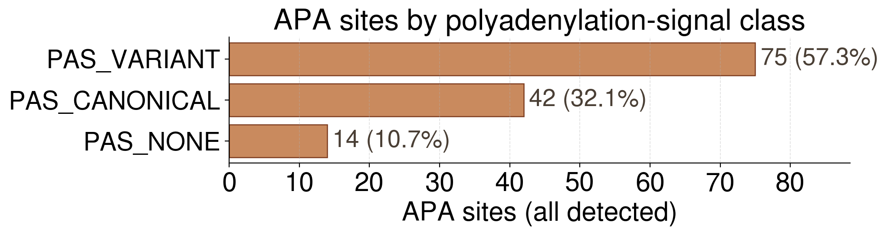
Summary Across All Measured APA Sites
- 131 APA sites checked — 117 (89.3%) carry a polyadenylation signal
- 42 canonical
AATAAA; 75 a variant hexamer - 0 A-rich, PAS-less 3′ ends (no PAS + A-rich downstream genome — possible internal priming or genome-encoded A-run)
PAS class summary
| apa_motif_class | n_sites | pct |
|---|---|---|
| PAS_VARIANT | 75 | 57.25 |
| PAS_CANONICAL | 42 | 32.06 |
| PAS_NONE | 14 | 10.69 |
PAS hexamer usage (and distance upstream of the cleavage site)
| pas_motif | n_sites | median_distance_upstream_nt |
|---|---|---|
| AATAAA | 42 | 17.0 |
| AAGAAA | 31 | 12.0 |
| AATATA | 13 | 6.0 |
| ATTAAA | 13 | 19.0 |
| ACTAAA | 6 | 1.0 |
| AATACA | 4 | 19.0 |
| TATAAA | 4 | 15.0 |
| CATAAA | 2 | 17.5 |
| AATAGA | 1 | 12.0 |
| GATAAA | 1 | 14.0 |
Sites with Differential Epitranscriptomic Modification Between Fragmentforms
Positions where the modification stoichiometry differs between the fragmentforms of a gene (across all detected mod codes; sample-stratified Cochran-Mantel-Haenszel with Benjamini-Hochberg FDR). The table shows sites at FDR<0.05 and |Δ|≥10% only — the exact thresholds this run used. Both are tunable — see input parameters classify_diffs.min_effect and classify_diffs.fdr.
Result-column definitions
- gene_name
- Gene label assigned to the reported row or site.
- mod_code
- Modification code reported by modkit or downstream aggregation.
- chrom
- Reference chromosome or contig containing the reported feature.
- start0
- 0-based inclusive start coordinate of the reported modification site.
- end0
- 0-based exclusive end coordinate of the reported modification site.
- strand
- Genomic strand of the reported feature.
- p_value
- Nominal p-value from the reported hypothesis test.
- p_adj_bh
- Benjamini-Hochberg false-discovery-rate adjusted p-value.
- effect_max_abs_frac_diff
- Maximum absolute difference in modified fraction across tested fragmentform partitions, Mantel-Haenszel-weighted over EVERY sample covering both forms (the sample-stratified effect that matches the primary p-value, NOT the sample-pooled fraction). The old sample-pooled value is kept separately as effect_max_abs_frac_diff_pooled.
| gene_name | mod_code | chrom | start0 | end0 | strand | p_value | p_adj_bh | effect_max_abs_frac_diff |
|---|---|---|---|---|---|---|---|---|
| PCID2 | a (m6A) | chr13 | 113177975 | 113177976 | - | 6.288900e-197 | 9.351594e-194 | 0.854114 |
| RANBP3 | a (m6A) | chr19 | 5917314 | 5917315 | - | 1.469953e-142 | 1.092910e-139 | 0.923716 |
| RANBP3 | a (m6A) | chr19 | 5917337 | 5917338 | - | 6.086191e-122 | 3.016722e-119 | 0.673423 |
| C8A | a (m6A) | chr1 | 56886077 | 56886078 | + | 2.952726e-64 | 1.097676e-61 | 0.889466 |
| SERAC1 | a (m6A) | chr6 | 158114798 | 158114799 | - | 3.286363e-54 | 9.773643e-52 | 0.760649 |
| RANBP3 | a (m6A) | chr19 | 5917420 | 5917421 | - | 1.196679e-19 | 2.965769e-17 | 0.295740 |
| MXD1 | a (m6A) | chr2 | 69938439 | 69938440 | + | 1.948404e-12 | 4.138966e-10 | 0.638847 |
| MXD1 | a (m6A) | chr2 | 69938897 | 69938898 | + | 1.082953e-10 | 2.012938e-08 | 0.470469 |
| C8A | a (m6A) | chr1 | 56917930 | 56917931 | + | 1.800359e-10 | 2.974594e-08 | 0.308616 |
| RANBP3 | a (m6A) | chr19 | 5917441 | 5917442 | - | 5.533486e-10 | 8.228294e-08 | 0.249009 |
| PCID2 | a (m6A) | chr13 | 113177947 | 113177948 | - | 1.078021e-09 | 1.457289e-07 | 0.384504 |
| ATG7 | a (m6A) | chr3 | 11554911 | 11554912 | + | 1.214519e-09 | 1.504991e-07 | 0.390515 |
| IP6K2 | a (m6A) | chr3 | 48693802 | 48693803 | - | 5.935728e-08 | 6.789560e-06 | 0.300544 |
| ASGR1 | a (m6A) | chr17 | 7173773 | 7173774 | - | 1.182560e-07 | 1.256047e-05 | 0.496440 |
| C8A | a (m6A) | chr1 | 56917999 | 56918000 | + | 5.692874e-07 | 5.643536e-05 | 0.150807 |
| RANBP3 | a (m6A) | chr19 | 5917449 | 5917450 | - | 2.612441e-06 | 2.427938e-04 | 0.338288 |
| VGLL4 | a (m6A) | chr3 | 11558059 | 11558060 | - | 3.178453e-06 | 2.780212e-04 | 0.376344 |
| ATG7 | a (m6A) | chr3 | 11555082 | 11555083 | + | 1.000090e-05 | 5.311192e-04 | 0.940901 |
| ALCAM | a (m6A) | chr3 | 105524469 | 105524470 | + | 1.000090e-05 | 5.311192e-04 | 0.518133 |
| MXD1 | a (m6A) | chr2 | 69940417 | 69940418 | + | 6.921657e-06 | 5.311192e-04 | 0.439710 |
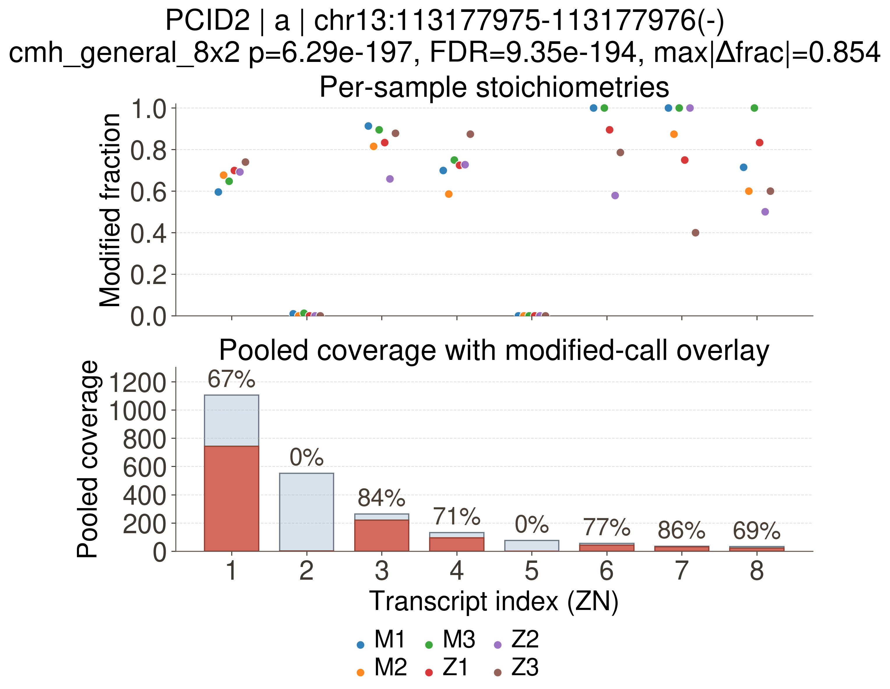
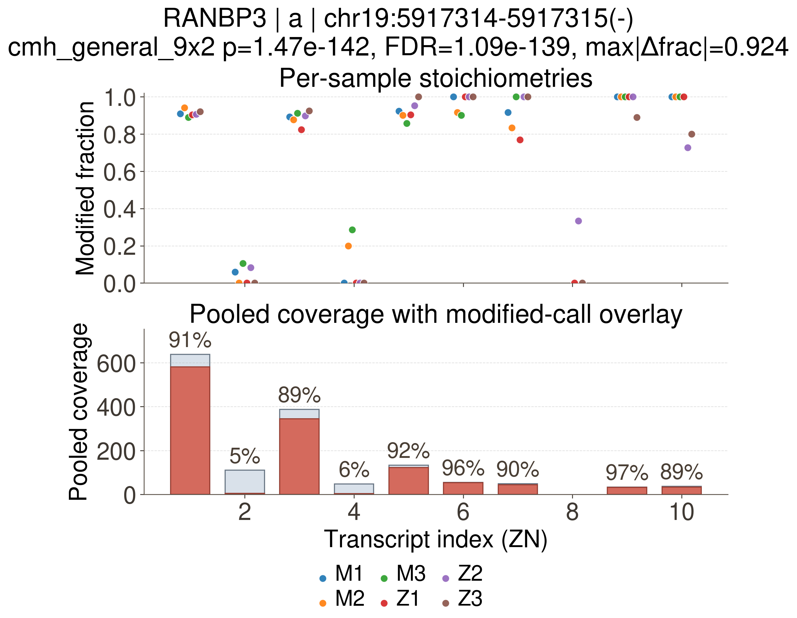
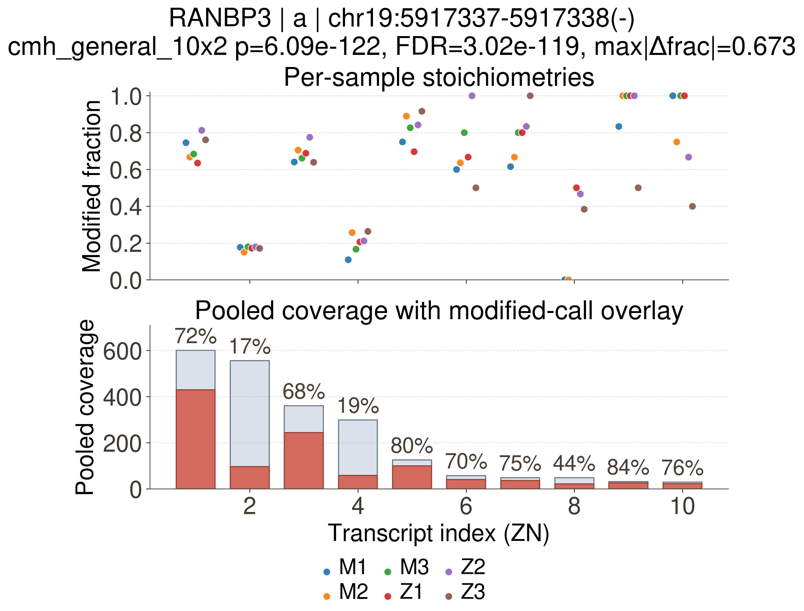
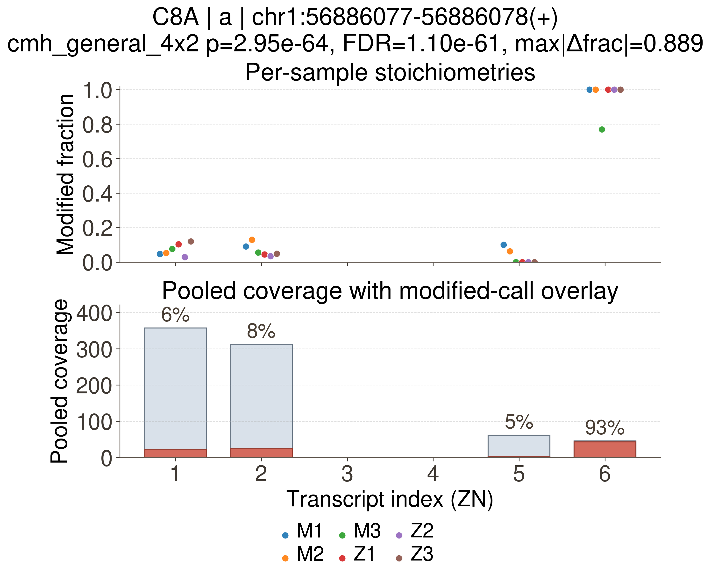
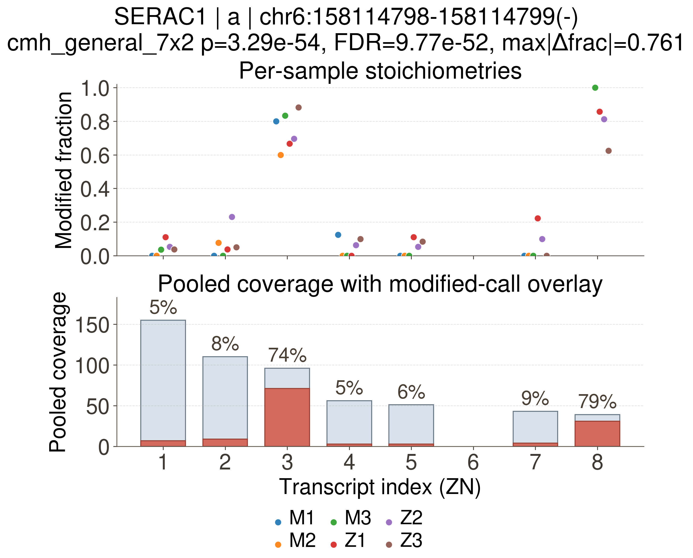
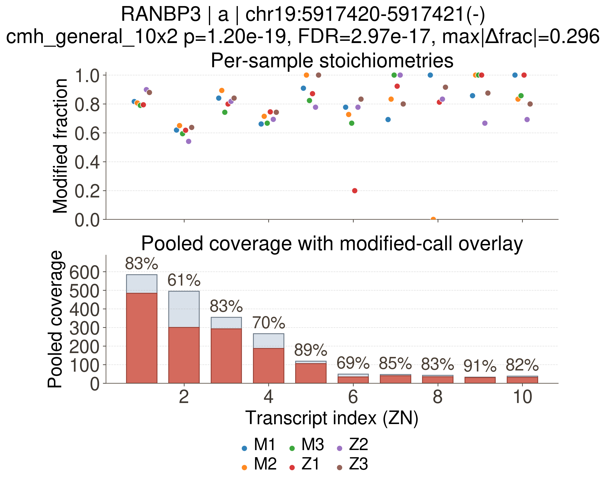
Classification of Transcript Architecture Changes Associated with Differential Epitranscriptomic Modification
Sites are placed in a three-level tree. Level 1 (bucket): does the base exist in the mature RNA of both forms — PRIVATE (base only in the higher form) vs SHARED. Level 2 (event) for shared sites: is the distinguishing structural change ON the base's exon (SHARED_LOCAL → ALT_DONOR / ALT_ACCEPTOR / ALT_POLYA_SITE / IPA_NO_EXTENSION) or ELSEWHERE in the transcript (SHARED_DISTAL)? SHARED_DISTAL now splits into DISTAL_APA (the forms differ in their 3' end / poly(A) site) vs DISTAL_SPLICING (same 3' end, they differ in an internal / 5' splicing choice). Level 3 (direction): which form is the more-modified one, worded per event (e.g. LONGER_EXON_HIGHER, PROXIMAL_HIGHER). A 4th bucket, UNEXPLAINABLE, holds sites with no confident structural cause. Every bucket, event and direction is ALWAYS listed — with a zero count where nothing landed there — so the taxonomy is reported completely. PRIVATE sites are detected by a COVERAGE-INDEPENDENT structural scan (every modified site checked against all fragmentform models of its gene) — so they are found even when the form lacking the base has no coverage there, which the differential test cannot see; SHARED / UNEXPLAINABLE come from the between-fragmentform differential test (BH-FDR + the >10% effect rule, tunable via classify_diffs.min_effect).
| bucket | event | direction | n_sites | pct |
|---|---|---|---|---|
| PRIVATE | SKIPPED_EXON | IN_INCLUDED_EXON | 13 | 6.6% |
| PRIVATE | INTRONIC_POLYA | IN_IPA_ISOFORM | 24 | 12.2% |
| PRIVATE | THREE_PRIME_EXTENSION | IN_DISTAL_EXTENSION | 55 | 28.1% |
| PRIVATE | ALT_LAST_EXON | IN_ALT_LAST_EXON | 50 | 25.5% |
| SHARED_LOCAL | ALT_DONOR | LONGER_EXON_HIGHER | 0 | 0.0% |
| SHARED_LOCAL | ALT_DONOR | LONGER_EXON_LOWER | 0 | 0.0% |
| SHARED_LOCAL | ALT_ACCEPTOR | LONGER_EXON_HIGHER | 1 | 0.5% |
| SHARED_LOCAL | ALT_ACCEPTOR | LONGER_EXON_LOWER | 0 | 0.0% |
| SHARED_LOCAL | ALT_EXON | LONGER_EXON_HIGHER | 1 | 0.5% |
| SHARED_LOCAL | ALT_EXON | LONGER_EXON_LOWER | 0 | 0.0% |
| SHARED_LOCAL | ALT_POLYA_SITE | PROXIMAL_HIGHER | 20 | 10.2% |
| SHARED_LOCAL | ALT_POLYA_SITE | DISTAL_HIGHER | 19 | 9.7% |
| SHARED_LOCAL | RETAINED_INTRON | INTRON_RETAINED_HIGHER | 3 | 1.5% |
| SHARED_LOCAL | RETAINED_INTRON | INTRON_RETAINED_LOWER | 0 | 0.0% |
| SHARED_LOCAL | IPA_EXTENSION | EXTENDS_TO_PA_HIGHER | 8 | 4.1% |
| SHARED_LOCAL | IPA_EXTENSION | EXTENDS_TO_PA_LOWER | 0 | 0.0% |
| SHARED_LOCAL | IPA_NO_EXTENSION | SPLICED_FORM_HIGHER | 0 | 0.0% |
| SHARED_LOCAL | IPA_NO_EXTENSION | POLYA_FORM_HIGHER | 0 | 0.0% |
| SHARED_DISTAL | DISTAL_APA | PROXIMAL_HIGHER | 0 | 0.0% |
| SHARED_DISTAL | DISTAL_APA | DISTAL_HIGHER | 0 | 0.0% |
| SHARED_DISTAL | DISTAL_SPLICING | SAME_3PRIME_END | 2 | 1.0% |
| UNEXPLAINABLE | FIVE_PRIME_UNCERTAIN | — | 0 | 0.0% |
| UNEXPLAINABLE | INTRON_READ_ARTIFACT | — | 0 | 0.0% |
| UNEXPLAINABLE | NO_MODEL | — | 0 | 0.0% |
| UNEXPLAINABLE | UNRESOLVED | — | 0 | 0.0% |
Level 1-2: bucket definitions
- PRIVATE
- The modified base exists (exonically) ONLY in the more-modified fragmentform — it is intronic or absent in the other form's assembled model, so the difference is structurally trivial: the base is physically missing from one isoform. (Called from transcript-model coordinates, guarded against the 5' blind spot.)
- SHARED_LOCAL
- The base is exonic in BOTH fragmentforms, and the structural difference between them lies ON / adjacent to the base's own exon — a shifted splice site (ALT_DONOR/ALT_ACCEPTOR), an alternative poly(A) site, a retained intron, an intronic-polyadenylation extension, or a nearby differential junction. This holds even when the base's exon is the terminal exon in one form.
- SHARED_DISTAL
- The base is exonic in both, in an IDENTICAL local context; the fragmentforms differ only ELSEWHERE in the transcript, so the modification difference tracks isoform identity rather than any feature at the base.
- UNEXPLAINABLE
- The difference cannot be attributed to structure: the 5' blind spot (direct-RNA truncation), an intron / soft-clip read artifact, or too few covered isoforms to compare.
Level 2: event definitions (all events)
- SKIPPED_EXON
- The base sits in a cassette exon spliced INTO the higher form and OUT of the lower form.
- INTRONIC_POLYA
- The base is in the retained-intron 3'UTR of an intronic-polyadenylation isoform — it does not exist in the spliced full-length form.
- THREE_PRIME_EXTENSION
- The base is in a 3'UTR EXTENSION of a SHARED last exon (the two forms share the last-exon acceptor but the higher form extends to a distal poly(A) site) — tandem APA, not an alternative last exon. Distinct from ALT_LAST_EXON, which is a mutually-exclusive (different-acceptor) last exon.
- ALT_LAST_EXON
- The base is in a mutually-exclusive alternative last exon (DIFFERENT acceptor) used by the higher form.
- ALT_DONOR
- The base's exon uses a different 5' splice site (donor) in the two forms, changing that exon's length (structural_delta_nt).
- ALT_ACCEPTOR
- The base's exon uses a different 3' splice site (acceptor) in the two forms, changing that exon's length (structural_delta_nt).
- ALT_EXON
- The base's exon uses a DIFFERENT 5' splice site (donor) AND a different 3' splice site (acceptor) between the two forms — a mutually-exclusive alternative exon that shares neither boundary, not a single shifted splice site.
- ALT_POLYA_SITE
- Same last exon, different poly(A) cleavage sites (tandem APA); the base is in the shared body of the last exon.
- RETAINED_INTRON
- The base's own exon spans an intron in one form that the other form splices out — intron retention right at the base (both forms share the same 3' end).
- IPA_EXTENSION
- The base's own exon is EXTENDED in one form because it reads into the downstream intron and polyadenylates there (intronic polyadenylation WITH extension), while the other form splices on to a more distal 3' end. The base sits in the intron-derived extension. Contrast IPA_NO_EXTENSION, where the poly(A) form cleaves right at the splice donor with no extension.
- IPA_NO_EXTENSION
- Intronic polyadenylation with NO exon extension: one form SPLICES at the base's exon boundary while the other POLYADENYLATES at that SAME coordinate (no reading into the intron). The base's exon is identical in both forms and lies within the EJC/cleavage footprint (~24 nt) of the decision; whether it is spliced-and-EJC-marked or cleaved-and-polyadenylated tracks its modification. Contrast IPA_EXTENSION, where the poly(A) form's exon extends PAST the donor into the intron and the base sits in that extension.
- DISTAL_APA
- The base's local exon is identical in both forms, but the forms end at DIFFERENT poly(A) sites (a distal alternative-polyadenylation choice); methylation tracks which 3' end the isoform uses.
- DISTAL_SPLICING
- The base's local exon is identical AND the forms share the same 3' end; they differ only in an internal / 5' splicing choice ELSEWHERE, so methylation tracks that distal splicing decision.
- FIVE_PRIME_UNCERTAIN
- The base falls in (or 5' of) the 5'-most exon, where direct-RNA 5' truncation makes the assembled model unreliable — no confident structural call.
- INTRON_READ_ARTIFACT
- The more-modified form does not structurally contain the base (it is intronic there) — likely an intron / soft-clip read, not a real exonic modification.
- NO_MODEL
- Fewer than two adequately-covered fragmentforms at the site, so there is nothing to compare.
- UNRESOLVED
- Passes the filters but fits no structural rule.
Level 3: direction definitions (all directions)
- IN_INCLUDED_EXON
- PRIVATE / SKIPPED_EXON: the base lives in a cassette exon spliced IN to the carrier form and spliced OUT of the other.
- IN_IPA_ISOFORM
- PRIVATE / INTRONIC_POLYA: the base lives in the retained-intron 3'UTR of the carrier's intronic-polyadenylation isoform; it does not exist in the spliced form.
- IN_DISTAL_EXTENSION
- PRIVATE / THREE_PRIME_EXTENSION: the base lives in the carrier's 3'UTR EXTENSION to a DISTAL poly(A) site on a SHARED last exon (tandem APA); absent from the shorter form.
- IN_ALT_LAST_EXON
- PRIVATE / ALT_LAST_EXON: the base lives in a mutually-exclusive alternative last exon (different acceptor) used only by the carrier form.
- LONGER_EXON_HIGHER
- The more-modified fragmentform carries the LONGER version of the base's exon (structural_delta_nt = the length difference).
- LONGER_EXON_LOWER
- The LESS-modified fragmentform carries the longer version of the base's exon (i.e. the more-modified form has the shorter one).
- PROXIMAL_HIGHER
- The more-modified fragmentform uses the PROXIMAL (upstream, shorter-3'UTR) poly(A) site.
- DISTAL_HIGHER
- The more-modified fragmentform uses the DISTAL (downstream, longer-3'UTR) poly(A) site.
- INTRON_RETAINED_HIGHER
- The more-modified fragmentform is the one that RETAINS the intron (its exon spans it); the other splices it out.
- INTRON_RETAINED_LOWER
- The LESS-modified fragmentform is the one that retains the intron; the more-modified one splices it out.
- EXTENDS_TO_PA_HIGHER
- The more-modified fragmentform is the one that reads into the intron and polyadenylates there (its exon is the extended, intronic-polyadenylation exon).
- EXTENDS_TO_PA_LOWER
- The LESS-modified fragmentform is the one that reads into the intron and polyadenylates there.
- SPLICED_FORM_HIGHER
- IPA_NO_EXTENSION: the more-modified fragmentform is the one that SPLICES at the base's exon boundary (base retained upstream of a deposited EJC), where the other form polyadenylates.
- POLYA_FORM_HIGHER
- IPA_NO_EXTENSION: the more-modified fragmentform is the one that POLYADENYLATES (cleaves/terminates) at the base's exon boundary, where the other form splices onward.
- SAME_3PRIME_END
- Both fragmentforms end at the same 3' position (same last exon / poly(A) site); the more-modified one differs only in an internal or 5' splicing choice further upstream.
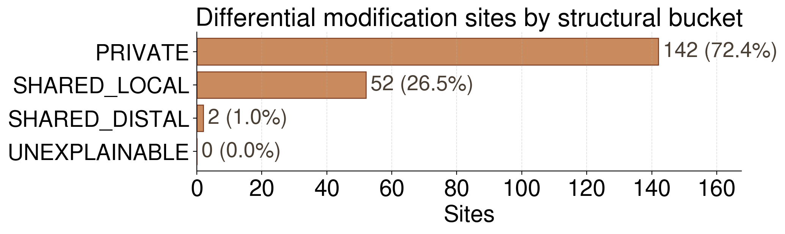
PRIVATE — 142 sites
The modified base exists (exonically) ONLY in the more-modified fragmentform — it is intronic or absent in the other form's assembled model, so the difference is structurally trivial: the base is physically missing from one isoform. (Called from transcript-model coordinates, guarded against the 5' blind spot.)
SKIPPED_EXON — 13 sites
The base sits in a cassette exon spliced INTO the higher form and OUT of the lower form.
IN_INCLUDED_EXON — 13 sites
PRIVATE / SKIPPED_EXON: the base lives in a cassette exon spliced IN to the carrier form and spliced OUT of the other.
Column definitions
- gene_name
- Gene label assigned to the reported row or site.
- mod_code
- Modification code reported by modkit or downstream aggregation.
- chrom
- Reference chromosome or contig containing the reported feature.
- start0
- 0-based inclusive start coordinate of the reported modification site.
- strand
- Genomic strand of the reported feature.
- carry_ZN
- The fragmentform (ZN) that carries the modification at this private site (highest modified fraction among the forms that contain the base).
- carry_arch
- 3' architecture label of the carrying fragmentform (IPA / TANDEM_APA / FULL_LENGTH / REFERENCE / ...).
- carry_frac
- Pooled modified fraction of the site in the carrying fragmentform.
- carry_cov
- Pooled coverage of the site in the carrying fragmentform.
- n_forms_present
- Number of the gene's fragmentforms whose model contains the base (exonic).
- n_forms_absent
- Number of the gene's fragmentforms whose model LACKS the base (intronic/absent, not the 5' blind spot) — the private evidence.
- absent_in_ZN
- The fragmentform (ZN) indices that lack the base entirely (comma-separated).
| gene_name | mod_code | chrom | start0 | strand | direction | structural_delta_nt | carry_ZN | carry_arch | carry_frac | carry_cov | n_forms_present | n_forms_absent | absent_in_ZN |
|---|---|---|---|---|---|---|---|---|---|---|---|---|---|
| VGLL4 | a (m6A) | chr3 | 11643786 | - | IN_INCLUDED_EXON | 698.0 | 1 | REFERENCE | 0.5016 | 632 | 3 | 1 | 3 |
| IP6K2 | a (m6A) | chr3 | 48693091 | - | IN_INCLUDED_EXON | 225.0 | 1 | REFERENCE | 0.4600 | 1211 | 3 | 17 | 10,11,12,13,14,15,16,17,19,2,20,4,5,6,7,8,9 |
| IP6K2 | a (m6A) | chr3 | 48694768 | - | IN_INCLUDED_EXON | 130.0 | 9 | IPA | 0.3404 | 94 | 3 | 17 | 1,10,11,12,13,14,15,16,17,18,19,2,3,4,6,7,8 |
| IP6K2 | a (m6A) | chr3 | 48693073 | - | IN_INCLUDED_EXON | 225.0 | 3 | FULL_LENGTH | 0.3279 | 549 | 3 | 17 | 10,11,12,13,14,15,16,17,19,2,20,4,5,6,7,8,9 |
| VGLL4 | a (m6A) | chr3 | 11643796 | - | IN_INCLUDED_EXON | 569.0 | 2 | TANDEM_APA | 0.2903 | 31 | 3 | 1 | 3 |
| ATG7 | a (m6A) | chr3 | 11282345 | + | IN_INCLUDED_EXON | 245.0 | 4 | TANDEM_APA | 0.2222 | 81 | 1 | 5 | 1,2,3,5,6 |
| ATG7 | a (m6A) | chr3 | 11282375 | + | IN_INCLUDED_EXON | 245.0 | 4 | TANDEM_APA | 0.1667 | 78 | 1 | 5 | 1,2,3,5,6 |
| VGLL4 | a (m6A) | chr3 | 11643567 | - | IN_INCLUDED_EXON | 530.0 | 4 | TANDEM_APA | 0.1429 | 28 | 3 | 1 | 3 |
| VGLL4 | a (m6A) | chr3 | 11643498 | - | IN_INCLUDED_EXON | 698.0 | 1 | REFERENCE | 0.1401 | 735 | 3 | 1 | 3 |
| ATG7 | a (m6A) | chr3 | 11282363 | + | IN_INCLUDED_EXON | 245.0 | 4 | TANDEM_APA | 0.1190 | 84 | 1 | 5 | 1,2,3,5,6 |
INTRONIC_POLYA — 24 sites
The base is in the retained-intron 3'UTR of an intronic-polyadenylation isoform — it does not exist in the spliced full-length form.
IN_IPA_ISOFORM — 24 sites
PRIVATE / INTRONIC_POLYA: the base lives in the retained-intron 3'UTR of the carrier's intronic-polyadenylation isoform; it does not exist in the spliced form.
Column definitions
- gene_name
- Gene label assigned to the reported row or site.
- mod_code
- Modification code reported by modkit or downstream aggregation.
- chrom
- Reference chromosome or contig containing the reported feature.
- start0
- 0-based inclusive start coordinate of the reported modification site.
- strand
- Genomic strand of the reported feature.
- carry_ZN
- The fragmentform (ZN) that carries the modification at this private site (highest modified fraction among the forms that contain the base).
- carry_arch
- 3' architecture label of the carrying fragmentform (IPA / TANDEM_APA / FULL_LENGTH / REFERENCE / ...).
- carry_frac
- Pooled modified fraction of the site in the carrying fragmentform.
- carry_cov
- Pooled coverage of the site in the carrying fragmentform.
- n_forms_present
- Number of the gene's fragmentforms whose model contains the base (exonic).
- n_forms_absent
- Number of the gene's fragmentforms whose model LACKS the base (intronic/absent, not the 5' blind spot) — the private evidence.
- absent_in_ZN
- The fragmentform (ZN) indices that lack the base entirely (comma-separated).
| gene_name | mod_code | chrom | start0 | strand | direction | structural_delta_nt | carry_ZN | carry_arch | carry_frac | carry_cov | n_forms_present | n_forms_absent | absent_in_ZN |
|---|---|---|---|---|---|---|---|---|---|---|---|---|---|
| IP6K2 | a (m6A) | chr3 | 48693931 | - | IN_IPA_ISOFORM | NaN | 15 | IPA | 1.0000 | 36 | 16 | 4 | 1,17,18,3 |
| IP6K2 | a (m6A) | chr3 | 48693899 | - | IN_IPA_ISOFORM | NaN | 7 | IPA | 0.9844 | 128 | 16 | 4 | 1,17,18,3 |
| C8A | a (m6A) | chr1 | 56886077 | + | IN_IPA_ISOFORM | NaN | 6 | IPA | 0.9348 | 46 | 4 | 3 | 3,4,7 |
| ALCAM | a (m6A) | chr3 | 105524628 | + | IN_IPA_ISOFORM | NaN | 3 | IPA | 0.9310 | 58 | 1 | 5 | 1,2,4,5,6 |
| IP6K2 | a (m6A) | chr3 | 48694054 | - | IN_IPA_ISOFORM | NaN | 20 | IPA | 0.9259 | 27 | 16 | 4 | 1,17,18,3 |
| ALCAM | a (m6A) | chr3 | 105524587 | + | IN_IPA_ISOFORM | NaN | 3 | IPA | 0.8571 | 42 | 1 | 5 | 1,2,4,5,6 |
| SERAC1 | a (m6A) | chr6 | 158114798 | - | IN_IPA_ISOFORM | NaN | 8 | IPA | 0.7949 | 39 | 7 | 1 | 6 |
| SERAC1 | a (m6A) | chr6 | 158146718 | - | IN_IPA_ISOFORM | NaN | 6 | IPA | 0.6757 | 37 | 1 | 7 | 1,2,3,4,5,7,8 |
| ATG7 | a (m6A) | chr3 | 11467712 | + | IN_IPA_ISOFORM | NaN | 6 | IPA | 0.5405 | 37 | 1 | 5 | 1,2,3,4,5 |
| ALCAM | a (m6A) | chr3 | 105524543 | + | IN_IPA_ISOFORM | NaN | 3 | IPA | 0.4262 | 61 | 1 | 5 | 1,2,4,5,6 |
THREE_PRIME_EXTENSION — 55 sites
The base is in a 3'UTR EXTENSION of a SHARED last exon (the two forms share the last-exon acceptor but the higher form extends to a distal poly(A) site) — tandem APA, not an alternative last exon. Distinct from ALT_LAST_EXON, which is a mutually-exclusive (different-acceptor) last exon.
IN_DISTAL_EXTENSION — 55 sites
PRIVATE / THREE_PRIME_EXTENSION: the base lives in the carrier's 3'UTR EXTENSION to a DISTAL poly(A) site on a SHARED last exon (tandem APA); absent from the shorter form.
Column definitions
- gene_name
- Gene label assigned to the reported row or site.
- mod_code
- Modification code reported by modkit or downstream aggregation.
- chrom
- Reference chromosome or contig containing the reported feature.
- start0
- 0-based inclusive start coordinate of the reported modification site.
- strand
- Genomic strand of the reported feature.
- carry_ZN
- The fragmentform (ZN) that carries the modification at this private site (highest modified fraction among the forms that contain the base).
- carry_arch
- 3' architecture label of the carrying fragmentform (IPA / TANDEM_APA / FULL_LENGTH / REFERENCE / ...).
- carry_frac
- Pooled modified fraction of the site in the carrying fragmentform.
- carry_cov
- Pooled coverage of the site in the carrying fragmentform.
- n_forms_present
- Number of the gene's fragmentforms whose model contains the base (exonic).
- n_forms_absent
- Number of the gene's fragmentforms whose model LACKS the base (intronic/absent, not the 5' blind spot) — the private evidence.
- absent_in_ZN
- The fragmentform (ZN) indices that lack the base entirely (comma-separated).
| gene_name | mod_code | chrom | start0 | strand | direction | structural_delta_nt | carry_ZN | carry_arch | carry_frac | carry_cov | n_forms_present | n_forms_absent | absent_in_ZN |
|---|---|---|---|---|---|---|---|---|---|---|---|---|---|
| NHSL1 | a (m6A) | chr6 | 138422468 | - | IN_DISTAL_EXTENSION | 1106.0 | 1 | FULL_LENGTH | 1.0000 | 109 | 2 | 1 | 2 |
| RANBP3 | a (m6A) | chr19 | 5917314 | - | IN_DISTAL_EXTENSION | 1182.0 | 9 | FULL_LENGTH | 0.9697 | 33 | 7 | 3 | 2,4,8 |
| MXD1 | a (m6A) | chr2 | 69939760 | + | IN_DISTAL_EXTENSION | 1083.0 | 3 | TANDEM_APA | 0.9474 | 57 | 3 | 1 | 4 |
| VGLL4 | a (m6A) | chr3 | 11558248 | - | IN_DISTAL_EXTENSION | 356.0 | 2 | TANDEM_APA | 0.9474 | 57 | 3 | 1 | 4 |
| ATG7 | a (m6A) | chr3 | 11555121 | + | IN_DISTAL_EXTENSION | 2582.0 | 3 | REFERENCE | 0.9444 | 72 | 1 | 5 | 1,2,4,5,6 |
| MXD1 | a (m6A) | chr2 | 69940436 | + | IN_DISTAL_EXTENSION | 1083.0 | 3 | TANDEM_APA | 0.8868 | 53 | 3 | 1 | 4 |
| MXD1 | a (m6A) | chr2 | 69940417 | + | IN_DISTAL_EXTENSION | 1083.0 | 3 | TANDEM_APA | 0.8261 | 46 | 3 | 1 | 4 |
| ATG7 | a (m6A) | chr3 | 11555426 | + | IN_DISTAL_EXTENSION | 2582.0 | 3 | REFERENCE | 0.8000 | 100 | 1 | 5 | 1,2,4,5,6 |
| NHSL1 | a (m6A) | chr6 | 138423145 | - | IN_DISTAL_EXTENSION | 1106.0 | 1 | FULL_LENGTH | 0.7113 | 97 | 2 | 1 | 2 |
| MXD1 | a (m6A) | chr2 | 69939779 | + | IN_DISTAL_EXTENSION | 1083.0 | 3 | TANDEM_APA | 0.7097 | 62 | 3 | 1 | 4 |
ALT_LAST_EXON — 50 sites
The base is in a mutually-exclusive alternative last exon (DIFFERENT acceptor) used by the higher form.
IN_ALT_LAST_EXON — 50 sites
PRIVATE / ALT_LAST_EXON: the base lives in a mutually-exclusive alternative last exon (different acceptor) used only by the carrier form.
Column definitions
- gene_name
- Gene label assigned to the reported row or site.
- mod_code
- Modification code reported by modkit or downstream aggregation.
- chrom
- Reference chromosome or contig containing the reported feature.
- start0
- 0-based inclusive start coordinate of the reported modification site.
- strand
- Genomic strand of the reported feature.
- carry_ZN
- The fragmentform (ZN) that carries the modification at this private site (highest modified fraction among the forms that contain the base).
- carry_arch
- 3' architecture label of the carrying fragmentform (IPA / TANDEM_APA / FULL_LENGTH / REFERENCE / ...).
- carry_frac
- Pooled modified fraction of the site in the carrying fragmentform.
- carry_cov
- Pooled coverage of the site in the carrying fragmentform.
- n_forms_present
- Number of the gene's fragmentforms whose model contains the base (exonic).
- n_forms_absent
- Number of the gene's fragmentforms whose model LACKS the base (intronic/absent, not the 5' blind spot) — the private evidence.
- absent_in_ZN
- The fragmentform (ZN) indices that lack the base entirely (comma-separated).
| gene_name | mod_code | chrom | start0 | strand | direction | structural_delta_nt | carry_ZN | carry_arch | carry_frac | carry_cov | n_forms_present | n_forms_absent | absent_in_ZN |
|---|---|---|---|---|---|---|---|---|---|---|---|---|---|
| ATG7 | a (m6A) | chr3 | 11555082 | + | IN_ALT_LAST_EXON | 86893.0 | 3 | REFERENCE | 0.9913 | 115 | 5 | 1 | 6 |
| SERAC1 | a (m6A) | chr6 | 158111378 | - | IN_ALT_LAST_EXON | 2972.0 | 5 | FULL_LENGTH | 0.9024 | 41 | 5 | 3 | 3,6,8 |
| ALCAM | a (m6A) | chr3 | 105574539 | + | IN_ALT_LAST_EXON | 49517.0 | 6 | TANDEM_APA | 0.8929 | 28 | 5 | 1 | 3 |
| SERAC1 | a (m6A) | chr6 | 158111089 | - | IN_ALT_LAST_EXON | 2972.0 | 1 | REFERENCE | 0.8543 | 151 | 5 | 3 | 3,6,8 |
| C8A | a (m6A) | chr1 | 56917930 | + | IN_ALT_LAST_EXON | 33783.0 | 5 | REFERENCE | 0.8485 | 66 | 3 | 4 | 3,4,6,7 |
| IP6K2 | a (m6A) | chr3 | 48688309 | - | IN_ALT_LAST_EXON | 4675.0 | 1 | REFERENCE | 0.7828 | 1289 | 3 | 17 | 10,11,12,13,14,15,16,17,19,2,20,4,5,6,7,8,9 |
| IP6K2 | a (m6A) | chr3 | 48688516 | - | IN_ALT_LAST_EXON | 4675.0 | 1 | REFERENCE | 0.7808 | 1483 | 3 | 17 | 10,11,12,13,14,15,16,17,19,2,20,4,5,6,7,8,9 |
| SERAC1 | a (m6A) | chr6 | 158111224 | - | IN_ALT_LAST_EXON | 2972.0 | 5 | FULL_LENGTH | 0.7692 | 39 | 5 | 3 | 3,6,8 |
| ATG7 | a (m6A) | chr3 | 11554911 | + | IN_ALT_LAST_EXON | 86893.0 | 3 | REFERENCE | 0.7573 | 103 | 5 | 1 | 6 |
| SERAC1 | a (m6A) | chr6 | 158110929 | - | IN_ALT_LAST_EXON | 2972.0 | 7 | TANDEM_APA | 0.7568 | 37 | 5 | 3 | 3,6,8 |
SHARED_LOCAL — 52 sites
The base is exonic in BOTH fragmentforms, and the structural difference between them lies ON / adjacent to the base's own exon — a shifted splice site (ALT_DONOR/ALT_ACCEPTOR), an alternative poly(A) site, a retained intron, an intronic-polyadenylation extension, or a nearby differential junction. This holds even when the base's exon is the terminal exon in one form.
ALT_DONOR — 0 sites
The base's exon uses a different 5' splice site (donor) in the two forms, changing that exon's length (structural_delta_nt).
LONGER_EXON_HIGHER — 0 sites
The more-modified fragmentform carries the LONGER version of the base's exon (structural_delta_nt = the length difference).
No sites of this direction in this run.
LONGER_EXON_LOWER — 0 sites
The LESS-modified fragmentform carries the longer version of the base's exon (i.e. the more-modified form has the shorter one).
No sites of this direction in this run.
ALT_ACCEPTOR — 1 site
The base's exon uses a different 3' splice site (acceptor) in the two forms, changing that exon's length (structural_delta_nt).
LONGER_EXON_HIGHER — 1 site
The more-modified fragmentform carries the LONGER version of the base's exon (structural_delta_nt = the length difference).
Column definitions
- example_rank
- 1-based rank of the site within its leaf (bucket / event / direction) by hi_lo_delta, then FDR, then the shallower form's coverage. The rankNN__ example figures follow this rank, so row N of the table is figure N.
- gene_name
- Gene label assigned to the reported row or site.
- mod_code
- Modification code reported by modkit or downstream aggregation.
- chrom
- Reference chromosome or contig containing the reported feature.
- start0
- 0-based inclusive start coordinate of the reported modification site.
- strand
- Genomic strand of the reported feature.
- hi_ZN
- ZN partition index of the higher-stoichiometry isoform in the classified contrast.
- hi_arch
- 3' architecture of the higher-stoichiometry isoform versus the gene's longest-3'UTR anchor (IPA / TANDEM_APA / FULL_LENGTH / DISTAL_EXT / REFERENCE / AMBIGUOUS).
- hi_frac
- Pooled modified fraction (stoichiometry) of the higher isoform at the site.
- hi_cov
- Pooled valid coverage (reads) of the higher isoform at the site.
- lo_ZN
- ZN partition index of the lower-stoichiometry isoform in the classified contrast.
- lo_arch
- 3' architecture of the lower-stoichiometry isoform versus the gene's longest-3'UTR anchor.
- lo_frac
- Pooled modified fraction (stoichiometry) of the lower isoform at the site.
- lo_cov
- Pooled valid coverage (reads) of the lower isoform at the site.
- hi_lo_delta
- hi_frac minus lo_frac: the pooled stoichiometry difference between the two fragmentforms this classification compares. This is the contrast the structural event explains; the table and the example figures are ranked by it (then FDR, then coverage).
- stoich_tier
- Magnitude of the between-isoform stoichiometry gap: T1_MARGINAL (.10–.25) / T2_MODERATE / T3_STRONG / T4_NEAR_BINARY (≥.75).
- hi_stoich_level
- Absolute modification level of the favored fragmentform: HI_HYPER (≥.66) / HI_INTERMED / HI_HYPO (<.33).
- effect_max_abs_frac_diff
- Maximum absolute difference in modified fraction across tested fragmentform partitions, Mantel-Haenszel-weighted over EVERY sample covering both forms (the sample-stratified effect that matches the primary p-value, NOT the sample-pooled fraction). The old sample-pooled value is kept separately as effect_max_abs_frac_diff_pooled.
- p_adj_bh
- Benjamini-Hochberg false-discovery-rate adjusted p-value.
| example_rank | gene_name | mod_code | chrom | start0 | strand | direction | structural_delta_nt | hi_ZN | hi_arch | hi_frac | hi_cov | lo_ZN | lo_arch | lo_frac | lo_cov | hi_lo_delta | stoich_tier | hi_stoich_level | effect_max_abs_frac_diff | p_adj_bh |
|---|---|---|---|---|---|---|---|---|---|---|---|---|---|---|---|---|---|---|---|---|
| 1 | PCID2 | a (m6A) | chr13 | 113177975 | - | LONGER_EXON_HIGHER | 32.0 | 7 | TANDEM_APA | 0.8611 | 36 | 5 | TANDEM_APA | 0.0 | 76 | 0.8611 | T4_NEAR_BINARY | HI_HYPER | 0.8541 | 9.352000e-194 |
Top 1 isoform architecture map(s) — exon/intron tracks, site marked
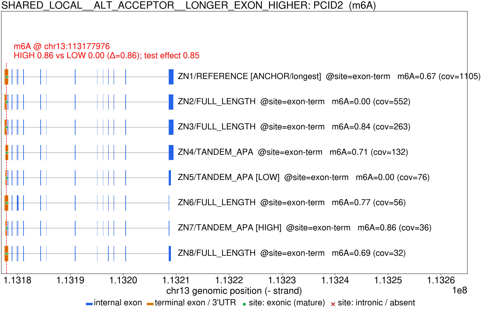
Top 1 site figure(s) — per-sample stoichiometry & pooled coverage
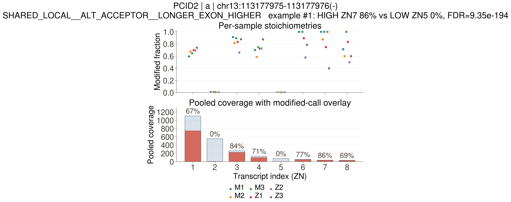
LONGER_EXON_LOWER — 0 sites
The LESS-modified fragmentform carries the longer version of the base's exon (i.e. the more-modified form has the shorter one).
No sites of this direction in this run.
ALT_EXON — 1 site
The base's exon uses a DIFFERENT 5' splice site (donor) AND a different 3' splice site (acceptor) between the two forms — a mutually-exclusive alternative exon that shares neither boundary, not a single shifted splice site.
LONGER_EXON_HIGHER — 1 site
The more-modified fragmentform carries the LONGER version of the base's exon (structural_delta_nt = the length difference).
Column definitions
- example_rank
- 1-based rank of the site within its leaf (bucket / event / direction) by hi_lo_delta, then FDR, then the shallower form's coverage. The rankNN__ example figures follow this rank, so row N of the table is figure N.
- gene_name
- Gene label assigned to the reported row or site.
- mod_code
- Modification code reported by modkit or downstream aggregation.
- chrom
- Reference chromosome or contig containing the reported feature.
- start0
- 0-based inclusive start coordinate of the reported modification site.
- strand
- Genomic strand of the reported feature.
- hi_ZN
- ZN partition index of the higher-stoichiometry isoform in the classified contrast.
- hi_arch
- 3' architecture of the higher-stoichiometry isoform versus the gene's longest-3'UTR anchor (IPA / TANDEM_APA / FULL_LENGTH / DISTAL_EXT / REFERENCE / AMBIGUOUS).
- hi_frac
- Pooled modified fraction (stoichiometry) of the higher isoform at the site.
- hi_cov
- Pooled valid coverage (reads) of the higher isoform at the site.
- lo_ZN
- ZN partition index of the lower-stoichiometry isoform in the classified contrast.
- lo_arch
- 3' architecture of the lower-stoichiometry isoform versus the gene's longest-3'UTR anchor.
- lo_frac
- Pooled modified fraction (stoichiometry) of the lower isoform at the site.
- lo_cov
- Pooled valid coverage (reads) of the lower isoform at the site.
- hi_lo_delta
- hi_frac minus lo_frac: the pooled stoichiometry difference between the two fragmentforms this classification compares. This is the contrast the structural event explains; the table and the example figures are ranked by it (then FDR, then coverage).
- stoich_tier
- Magnitude of the between-isoform stoichiometry gap: T1_MARGINAL (.10–.25) / T2_MODERATE / T3_STRONG / T4_NEAR_BINARY (≥.75).
- hi_stoich_level
- Absolute modification level of the favored fragmentform: HI_HYPER (≥.66) / HI_INTERMED / HI_HYPO (<.33).
- effect_max_abs_frac_diff
- Maximum absolute difference in modified fraction across tested fragmentform partitions, Mantel-Haenszel-weighted over EVERY sample covering both forms (the sample-stratified effect that matches the primary p-value, NOT the sample-pooled fraction). The old sample-pooled value is kept separately as effect_max_abs_frac_diff_pooled.
- p_adj_bh
- Benjamini-Hochberg false-discovery-rate adjusted p-value.
| example_rank | gene_name | mod_code | chrom | start0 | strand | direction | structural_delta_nt | hi_ZN | hi_arch | hi_frac | hi_cov | lo_ZN | lo_arch | lo_frac | lo_cov | hi_lo_delta | stoich_tier | hi_stoich_level | effect_max_abs_frac_diff | p_adj_bh |
|---|---|---|---|---|---|---|---|---|---|---|---|---|---|---|---|---|---|---|---|---|
| 1 | ASGR2 | a (m6A) | chr17 | 7114229 | - | LONGER_EXON_HIGHER | 145.0 | 5 | TANDEM_APA | 0.2697 | 178 | 13 | TANDEM_APA | 0.0263 | 38 | 0.2433 | T1_MARGINAL | HI_HYPO | 0.2601 | 0.000531 |
Top 1 isoform architecture map(s) — exon/intron tracks, site marked
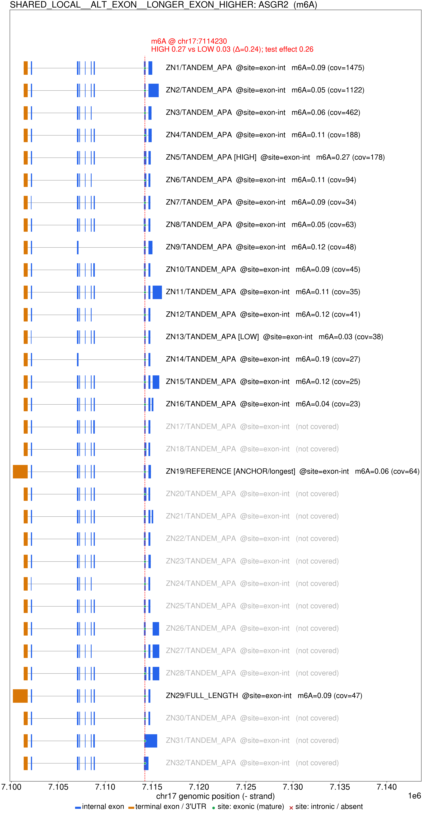
Top 1 site figure(s) — per-sample stoichiometry & pooled coverage
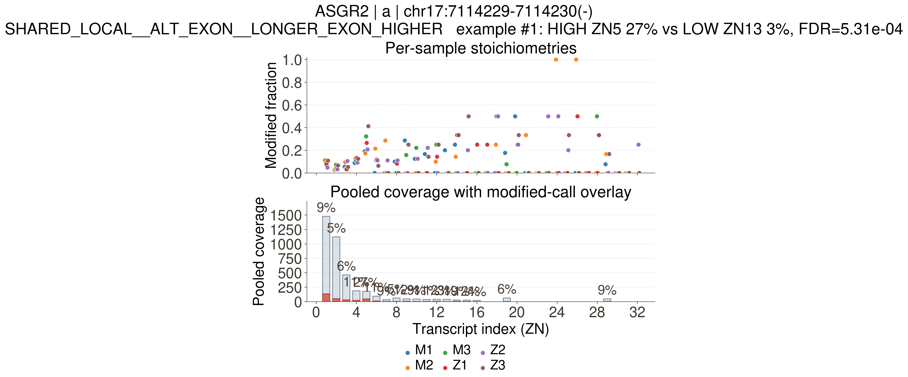
LONGER_EXON_LOWER — 0 sites
The LESS-modified fragmentform carries the longer version of the base's exon (i.e. the more-modified form has the shorter one).
No sites of this direction in this run.
ALT_POLYA_SITE — 39 sites
Same last exon, different poly(A) cleavage sites (tandem APA); the base is in the shared body of the last exon.
PROXIMAL_HIGHER — 20 sites
The more-modified fragmentform uses the PROXIMAL (upstream, shorter-3'UTR) poly(A) site.
Column definitions
- example_rank
- 1-based rank of the site within its leaf (bucket / event / direction) by hi_lo_delta, then FDR, then the shallower form's coverage. The rankNN__ example figures follow this rank, so row N of the table is figure N.
- gene_name
- Gene label assigned to the reported row or site.
- mod_code
- Modification code reported by modkit or downstream aggregation.
- chrom
- Reference chromosome or contig containing the reported feature.
- start0
- 0-based inclusive start coordinate of the reported modification site.
- strand
- Genomic strand of the reported feature.
- hi_ZN
- ZN partition index of the higher-stoichiometry isoform in the classified contrast.
- hi_arch
- 3' architecture of the higher-stoichiometry isoform versus the gene's longest-3'UTR anchor (IPA / TANDEM_APA / FULL_LENGTH / DISTAL_EXT / REFERENCE / AMBIGUOUS).
- hi_frac
- Pooled modified fraction (stoichiometry) of the higher isoform at the site.
- hi_cov
- Pooled valid coverage (reads) of the higher isoform at the site.
- lo_ZN
- ZN partition index of the lower-stoichiometry isoform in the classified contrast.
- lo_arch
- 3' architecture of the lower-stoichiometry isoform versus the gene's longest-3'UTR anchor.
- lo_frac
- Pooled modified fraction (stoichiometry) of the lower isoform at the site.
- lo_cov
- Pooled valid coverage (reads) of the lower isoform at the site.
- hi_lo_delta
- hi_frac minus lo_frac: the pooled stoichiometry difference between the two fragmentforms this classification compares. This is the contrast the structural event explains; the table and the example figures are ranked by it (then FDR, then coverage).
- stoich_tier
- Magnitude of the between-isoform stoichiometry gap: T1_MARGINAL (.10–.25) / T2_MODERATE / T3_STRONG / T4_NEAR_BINARY (≥.75).
- hi_stoich_level
- Absolute modification level of the favored fragmentform: HI_HYPER (≥.66) / HI_INTERMED / HI_HYPO (<.33).
- effect_max_abs_frac_diff
- Maximum absolute difference in modified fraction across tested fragmentform partitions, Mantel-Haenszel-weighted over EVERY sample covering both forms (the sample-stratified effect that matches the primary p-value, NOT the sample-pooled fraction). The old sample-pooled value is kept separately as effect_max_abs_frac_diff_pooled.
- p_adj_bh
- Benjamini-Hochberg false-discovery-rate adjusted p-value.
| example_rank | gene_name | mod_code | chrom | start0 | strand | direction | structural_delta_nt | hi_ZN | hi_arch | hi_frac | hi_cov | lo_ZN | lo_arch | lo_frac | lo_cov | hi_lo_delta | stoich_tier | hi_stoich_level | effect_max_abs_frac_diff | p_adj_bh |
|---|---|---|---|---|---|---|---|---|---|---|---|---|---|---|---|---|---|---|---|---|
| 1 | MXD1 | a (m6A) | chr2 | 69938439 | + | PROXIMAL_HIGHER | 2304.0 | 3 | TANDEM_APA | 0.9310 | 58 | 2 | REFERENCE | 0.1754 | 114 | 0.7556 | T4_NEAR_BINARY | HI_HYPER | 0.6388 | 4.139000e-10 |
| 2 | MXD1 | a (m6A) | chr2 | 69940417 | + | PROXIMAL_HIGHER | 2304.0 | 3 | TANDEM_APA | 0.8261 | 46 | 2 | REFERENCE | 0.2136 | 103 | 0.6125 | T3_STRONG | HI_HYPER | 0.4397 | 5.311000e-04 |
| 3 | MXD1 | a (m6A) | chr2 | 69938415 | + | PROXIMAL_HIGHER | 2304.0 | 3 | TANDEM_APA | 0.7879 | 33 | 2 | REFERENCE | 0.2069 | 87 | 0.5810 | T3_STRONG | HI_HYPER | 0.4582 | 7.435000e-03 |
| 4 | MXD1 | a (m6A) | chr2 | 69939760 | + | PROXIMAL_HIGHER | 2304.0 | 3 | TANDEM_APA | 0.9474 | 57 | 2 | REFERENCE | 0.4444 | 117 | 0.5029 | T3_STRONG | HI_HYPER | 0.2450 | 3.083000e-02 |
| 5 | MXD1 | a (m6A) | chr2 | 69938897 | + | PROXIMAL_HIGHER | 2304.0 | 3 | TANDEM_APA | 0.6226 | 53 | 2 | REFERENCE | 0.1273 | 110 | 0.4954 | T2_MODERATE | HI_INTERMED | 0.4705 | 2.013000e-08 |
| 6 | MXD1 | a (m6A) | chr2 | 69938700 | + | PROXIMAL_HIGHER | 2304.0 | 3 | TANDEM_APA | 0.7091 | 55 | 2 | REFERENCE | 0.2212 | 113 | 0.4879 | T2_MODERATE | HI_HYPER | 0.3015 | 1.933000e-02 |
| 7 | MXD1 | a (m6A) | chr2 | 69939779 | + | PROXIMAL_HIGHER | 2304.0 | 3 | TANDEM_APA | 0.7097 | 62 | 2 | REFERENCE | 0.2522 | 115 | 0.4575 | T2_MODERATE | HI_HYPER | 0.3869 | 2.328000e-03 |
| 8 | MXD1 | a (m6A) | chr2 | 69938505 | + | PROXIMAL_HIGHER | 2304.0 | 3 | TANDEM_APA | 0.9375 | 64 | 2 | REFERENCE | 0.5000 | 118 | 0.4375 | T2_MODERATE | HI_HYPER | 0.3254 | 6.425000e-03 |
| 9 | MXD1 | a (m6A) | chr2 | 69938378 | + | PROXIMAL_HIGHER | 2304.0 | 3 | TANDEM_APA | 0.4737 | 57 | 2 | REFERENCE | 0.0625 | 112 | 0.4112 | T2_MODERATE | HI_INTERMED | 0.3758 | 8.797000e-03 |
| 10 | VGLL4 | a (m6A) | chr3 | 11558059 | - | PROXIMAL_HIGHER | 1910.0 | 2 | TANDEM_APA | 0.5294 | 51 | 3 | FULL_LENGTH | 0.1190 | 42 | 0.4104 | T2_MODERATE | HI_INTERMED | 0.3763 | 2.780000e-04 |
Top 10 isoform architecture map(s) — exon/intron tracks, site marked
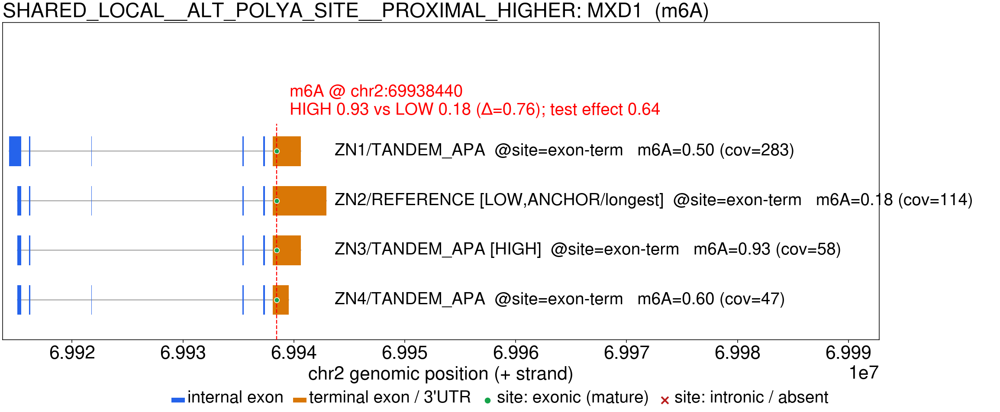
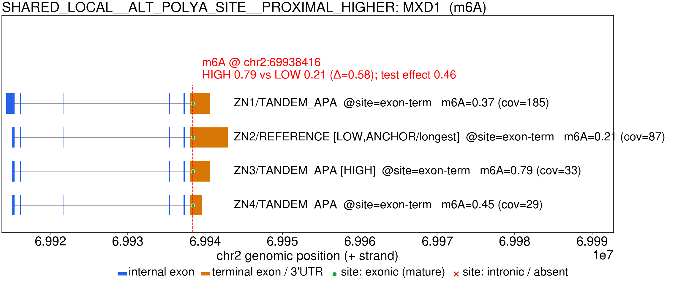
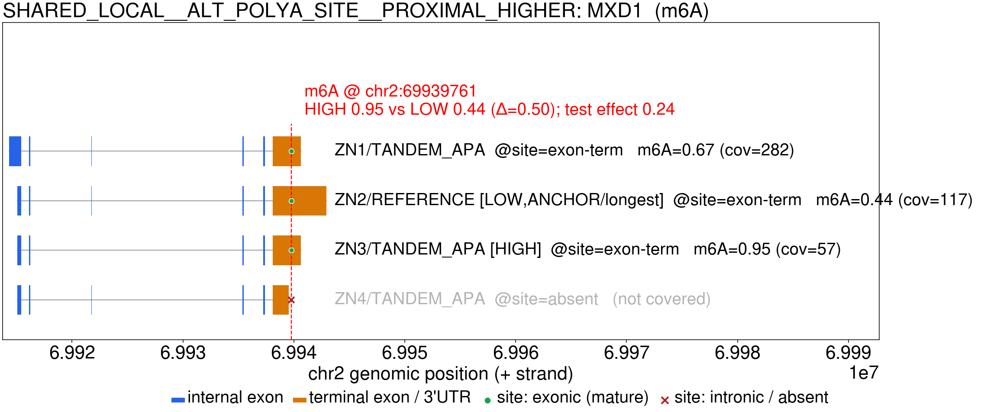
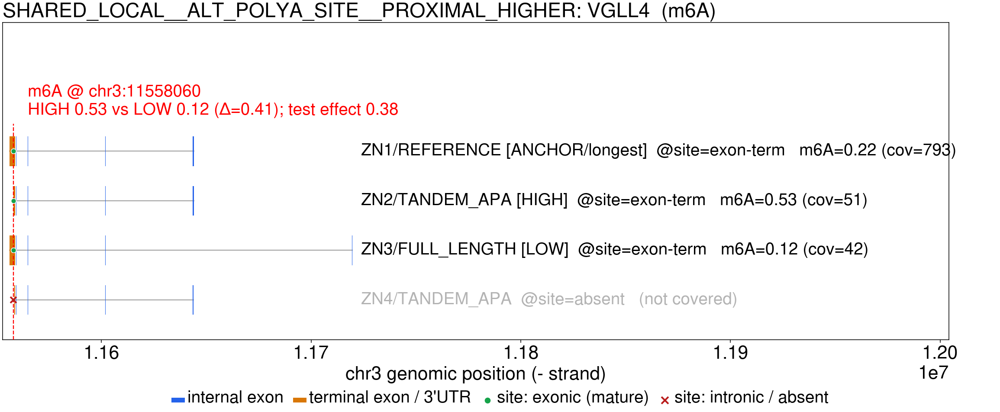
Top 10 site figure(s) — per-sample stoichiometry & pooled coverage
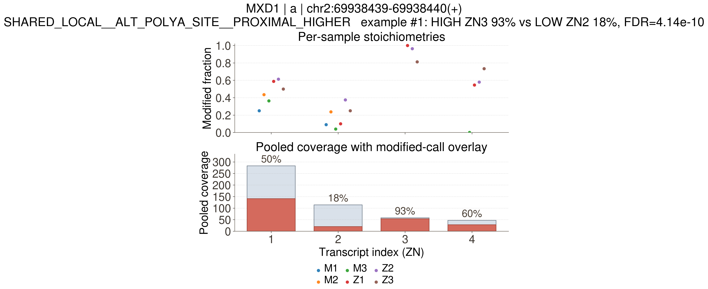
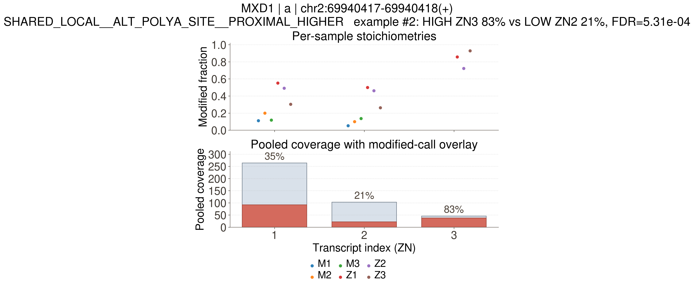
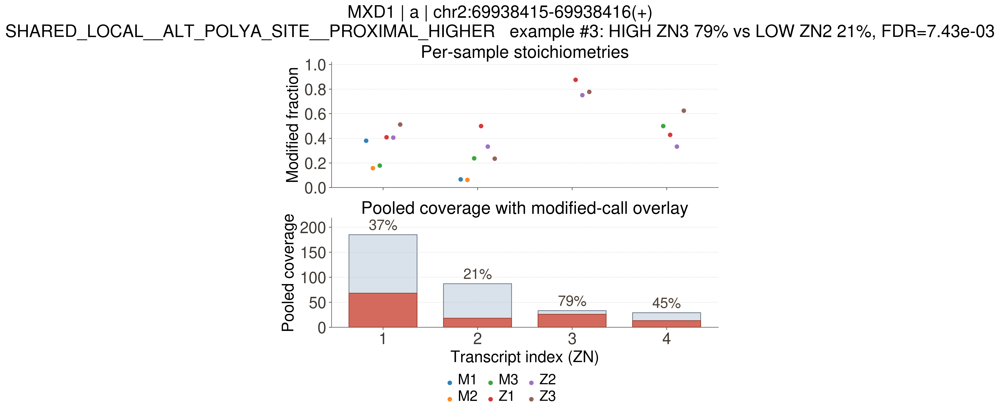
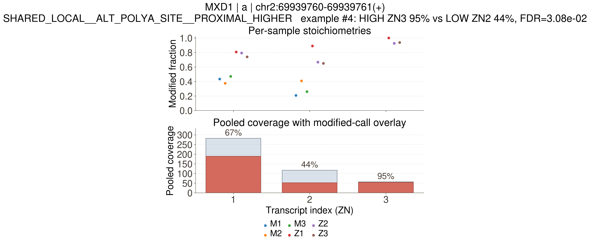
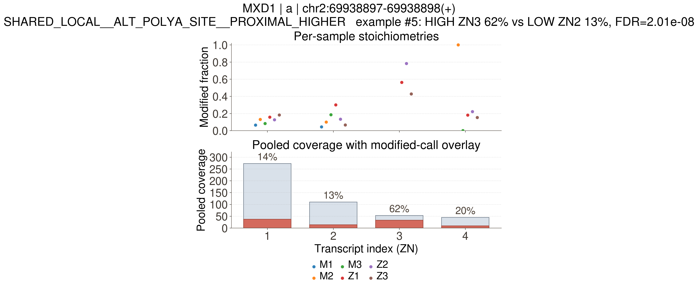
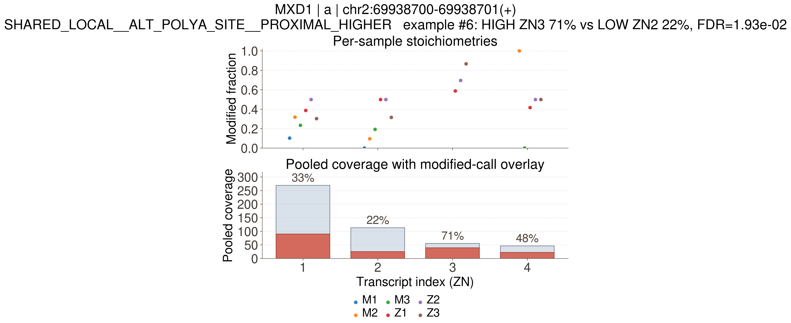
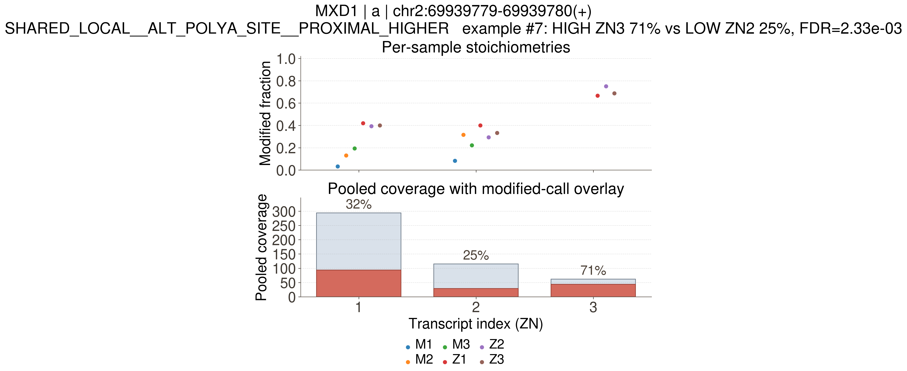
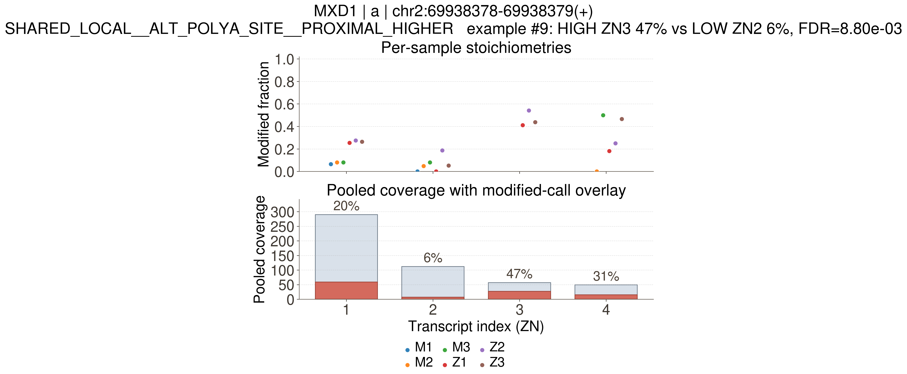
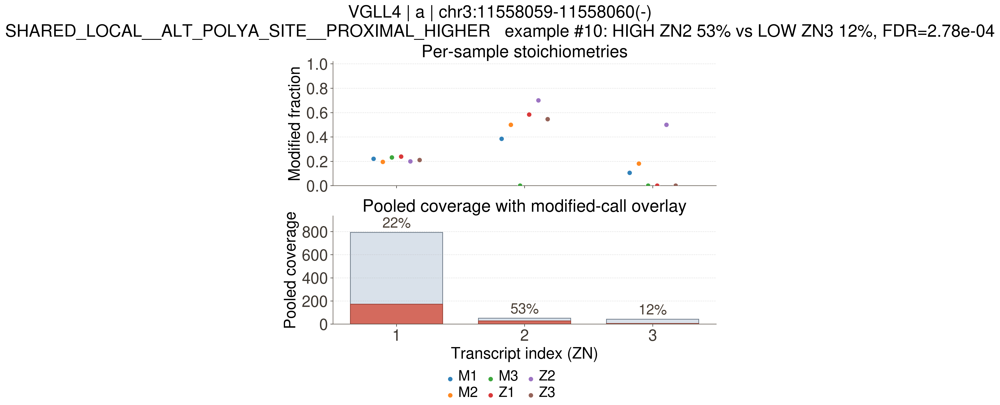
DISTAL_HIGHER — 19 sites
The more-modified fragmentform uses the DISTAL (downstream, longer-3'UTR) poly(A) site.
Column definitions
- example_rank
- 1-based rank of the site within its leaf (bucket / event / direction) by hi_lo_delta, then FDR, then the shallower form's coverage. The rankNN__ example figures follow this rank, so row N of the table is figure N.
- gene_name
- Gene label assigned to the reported row or site.
- mod_code
- Modification code reported by modkit or downstream aggregation.
- chrom
- Reference chromosome or contig containing the reported feature.
- start0
- 0-based inclusive start coordinate of the reported modification site.
- strand
- Genomic strand of the reported feature.
- hi_ZN
- ZN partition index of the higher-stoichiometry isoform in the classified contrast.
- hi_arch
- 3' architecture of the higher-stoichiometry isoform versus the gene's longest-3'UTR anchor (IPA / TANDEM_APA / FULL_LENGTH / DISTAL_EXT / REFERENCE / AMBIGUOUS).
- hi_frac
- Pooled modified fraction (stoichiometry) of the higher isoform at the site.
- hi_cov
- Pooled valid coverage (reads) of the higher isoform at the site.
- lo_ZN
- ZN partition index of the lower-stoichiometry isoform in the classified contrast.
- lo_arch
- 3' architecture of the lower-stoichiometry isoform versus the gene's longest-3'UTR anchor.
- lo_frac
- Pooled modified fraction (stoichiometry) of the lower isoform at the site.
- lo_cov
- Pooled valid coverage (reads) of the lower isoform at the site.
- hi_lo_delta
- hi_frac minus lo_frac: the pooled stoichiometry difference between the two fragmentforms this classification compares. This is the contrast the structural event explains; the table and the example figures are ranked by it (then FDR, then coverage).
- stoich_tier
- Magnitude of the between-isoform stoichiometry gap: T1_MARGINAL (.10–.25) / T2_MODERATE / T3_STRONG / T4_NEAR_BINARY (≥.75).
- hi_stoich_level
- Absolute modification level of the favored fragmentform: HI_HYPER (≥.66) / HI_INTERMED / HI_HYPO (<.33).
- effect_max_abs_frac_diff
- Maximum absolute difference in modified fraction across tested fragmentform partitions, Mantel-Haenszel-weighted over EVERY sample covering both forms (the sample-stratified effect that matches the primary p-value, NOT the sample-pooled fraction). The old sample-pooled value is kept separately as effect_max_abs_frac_diff_pooled.
- p_adj_bh
- Benjamini-Hochberg false-discovery-rate adjusted p-value.
| example_rank | gene_name | mod_code | chrom | start0 | strand | direction | structural_delta_nt | hi_ZN | hi_arch | hi_frac | hi_cov | lo_ZN | lo_arch | lo_frac | lo_cov | hi_lo_delta | stoich_tier | hi_stoich_level | effect_max_abs_frac_diff | p_adj_bh |
|---|---|---|---|---|---|---|---|---|---|---|---|---|---|---|---|---|---|---|---|---|
| 1 | ATG7 | a (m6A) | chr3 | 11555082 | + | DISTAL_HIGHER | 2582.0 | 3 | REFERENCE | 0.9913 | 115 | 4 | TANDEM_APA | 0.0435 | 69 | 0.9478 | T4_NEAR_BINARY | HI_HYPER | 0.9409 | 5.311000e-04 |
| 2 | RANBP3 | a (m6A) | chr19 | 5917337 | - | DISTAL_HIGHER | 1182.0 | 9 | FULL_LENGTH | 0.8387 | 31 | 2 | TANDEM_APA | 0.1730 | 555 | 0.6657 | T3_STRONG | HI_HYPER | 0.6734 | 3.017000e-119 |
| 3 | ASGR2 | a (m6A) | chr17 | 7101415 | - | DISTAL_HIGHER | 1157.0 | 29 | FULL_LENGTH | 0.8837 | 43 | 11 | TANDEM_APA | 0.4688 | 32 | 0.4150 | T2_MODERATE | HI_HYPER | 0.4754 | 2.546000e-02 |
| 4 | ATG7 | a (m6A) | chr3 | 11554911 | + | DISTAL_HIGHER | 2582.0 | 3 | REFERENCE | 0.7573 | 103 | 1 | TANDEM_APA | 0.4178 | 1424 | 0.3394 | T2_MODERATE | HI_HYPER | 0.3905 | 1.505000e-07 |
| 5 | C8A | a (m6A) | chr1 | 56917930 | + | DISTAL_HIGHER | 214.0 | 5 | REFERENCE | 0.8485 | 66 | 1 | TANDEM_APA | 0.5430 | 372 | 0.3055 | T2_MODERATE | HI_HYPER | 0.3086 | 2.975000e-08 |
| 6 | RANBP3 | a (m6A) | chr19 | 5917420 | - | DISTAL_HIGHER | 1182.0 | 9 | FULL_LENGTH | 0.9091 | 33 | 2 | TANDEM_APA | 0.6061 | 495 | 0.3030 | T2_MODERATE | HI_HYPER | 0.2957 | 2.966000e-17 |
| 7 | RANBP3 | a (m6A) | chr19 | 5917449 | - | DISTAL_HIGHER | 873.0 | 7 | FULL_LENGTH | 0.4340 | 53 | 6 | TANDEM_APA | 0.1346 | 52 | 0.2993 | T2_MODERATE | HI_INTERMED | 0.3383 | 2.428000e-04 |
| 8 | IP6K2 | a (m6A) | chr3 | 48693802 | - | DISTAL_HIGHER | 243.0 | 16 | IPA | 0.4255 | 47 | 20 | IPA | 0.1481 | 27 | 0.2774 | T2_MODERATE | HI_INTERMED | 0.3005 | 6.790000e-06 |
| 9 | RANBP3 | a (m6A) | chr19 | 5917441 | - | DISTAL_HIGHER | 1182.0 | 10 | FULL_LENGTH | 0.4118 | 34 | 4 | TANDEM_APA | 0.1493 | 268 | 0.2625 | T2_MODERATE | HI_INTERMED | 0.2490 | 8.228000e-08 |
| 10 | ALCAM | a (m6A) | chr3 | 105574527 | + | DISTAL_HIGHER | 466.0 | 4 | TANDEM_APA | 0.2708 | 48 | 6 | TANDEM_APA | 0.0526 | 38 | 0.2182 | T1_MARGINAL | HI_HYPO | 0.2509 | 4.537000e-02 |
Top 10 isoform architecture map(s) — exon/intron tracks, site marked
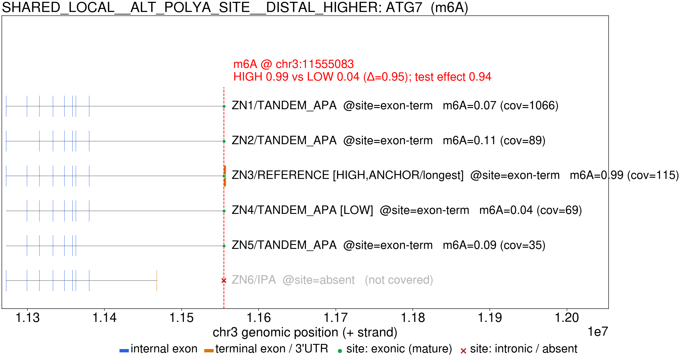
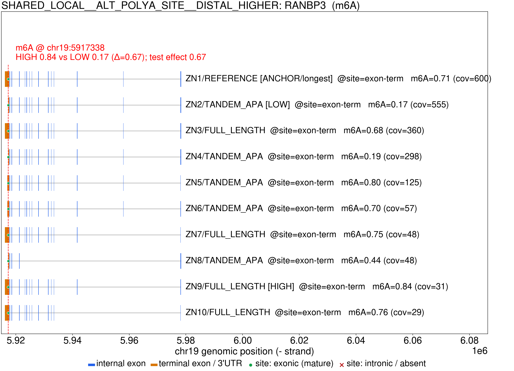
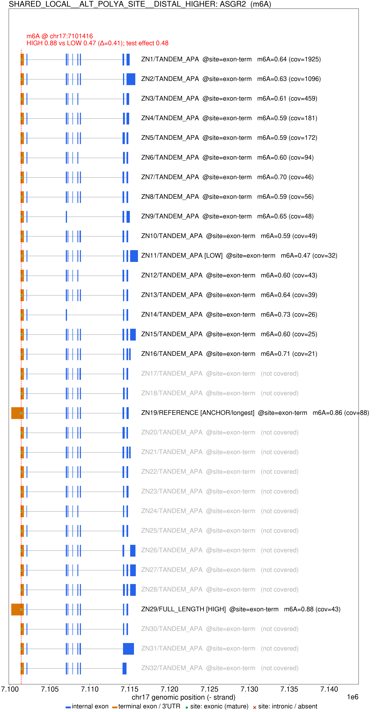
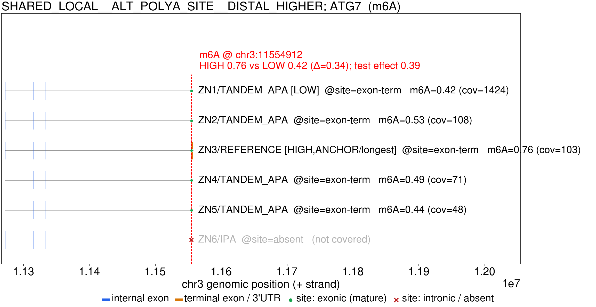
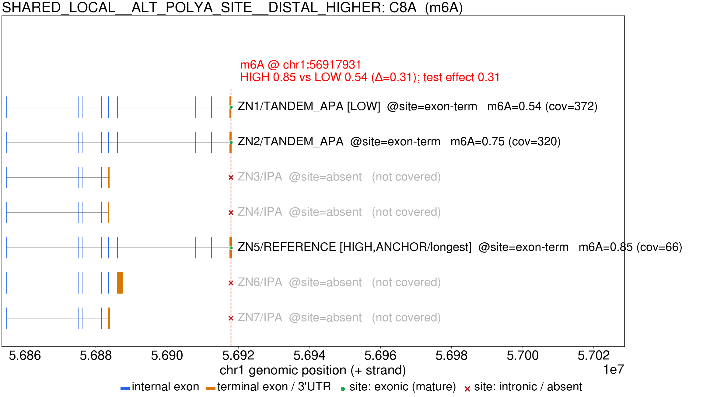
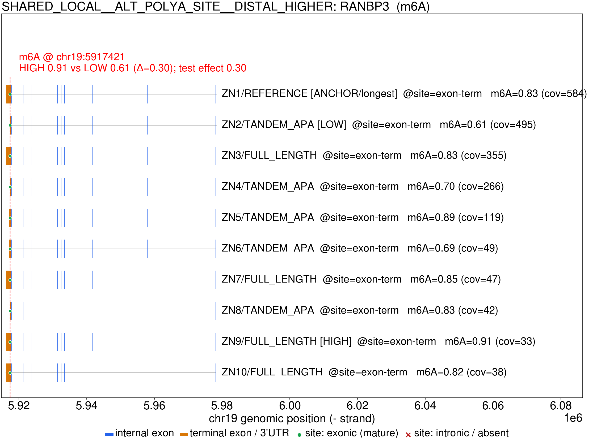
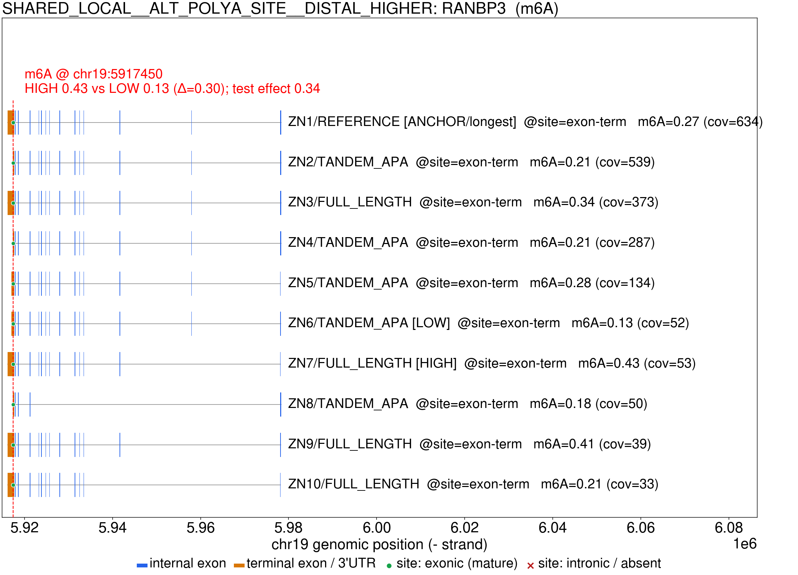
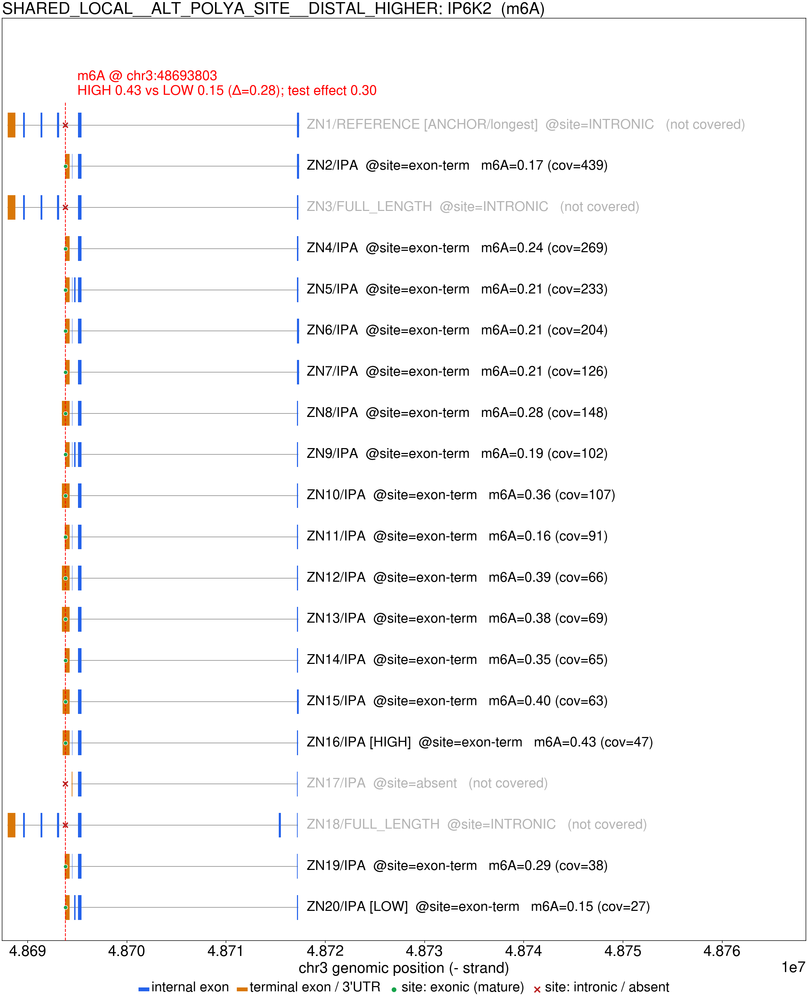
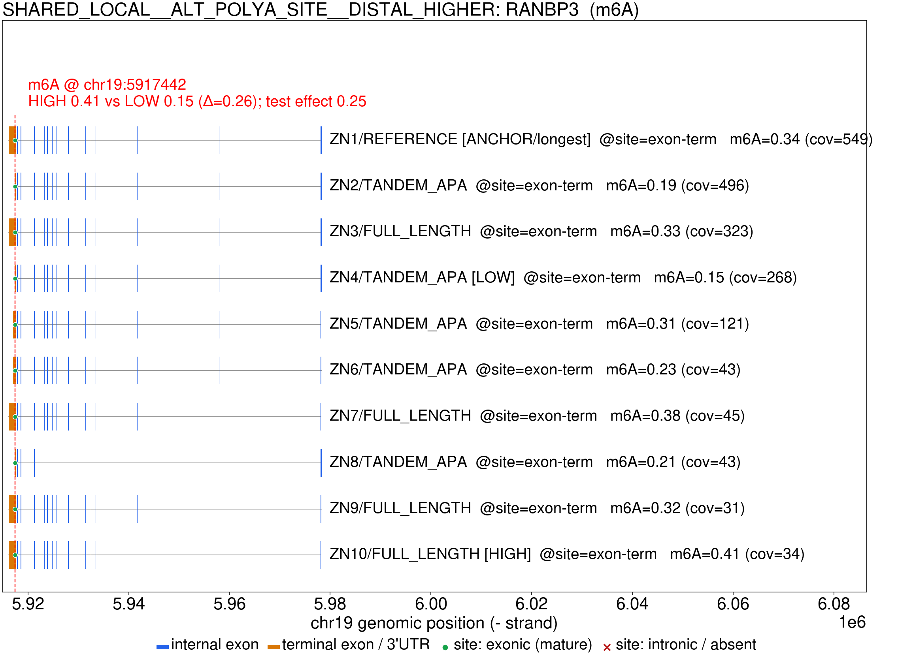
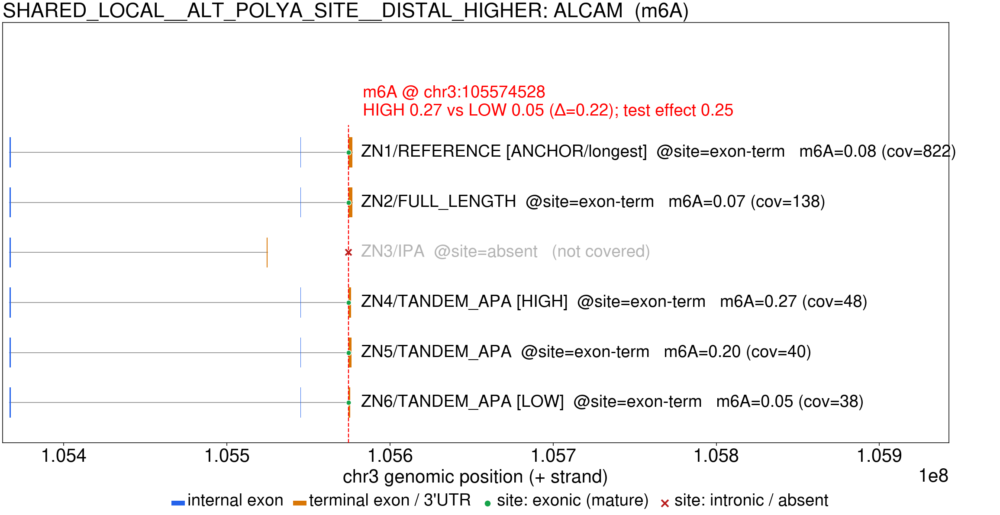
Top 10 site figure(s) — per-sample stoichiometry & pooled coverage
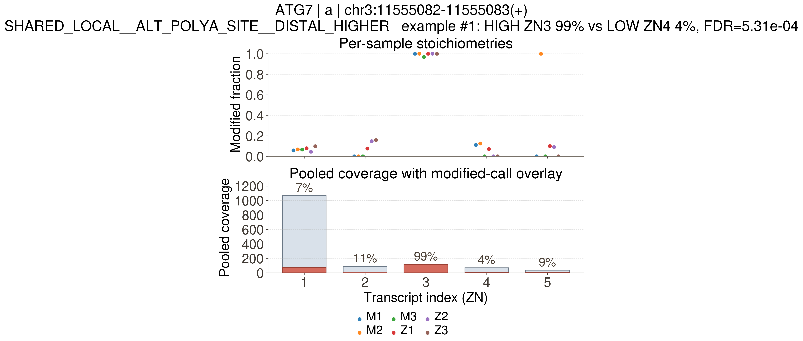
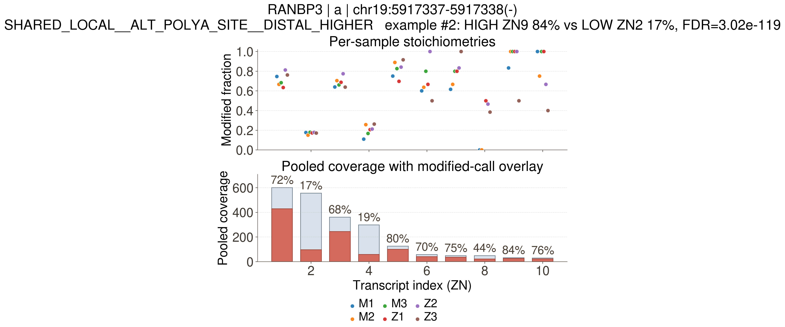
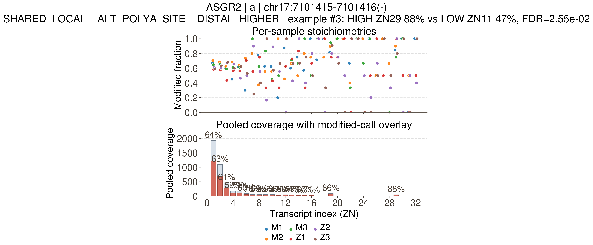
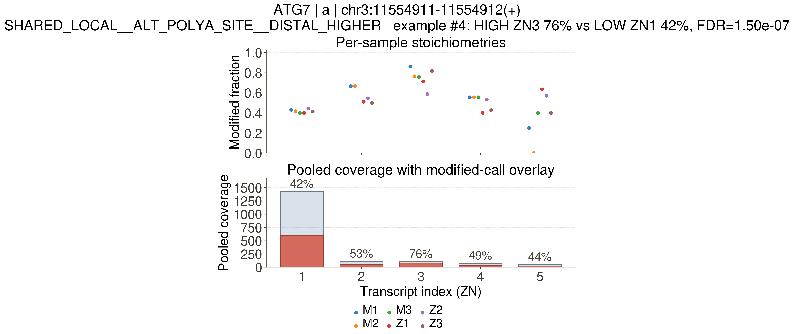
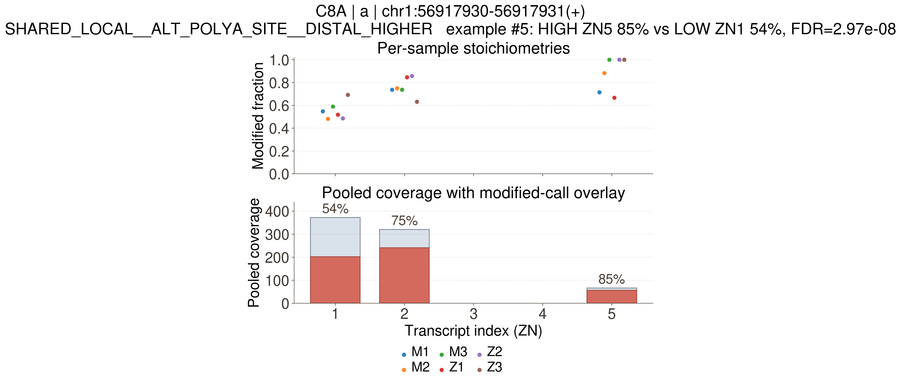
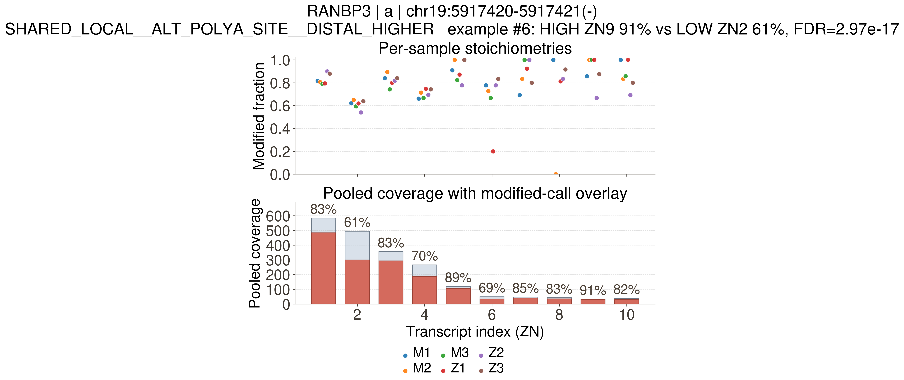
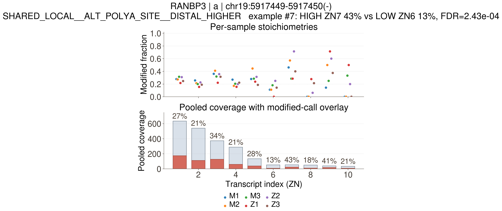
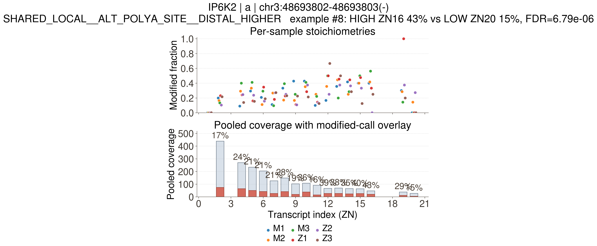
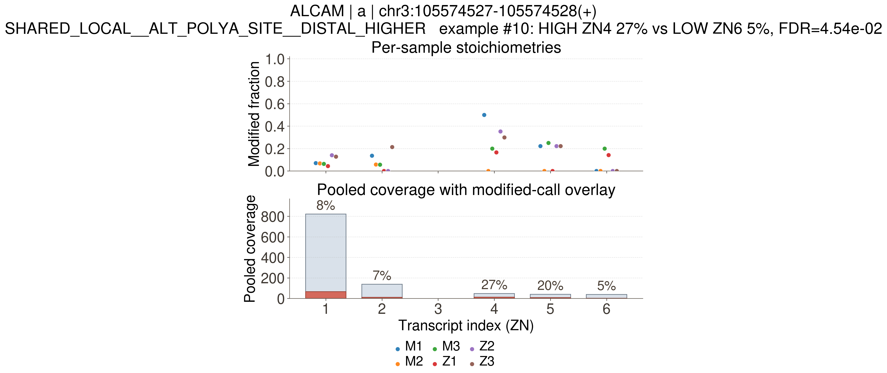
RETAINED_INTRON — 3 sites
The base's own exon spans an intron in one form that the other form splices out — intron retention right at the base (both forms share the same 3' end).
INTRON_RETAINED_HIGHER — 3 sites
The more-modified fragmentform is the one that RETAINS the intron (its exon spans it); the other splices it out.
Column definitions
- example_rank
- 1-based rank of the site within its leaf (bucket / event / direction) by hi_lo_delta, then FDR, then the shallower form's coverage. The rankNN__ example figures follow this rank, so row N of the table is figure N.
- gene_name
- Gene label assigned to the reported row or site.
- mod_code
- Modification code reported by modkit or downstream aggregation.
- chrom
- Reference chromosome or contig containing the reported feature.
- start0
- 0-based inclusive start coordinate of the reported modification site.
- strand
- Genomic strand of the reported feature.
- hi_ZN
- ZN partition index of the higher-stoichiometry isoform in the classified contrast.
- hi_arch
- 3' architecture of the higher-stoichiometry isoform versus the gene's longest-3'UTR anchor (IPA / TANDEM_APA / FULL_LENGTH / DISTAL_EXT / REFERENCE / AMBIGUOUS).
- hi_frac
- Pooled modified fraction (stoichiometry) of the higher isoform at the site.
- hi_cov
- Pooled valid coverage (reads) of the higher isoform at the site.
- lo_ZN
- ZN partition index of the lower-stoichiometry isoform in the classified contrast.
- lo_arch
- 3' architecture of the lower-stoichiometry isoform versus the gene's longest-3'UTR anchor.
- lo_frac
- Pooled modified fraction (stoichiometry) of the lower isoform at the site.
- lo_cov
- Pooled valid coverage (reads) of the lower isoform at the site.
- hi_lo_delta
- hi_frac minus lo_frac: the pooled stoichiometry difference between the two fragmentforms this classification compares. This is the contrast the structural event explains; the table and the example figures are ranked by it (then FDR, then coverage).
- stoich_tier
- Magnitude of the between-isoform stoichiometry gap: T1_MARGINAL (.10–.25) / T2_MODERATE / T3_STRONG / T4_NEAR_BINARY (≥.75).
- hi_stoich_level
- Absolute modification level of the favored fragmentform: HI_HYPER (≥.66) / HI_INTERMED / HI_HYPO (<.33).
- effect_max_abs_frac_diff
- Maximum absolute difference in modified fraction across tested fragmentform partitions, Mantel-Haenszel-weighted over EVERY sample covering both forms (the sample-stratified effect that matches the primary p-value, NOT the sample-pooled fraction). The old sample-pooled value is kept separately as effect_max_abs_frac_diff_pooled.
- p_adj_bh
- Benjamini-Hochberg false-discovery-rate adjusted p-value.
| example_rank | gene_name | mod_code | chrom | start0 | strand | direction | structural_delta_nt | hi_ZN | hi_arch | hi_frac | hi_cov | lo_ZN | lo_arch | lo_frac | lo_cov | hi_lo_delta | stoich_tier | hi_stoich_level | effect_max_abs_frac_diff | p_adj_bh |
|---|---|---|---|---|---|---|---|---|---|---|---|---|---|---|---|---|---|---|---|---|
| 1 | ASGR1 | a (m6A) | chr17 | 7173773 | - | INTRON_RETAINED_HIGHER | 234.0 | 7 | FULL_LENGTH | 0.7647 | 51 | 6 | FULL_LENGTH | 0.2400 | 75 | 0.5247 | T3_STRONG | HI_HYPER | 0.4964 | 1.256000e-05 |
| 2 | PCID2 | a (m6A) | chr13 | 113177947 | - | INTRON_RETAINED_HIGHER | 451.0 | 6 | FULL_LENGTH | 0.5588 | 68 | 5 | TANDEM_APA | 0.2078 | 77 | 0.3510 | T2_MODERATE | HI_INTERMED | 0.3845 | 1.457000e-07 |
| 3 | ASGR1 | a (m6A) | chr17 | 7173978 | - | INTRON_RETAINED_HIGHER | 530.0 | 7 | FULL_LENGTH | 0.3043 | 46 | 6 | FULL_LENGTH | 0.0390 | 77 | 0.2654 | T2_MODERATE | HI_HYPO | 0.3042 | 5.311000e-04 |
Top 3 isoform architecture map(s) — exon/intron tracks, site marked
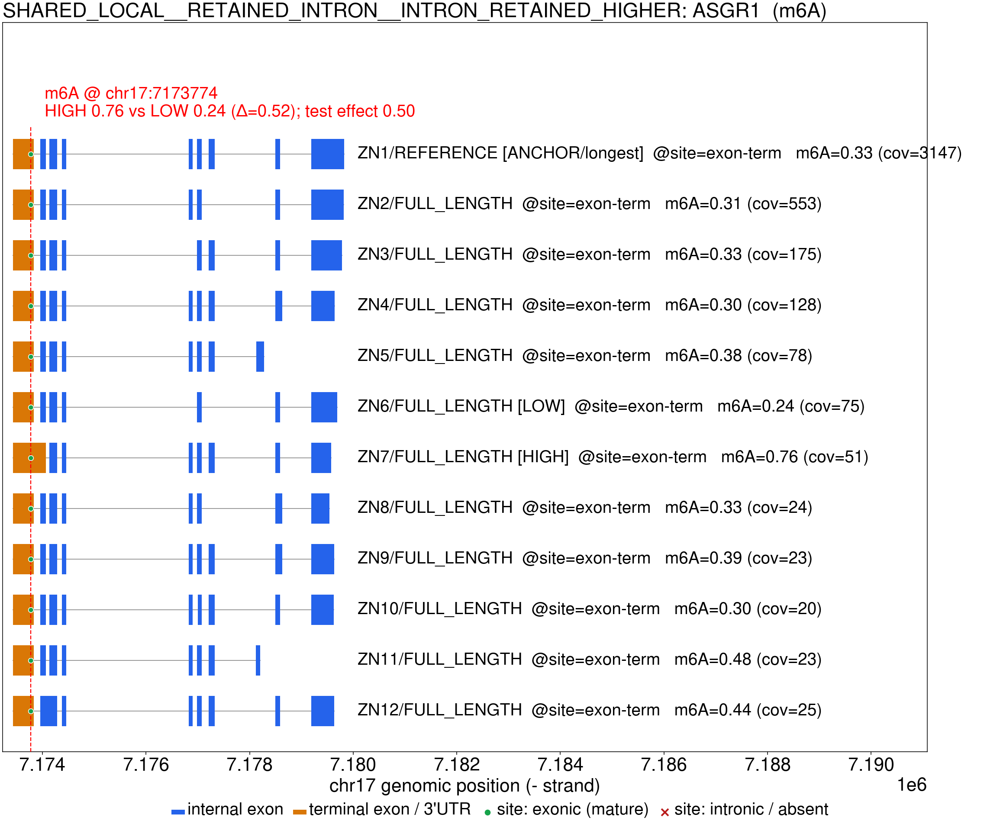
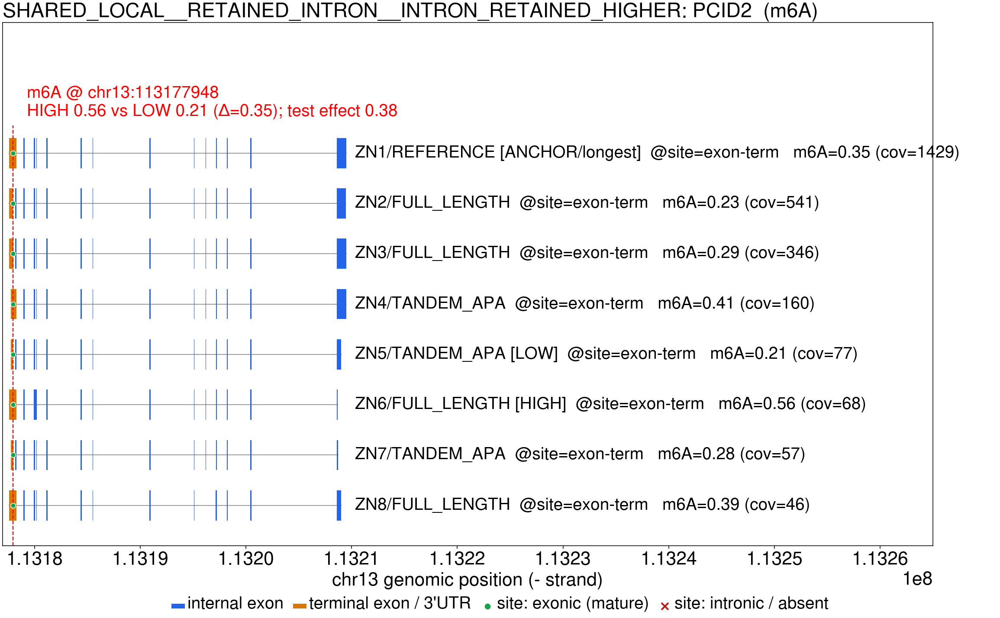
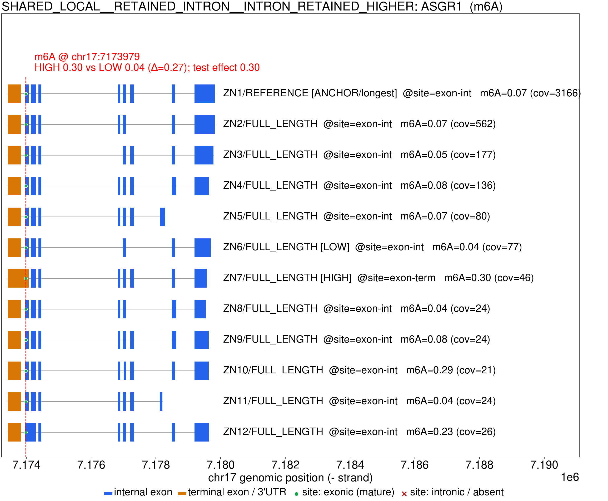
Top 3 site figure(s) — per-sample stoichiometry & pooled coverage
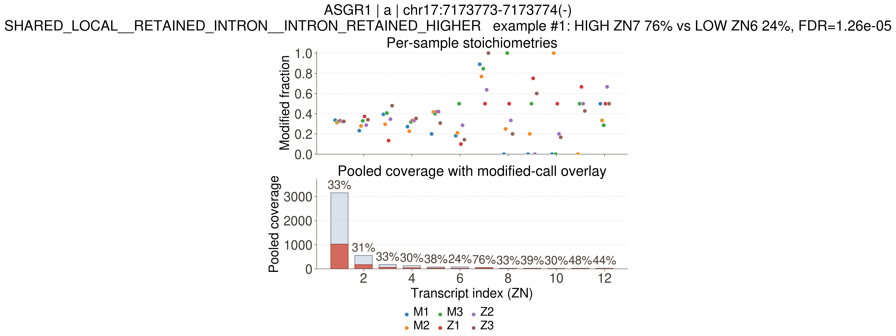
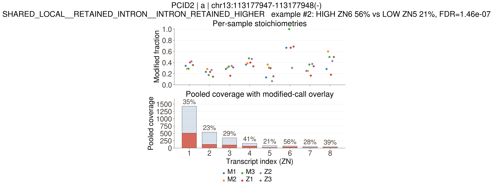
INTRON_RETAINED_LOWER — 0 sites
The LESS-modified fragmentform is the one that retains the intron; the more-modified one splices it out.
No sites of this direction in this run.
IPA_EXTENSION — 8 sites
The base's own exon is EXTENDED in one form because it reads into the downstream intron and polyadenylates there (intronic polyadenylation WITH extension), while the other form splices on to a more distal 3' end. The base sits in the intron-derived extension. Contrast IPA_NO_EXTENSION, where the poly(A) form cleaves right at the splice donor with no extension.
EXTENDS_TO_PA_HIGHER — 8 sites
The more-modified fragmentform is the one that reads into the intron and polyadenylates there (its exon is the extended, intronic-polyadenylation exon).
Column definitions
- example_rank
- 1-based rank of the site within its leaf (bucket / event / direction) by hi_lo_delta, then FDR, then the shallower form's coverage. The rankNN__ example figures follow this rank, so row N of the table is figure N.
- gene_name
- Gene label assigned to the reported row or site.
- mod_code
- Modification code reported by modkit or downstream aggregation.
- chrom
- Reference chromosome or contig containing the reported feature.
- start0
- 0-based inclusive start coordinate of the reported modification site.
- strand
- Genomic strand of the reported feature.
- hi_ZN
- ZN partition index of the higher-stoichiometry isoform in the classified contrast.
- hi_arch
- 3' architecture of the higher-stoichiometry isoform versus the gene's longest-3'UTR anchor (IPA / TANDEM_APA / FULL_LENGTH / DISTAL_EXT / REFERENCE / AMBIGUOUS).
- hi_frac
- Pooled modified fraction (stoichiometry) of the higher isoform at the site.
- hi_cov
- Pooled valid coverage (reads) of the higher isoform at the site.
- lo_ZN
- ZN partition index of the lower-stoichiometry isoform in the classified contrast.
- lo_arch
- 3' architecture of the lower-stoichiometry isoform versus the gene's longest-3'UTR anchor.
- lo_frac
- Pooled modified fraction (stoichiometry) of the lower isoform at the site.
- lo_cov
- Pooled valid coverage (reads) of the lower isoform at the site.
- hi_lo_delta
- hi_frac minus lo_frac: the pooled stoichiometry difference between the two fragmentforms this classification compares. This is the contrast the structural event explains; the table and the example figures are ranked by it (then FDR, then coverage).
- stoich_tier
- Magnitude of the between-isoform stoichiometry gap: T1_MARGINAL (.10–.25) / T2_MODERATE / T3_STRONG / T4_NEAR_BINARY (≥.75).
- hi_stoich_level
- Absolute modification level of the favored fragmentform: HI_HYPER (≥.66) / HI_INTERMED / HI_HYPO (<.33).
- effect_max_abs_frac_diff
- Maximum absolute difference in modified fraction across tested fragmentform partitions, Mantel-Haenszel-weighted over EVERY sample covering both forms (the sample-stratified effect that matches the primary p-value, NOT the sample-pooled fraction). The old sample-pooled value is kept separately as effect_max_abs_frac_diff_pooled.
- p_adj_bh
- Benjamini-Hochberg false-discovery-rate adjusted p-value.
| example_rank | gene_name | mod_code | chrom | start0 | strand | direction | structural_delta_nt | hi_ZN | hi_arch | hi_frac | hi_cov | lo_ZN | lo_arch | lo_frac | lo_cov | hi_lo_delta | stoich_tier | hi_stoich_level | effect_max_abs_frac_diff | p_adj_bh |
|---|---|---|---|---|---|---|---|---|---|---|---|---|---|---|---|---|---|---|---|---|
| 1 | C8A | a (m6A) | chr1 | 56886077 | + | EXTENDS_TO_PA_HIGHER | 1345.0 | 6 | IPA | 0.9348 | 46 | 5 | REFERENCE | 0.0484 | 62 | 0.8864 | T4_NEAR_BINARY | HI_HYPER | 0.8895 | 1.098000e-61 |
| 2 | SERAC1 | a (m6A) | chr6 | 158114798 | - | EXTENDS_TO_PA_HIGHER | 315.0 | 8 | IPA | 0.7949 | 39 | 1 | REFERENCE | 0.0452 | 155 | 0.7497 | T3_STRONG | HI_HYPER | 0.7606 | 9.774000e-52 |
| 3 | ALCAM | a (m6A) | chr3 | 105524469 | + | EXTENDS_TO_PA_HIGHER | 452.0 | 3 | IPA | 0.5079 | 63 | 4 | TANDEM_APA | 0.0000 | 40 | 0.5079 | T3_STRONG | HI_INTERMED | 0.5181 | 5.311000e-04 |
| 4 | ALCAM | a (m6A) | chr3 | 105524376 | + | EXTENDS_TO_PA_HIGHER | 452.0 | 3 | IPA | 0.4667 | 60 | 6 | TANDEM_APA | 0.0385 | 26 | 0.4282 | T2_MODERATE | HI_INTERMED | 0.4382 | 5.311000e-04 |
| 5 | ALCAM | a (m6A) | chr3 | 105524462 | + | EXTENDS_TO_PA_HIGHER | 452.0 | 3 | IPA | 0.3103 | 58 | 2 | FULL_LENGTH | 0.0000 | 107 | 0.3103 | T2_MODERATE | HI_HYPO | 0.3187 | 5.311000e-04 |
| 6 | C8A | a (m6A) | chr1 | 56885962 | + | EXTENDS_TO_PA_HIGHER | 1345.0 | 6 | IPA | 0.1957 | 46 | 5 | REFERENCE | 0.0000 | 63 | 0.1957 | T1_MARGINAL | HI_HYPO | 0.1936 | 5.311000e-04 |
| 7 | C8A | a (m6A) | chr1 | 56885990 | + | EXTENDS_TO_PA_HIGHER | 1345.0 | 6 | IPA | 0.1154 | 52 | 5 | REFERENCE | 0.0000 | 61 | 0.1154 | T1_MARGINAL | HI_HYPO | 0.1127 | 1.859000e-03 |
| 8 | C8A | a (m6A) | chr1 | 56883640 | + | EXTENDS_TO_PA_HIGHER | 101.0 | 3 | IPA | 0.1014 | 138 | 5 | REFERENCE | 0.0000 | 56 | 0.1014 | T1_MARGINAL | HI_HYPO | 0.1005 | 6.373000e-03 |
Top 8 isoform architecture map(s) — exon/intron tracks, site marked
Top 8 site figure(s) — per-sample stoichiometry & pooled coverage
EXTENDS_TO_PA_LOWER — 0 sites
The LESS-modified fragmentform is the one that reads into the intron and polyadenylates there.
No sites of this direction in this run.
IPA_NO_EXTENSION — 0 sites
Intronic polyadenylation with NO exon extension: one form SPLICES at the base's exon boundary while the other POLYADENYLATES at that SAME coordinate (no reading into the intron). The base's exon is identical in both forms and lies within the EJC/cleavage footprint (~24 nt) of the decision; whether it is spliced-and-EJC-marked or cleaved-and-polyadenylated tracks its modification. Contrast IPA_EXTENSION, where the poly(A) form's exon extends PAST the donor into the intron and the base sits in that extension.
SPLICED_FORM_HIGHER — 0 sites
IPA_NO_EXTENSION: the more-modified fragmentform is the one that SPLICES at the base's exon boundary (base retained upstream of a deposited EJC), where the other form polyadenylates.
No sites of this direction in this run.
POLYA_FORM_HIGHER — 0 sites
IPA_NO_EXTENSION: the more-modified fragmentform is the one that POLYADENYLATES (cleaves/terminates) at the base's exon boundary, where the other form splices onward.
No sites of this direction in this run.
SHARED_DISTAL — 2 sites
The base is exonic in both, in an IDENTICAL local context; the fragmentforms differ only ELSEWHERE in the transcript, so the modification difference tracks isoform identity rather than any feature at the base.
DISTAL_APA — 0 sites
The base's local exon is identical in both forms, but the forms end at DIFFERENT poly(A) sites (a distal alternative-polyadenylation choice); methylation tracks which 3' end the isoform uses.
PROXIMAL_HIGHER — 0 sites
The more-modified fragmentform uses the PROXIMAL (upstream, shorter-3'UTR) poly(A) site.
No sites of this direction in this run.
DISTAL_HIGHER — 0 sites
The more-modified fragmentform uses the DISTAL (downstream, longer-3'UTR) poly(A) site.
No sites of this direction in this run.
DISTAL_SPLICING — 2 sites
The base's local exon is identical AND the forms share the same 3' end; they differ only in an internal / 5' splicing choice ELSEWHERE, so methylation tracks that distal splicing decision.
SAME_3PRIME_END — 2 sites
Both fragmentforms end at the same 3' position (same last exon / poly(A) site); the more-modified one differs only in an internal or 5' splicing choice further upstream.
Column definitions
- example_rank
- 1-based rank of the site within its leaf (bucket / event / direction) by hi_lo_delta, then FDR, then the shallower form's coverage. The rankNN__ example figures follow this rank, so row N of the table is figure N.
- gene_name
- Gene label assigned to the reported row or site.
- mod_code
- Modification code reported by modkit or downstream aggregation.
- chrom
- Reference chromosome or contig containing the reported feature.
- start0
- 0-based inclusive start coordinate of the reported modification site.
- strand
- Genomic strand of the reported feature.
- hi_ZN
- ZN partition index of the higher-stoichiometry isoform in the classified contrast.
- hi_arch
- 3' architecture of the higher-stoichiometry isoform versus the gene's longest-3'UTR anchor (IPA / TANDEM_APA / FULL_LENGTH / DISTAL_EXT / REFERENCE / AMBIGUOUS).
- hi_frac
- Pooled modified fraction (stoichiometry) of the higher isoform at the site.
- hi_cov
- Pooled valid coverage (reads) of the higher isoform at the site.
- lo_ZN
- ZN partition index of the lower-stoichiometry isoform in the classified contrast.
- lo_arch
- 3' architecture of the lower-stoichiometry isoform versus the gene's longest-3'UTR anchor.
- lo_frac
- Pooled modified fraction (stoichiometry) of the lower isoform at the site.
- lo_cov
- Pooled valid coverage (reads) of the lower isoform at the site.
- hi_lo_delta
- hi_frac minus lo_frac: the pooled stoichiometry difference between the two fragmentforms this classification compares. This is the contrast the structural event explains; the table and the example figures are ranked by it (then FDR, then coverage).
- stoich_tier
- Magnitude of the between-isoform stoichiometry gap: T1_MARGINAL (.10–.25) / T2_MODERATE / T3_STRONG / T4_NEAR_BINARY (≥.75).
- hi_stoich_level
- Absolute modification level of the favored fragmentform: HI_HYPER (≥.66) / HI_INTERMED / HI_HYPO (<.33).
- effect_max_abs_frac_diff
- Maximum absolute difference in modified fraction across tested fragmentform partitions, Mantel-Haenszel-weighted over EVERY sample covering both forms (the sample-stratified effect that matches the primary p-value, NOT the sample-pooled fraction). The old sample-pooled value is kept separately as effect_max_abs_frac_diff_pooled.
- p_adj_bh
- Benjamini-Hochberg false-discovery-rate adjusted p-value.
| example_rank | gene_name | mod_code | chrom | start0 | strand | direction | structural_delta_nt | hi_ZN | hi_arch | hi_frac | hi_cov | lo_ZN | lo_arch | lo_frac | lo_cov | hi_lo_delta | stoich_tier | hi_stoich_level | effect_max_abs_frac_diff | p_adj_bh |
|---|---|---|---|---|---|---|---|---|---|---|---|---|---|---|---|---|---|---|---|---|
| 1 | ASGR1 | a (m6A) | chr17 | 7173830 | - | SAME_3PRIME_END | NaN | 10 | FULL_LENGTH | 0.2000 | 20 | 9 | FULL_LENGTH | 0.0000 | 24 | 0.2000 | T1_MARGINAL | HI_HYPO | 0.1915 | 0.040550 |
| 2 | RANBP3 | a (m6A) | chr19 | 5917474 | - | SAME_3PRIME_END | NaN | 9 | FULL_LENGTH | 0.2308 | 39 | 7 | FULL_LENGTH | 0.0385 | 52 | 0.1923 | T1_MARGINAL | HI_HYPO | 0.2162 | 0.001439 |
Top 2 isoform architecture map(s) — exon/intron tracks, site marked
UNEXPLAINABLE — 0 sites
The difference cannot be attributed to structure: the 5' blind spot (direct-RNA truncation), an intron / soft-clip read artifact, or too few covered isoforms to compare.
FIVE_PRIME_UNCERTAIN — 0 sites
The base falls in (or 5' of) the 5'-most exon, where direct-RNA 5' truncation makes the assembled model unreliable — no confident structural call.
No sites in this category in this run.
INTRON_READ_ARTIFACT — 0 sites
The more-modified form does not structurally contain the base (it is intronic there) — likely an intron / soft-clip read, not a real exonic modification.
No sites in this category in this run.
NO_MODEL — 0 sites
Fewer than two adequately-covered fragmentforms at the site, so there is nothing to compare.
No sites in this category in this run.
UNRESOLVED — 0 sites
Passes the filters but fits no structural rule.
No sites in this category in this run.
Modifications within RNA Sequence Elements
Every fragmentform's mature (spliced) mRNA is scanned for sequence-defined cis-elements anchored to its 3' end (PAS, AU-rich element, CPE, GU-rich element, rG4), start codon (Kozak, uORF, 5'TOP, m6Am) and stop codon (readthrough context). Each element is then joined to EVERY overlapping modification with no mod-code bias. Only mature-mRNA (exonic) elements are scanned; 5'-anchored elements (Kozak/uORF/TOP/m6Am) sit where direct-RNA read coverage is sparsest, so their modification calls are coverage-limited.
Element definitions
- PAS
- Polyadenylation signal hexamer (AATAAA + variants) upstream of the 3' end.
- ARE
- AU-rich element (AUUUA), a 3'UTR stability determinant.
- CPE
- Cytoplasmic polyadenylation element (UUUUAU).
- GRE
- GU-rich element (GU repeats).
- G4
- RNA G-quadruplex sequence motif (G≥3 runs).
- KOZAK
- Translation-initiation context around the start codon (−3 purine / +4 G).
- UORF
- Upstream ORF (AUG…stop) in the 5'UTR.
- TOP
- 5' terminal oligopyrimidine tract.
- STOP_CONTEXT
- Stop codon + downstream base (readthrough-prone UGA-C, …).
- M6AM
- Cap-adjacent first transcribed A (potential m6Am).
Summary Across All Sequence Elements
- 1,175 element instances across 9 element types
- 332 carry ≥1 modification — mod codes seen:
17596, 17802, 19227, 19228, 19229, 69426, a, m(no code is filtered out)
Elements by type (and how many carry a modification)
Column definitions
- element_type
- The cis-element class scanned (PAS, ARE, CPE, GRE, G4, KOZAK, UORF, TOP, STOP_CONTEXT, M6AM).
- n_instances
- Number of instances of this element type found across all fragmentforms' mature mRNAs.
- n_with_modification
- How many of those instances overlap at least one modification (any mod code).
- frac_with_mod
- n_with_modification / n_instances.
- mod_codes_seen
- Modification codes found within this element type, with a count per code.
| element_type | n_instances | n_with_modification | frac_with_mod | mod_codes_seen |
|---|---|---|---|---|
| ARE | 162 | 6 | 0.037 | 17802:3,a:3 |
| CPE | 288 | 16 | 0.056 | 17802:8,19227:3,a:5 |
| G4 | 32 | 19 | 0.594 | 19229:19 |
| GRE | 63 | 3 | 0.048 | 19229:3 |
| KOZAK | 101 | 74 | 0.733 | 17596:10,17802:36,19229:19,a:37,m:8 |
| M6AM | 23 | 0 | 0.000 | NaN |
| PAS | 180 | 36 | 0.200 | a:36 |
| STOP_CONTEXT | 110 | 43 | 0.391 | 17802:32,a:43 |
| UORF | 216 | 135 | 0.625 | 17596:28,17802:21,19227:16,19228:30,19229:74,69426:5,a:118,m:30 |
Per-gene rollup — fragmentforms with a MODIFIED element of each type
Column definitions
- gene_name
- The gene.
- (each element-type column)
- Number of that gene's fragmentforms whose mature mRNA carries a MODIFIED element of that type. Columns are element types (defined under Element definitions on the section header).
| element_type | gene_name | ARE | CPE | G4 | GRE | KOZAK | PAS | STOP_CONTEXT | UORF |
|---|---|---|---|---|---|---|---|---|---|
| ALCAM | 0 | 5 | 6 | 0 | 6 | 0 | 5 | 6 | |
| ASGR1 | 0 | 0 | 0 | 0 | 10 | 0 | 0 | 10 | |
| ASGR2 | 0 | 0 | 3 | 0 | 30 | 30 | 32 | 15 | |
| ATG7 | 0 | 0 | 0 | 0 | 0 | 0 | 0 | 1 | |
| C8A | 0 | 3 | 0 | 0 | 7 | 0 | 0 | 0 | |
| IP6K2 | 0 | 0 | 0 | 0 | 6 | 0 | 0 | 1 | |
| MXD1 | 3 | 0 | 0 | 0 | 0 | 1 | 0 | 1 | |
| NHSL1 | 3 | 0 | 0 | 3 | 0 | 0 | 0 | 0 | |
| PCID2 | 0 | 0 | 0 | 0 | 0 | 0 | 0 | 1 | |
| PROZ | 0 | 0 | 0 | 0 | 0 | 0 | 1 | 0 | |
| RANBP3 | 0 | 0 | 10 | 0 | 6 | 5 | 0 | 6 | |
| RIOK3 | 0 | 0 | 0 | 0 | 8 | 0 | 0 | 0 | |
| SERAC1 | 0 | 5 | 0 | 0 | 1 | 0 | 5 | 1 | |
| VGLL4 | 0 | 0 | 0 | 0 | 0 | 0 | 0 | 2 |
Elements carrying a modification (any code)
Column definitions
- gene_name
- Gene label assigned to the reported row or site.
- element_type
- The cis-element class scanned (PAS, ARE, CPE, GRE, G4, KOZAK, UORF, TOP, STOP_CONTEXT, M6AM).
- element_subclass
- Finer subclass of the element (e.g. the specific PAS hexamer or ARE variant).
- chrom
- Reference chromosome or contig containing the reported feature.
- strand
- Genomic strand of the reported feature.
- matched_seq
- The mature-mRNA sequence matched for this element instance.
- mod_codes
- Modification codes overlapping this element instance.
- modifications
- Per-modification detail for the element: code@genomic-position (stoichiometry).
| gene_name | element_type | element_subclass | chrom | strand | matched_seq | mod_codes | modifications |
|---|---|---|---|---|---|---|---|
| ALCAM | CPE | UUUUAW | chr3 | + | TTTTAA | a | a@105575534 (0.0019) |
| ALCAM | CPE | UUUUAW | chr3 | + | TTTTAT | 19227 | 19227@105576161 (0.0015) |
| ALCAM | G4 | rG4 | chr3 | + | GGGGAAGTGGGGAGGAGACGGGAGGGAGGG | 19229 | 19229@105366821 (0.037) |
| ALCAM | KOZAK | kozak_strong | chr3 | + | AGGAATATGG | a | a@105367405 (0.0013) |
| ALCAM | UORF | uORF | chr3 | + | ATGCACATTGCCACTGCCATTATTATTATCATTCCAATACAAGGAAAATAA | a,m | a@105367028 (0.0757); m@105367029 (0.0043) |
| ALCAM | STOP_CONTEXT | stop_TAA_canonical | chr3 | + | TAA | a | a@105571937 (0.001) |
| ASGR1 | KOZAK | kozak_adequate | chr17 | - | CCTATCATGA | 17596 | 17596@7178565 (0.0007) |
| ASGR1 | UORF | uORF | chr17 | - | ATGGCAAATCCCACCCCAGCCCCTCCTGGCCTGGCACCCCTCCCAAACGGTGCACGGAAGAGTGAGGTGACTGGCATGTGTGGGGGCAACACGATTCTCCTCCCTGGGGAGCAGAGCAGAGGCAACCCATCCCCCACTCCCACCCCCACACTCCCCTAA | a | a@7179535 (0.0364) |
| ASGR1 | UORF | uORF | chr17 | - | ATGCCACGTTTGGCGTGCTTGGACACACAGACACGCAGACACAGAGACACCGGGGCCCAGGGCCCTCCTATGGACCCTGCCCGCTCCCCTCCCATTGTCCACGGCTGTCCGCCCACCCCCATTCTCCAAGCTTCAGCCCCCTCCTTAGTTCGGCATCTGCACAGCACTGAAGAACCTGGGAATCAGACCCTGAGACCCTGA | 19228,19229,a | a@7179371 (0.0242); 19229@7179356 (0.002); 19228@7179354 (0.0027); a@7179347 (0.0166); a@7179320 (0.0524); 19229@7179216 (0.0009); 19229@7179214 (0.0006); a@7179199 (0.0022) |
| ASGR1 | UORF | uORF | chr17 | - | ATGGACCCTGCCCGCTCCCCTCCCATTGTCCACGGCTGTCCGCCCACCCCCATTCTCCAAGCTTCAGCCCCCTCCTTAGTTCGGCATCTGCACAGCACTGAAGAACCTGGGAATCAGACCCTGAGACCCTGA | 19229,a | a@7179320 (0.0524); 19229@7179216 (0.0009); 19229@7179214 (0.0006); a@7179199 (0.0022) |
| ASGR2 | PAS | variant:AAGAAA | chr17 | - | AAGAAA | a | a@7101337 (0.0027) |
| ASGR2 | KOZAK | kozak_strong | chr17 | - | CCCATCATGG | 17802,a | a@7114242 (0.0029); 17802@7114241 (0.0145) |
| ASGR2 | UORF | uORF | chr17 | - | ATGAGTGGGGTGAGTGGCGTGTGGAGTTGA | 19229 | 19229@7114947 (0.0333) |
| ASGR2 | UORF | uORF_overlapping | chr17 | - | ATGAGTTACAGCTCTGTTTCCTCTTCTGTTTACTGTCCAAAGTCCCAGGCCAGGAGGTGCCAGGTTAGAGCTTGGACACTCAGACCCTCCAGTGCAGGCCTTGCCCGGACCAGCCCCTCCTCCACTCTCCTCTCCCCTGTGAGCTCCACCTGCCCCAGTTCTCCTGGCTTTAACCCCTCCTTGGCCAAGGCCAGGGTTGCCTGCGGGAGCCAGGTGTCCGCTCTCCACACCTTTCACAGCCCCAGCCCTCAGAGCAACCTCAGCCCAGCCCAGCCCAGCTCCAGCTCCAGCTCCAGCCCGGGCCCCATCATGGCCAAGGACTTTCAAGATATCCAGCAGCTGAGCTCGGAGGAAAATGACCATCCTTTCCATCAAGGTGAGGGGCCAGGCACTCGCAGGCTGAATCCCAGGAGAGGAAATCCATTTTTGAAAGGGCCACCTCCTGCCCAGCCCCTGGCACAGCGTCTCTGCTCCATGGTCTGCTTCAGTCTGCTTGCCCTGAGCTTCAACATCCTGCTGCTGGTGGTCATCTGTGTGACTGGGTCCCAAAGTGCACAGCTGCAAGCCGAGCTGCGGAGCCTGAAGGAAGCTTTCAGCAACTTCTCCTCGAGCACCCTGACGGAGGTCCAGGCAATCAGCACCCACGGAGGCAGCGTGGGTGACAAGATCACATCCCTAGGAGCCAAGCTGGAGAAACAGCAGCAGGACCTGAAAGCAGATCACGATGCCCTGCTCTTCCATCTGAAGCACTTCCCCGTGGACCTGCGCTTCGTGGCCTGCCAGATGGAGCTCCTCCACAGCAACGGCTCCCAAAGGACCTGCTGCCCCGTCAACTGGGTGGAGCACCAAGGCAGCTGCTACTGGTTCTCTCACTCCGGGAAGGCCTGGGCTGAGGCGGAGAAGTACTGCCAGCTGGAGAACGCACACCTGGTGGTCATCAACTCCTGGGAGGAGCAGAAATTCATTGTACAACACACGAACCCCTTCAATACCTGGATAGGTCTCACGGACAGTGATGGCTCTTGGAAATGGGTGGATGGCACAGACTATAGGCACAACTACAAGAACTGGGCTGTCACTCAGCCAGATAATTGGCACGGGCACGAGCTGGGTGGAAGTGAAGACTGTGTTGAAGTCCAGCCGGATGGCCGCTGGAACGATGACTTCTGCCTGCAGGTGTACCGCTGGGTGTGTGAGAAAAGGCGGAATGCCACCGGCGAGGTGGCCTGA | 17596,17802,19227,19228,19229,69426,a,m | a@7114843 (0.25); 19228@7114809 (0.0127); m@7114792 (0.0048); a@7114777 (0.0326); 19229@7114770 (0.0061); m@7114766 (0.0095); m@7114763 (0.0028); a@7114744 (0.0072); m@7114717 (0.0015); 19228@7114699 (0.0041); m@7114690 (0.0015); m@7114685 (0.0013); a@7114681 (0.003); 19229@7114663 (0.0009); m@7114652 (0.0025); 17802@7114651 (0.0008); m@7114642 (0.0003); 17802@7114635 (1.0); 19228@7114299 (0.0092); 19229@7114295 (0.0007); 19228@7114288 (0.0005); 19228@7114279 (0.0005); 19228@7114274 (0.0011); 17802@7114262 (1.0); 19227@7114257 (0.0691); a@7114254 (0.0024); a@7114242 (0.0029); 17802@7114241 (0.0145); a@7114232 (0.0002); a@7114229 (0.0856); m@7114228 (0.0011); 19227@7114217 (0.0005); 19227@7114203 (0.0012); a@7114193 (0.0006); 19229@7114172 (0.001); a@7114169 (0.0026); a@7114158 (0.0005); 19229@7114150 (0.0005); 17596@7114137 (0.0005); 17802@7108830 (0.0017); m@7108828 (0.0003); 19227@7108827 (0.003); 19229@7108818 (0.0003); 17802@7108797 (0.0005); 17802@7108787 (0.0003); 17802@7108785 (0.0011); a@7108783 (0.0119); 17802@7108781 (0.0003); 19229@7108539 (0.0002); 19227@7108539 (1.0); a@7108538 (0.0007); m@7108536 (0.0002); 17802@7108526 (0.0082); a@7108524 (0.0021); 17596@7108523 (0.0013); 19229@7108521 (0.0002); m@7108517 (0.0005); 17802@7108505 (0.0003); 19227@7108500 (0.0029); a@7108488 (0.0019); 19228@7108480 (0.0024); 17596@7108473 (0.0092); a@7107901 (0.0012); 19229@7107892 (0.0002); m@7107890 (0.0028); a@7107883 (0.0027); 19229@7107874 (0.0004); 17802@7107864 (0.0005); m@7107853 (0.0012); 19229@7107847 (0.0011); 19229@7107838 (0.0009); 19229@7107311 (0.0002); a@7107289 (0.0017); 17802@7107277 (0.0033); 19228@7107245 (0.0002); a@7107142 (0.0002); 19229@7107116 (0.0002); a@7107111 (0.0008); a@7107108 (0.0002); 19229@7107105 (0.0004); a@7107096 (0.0017); m@7107080 (0.0005); 19229@7107078 (0.0002); 19229@7107064 (0.0007); 19229@7107056 (0.0002); m@7107050 (0.0012); a@7107036 (0.001); 19229@7107025 (0.0002); 17802@7107024 (0.0002); 19227@7107013 (0.009); m@7107001 (0.0015); 19228@7107001 (0.0034); 17596@7102195 (0.0002); m@7102183 (0.0005); a@7102147 (0.0011); a@7102143 (0.0109); a@7102141 (0.0002); a@7102137 (0.0017); 19228@7102133 (0.0002); 19229@7102120 (0.0008); 17802@7102115 (0.0004); m@7102110 (0.0043); a@7102107 (0.0015); 17802@7102103 (0.0092); 69426@7102095 (0.0002); a@7101737 (0.039); 19229@7101732 (0.0009); 17596@7101718 (0.0002); 19229@7101717 (0.0006); 17802@7101712 (0.0009); 17802@7101708 (0.1429); a@7101707 (0.0157); 19228@7101702 (0.0002); a@7101702 (1.0); a@7101698 (0.0009); 17596@7101683 (0.0002); a@7101682 (0.0012); a@7101680 (0.1083); 17802@7101676 (0.0029); 19227@7101674 (0.0064); 19228@7101666 (0.0009); 19228@7101663 (0.0002); a@7101659 (0.01); a@7101647 (0.0088); 17802@7101643 (0.0015); a@7101641 (0.0457); 17802@7101632 (0.0009); m@7101630 (0.0002); a@7101629 (0.0002); 19229@7101627 (0.0004); a@7101623 (0.0004); 17802@7101612 (0.0002); 17802@7101610 (0.0021); a@7101608 (0.0021); m@7101600 (0.0011); 17596@7101597 (0.0079); 19229@7101585 (0.0024); 17802@7101576 (0.0002); a@7101574 (0.0015) |
| ASGR2 | STOP_CONTEXT | stop_TGA_readthrough_prone | chr17 | - | TGA | 17802,a | 17802@7101576 (0.0002); a@7101574 (0.0015) |
| ASGR2 | UORF | uORF | chr17 | - | ATGCTGGGATTACAGGCGTGA | 17596 | 17596@7115592 (0.0526) |
| ASGR2 | UORF | uORF | chr17 | - | ATGAAGAAACACCTTGGAGAATTTAGGGCAGTGGCTGGGCCTGAGGACAGTGTTTGTGTTGCCTGGGCTGGGGCAGGGTCTGGGCCGGACGGGGCTCTCTGA | 19227,a | a@7115377 (0.16); 19227@7115375 (0.0625); a@7115351 (0.7826); a@7115309 (0.0286) |
| ASGR2 | UORF | uORF | chr17 | - | ATGCCGGATTGGGCAAGAGTAGAGAACTGGTCGCTGTGA | a | a@7115121 (0.0213); a@7115103 (0.0952) |
| ASGR2 | UORF | uORF_overlapping | chr17 | - | ATGAGTTACAGCTCTGTTTCCTCTTCTGTTTACTGTCCAAAGTCCCAGGCCAGGAGGTGCCAGGTTAGAGCTTGGACACTCAGACCCTCCAGTGCAGGCCTTGCCCGGACCAGCCCCTCCTCCACTCTCCTCTCCCCTGTGAGCTCCACCTGCCCCAGTTCTCCTGGCTTTAACCCCTCCTTGGCCAAGGCCAGGGTTGCCTGCGGGAGCCAGGTGTCCGCTCTCCACACCTTTCACAGCCCCAGCCCTCAGAGCAACCTCAGCCCAGCCCAGCCCAGCTCCAGCTCCAGCTCCAGCCCGGGCCCCATCATGGCCAAGGACTTTCAAGATATCCAGCAGCTGAGCTCGGAGGAAAATGACCATCCTTTCCATCAAGGGCCACCTCCTGCCCAGCCCCTGGCACAGCGTCTCTGCTCCATGGTCTGCTTCAGTCTGCTTGCCCTGAGCTTCAACATCCTGCTGCTGGTGGTCATCTGTGTGACTGGGTCCCAAAGTGCACAGCTGCAAGCCGAGCTGCGGAGCCTGAAGGAAGCTTTCAGCAACTTCTCCTCGAGCACCCTGACGGAGGTCCAGGCAATCAGCACCCACGGAGGCAGCGTGGGTGACAAGATCACATCCCTAGGAGCCAAGCTGGAGAAACAGCAGCAGGACCTGAAAGCAGATCACGATGCCCTGCTCTTCCATCTGAAGCACTTCCCCGTGGACCTGCGCTTCGTGGCCTGCCAGATGGAGCTCCTCCACAGCAACGGCTCCCAAAGGACCTGCTGCCCCGTCAACTGGGTGGAGCACCAAGGCAGCTGCTACTGGTTCTCTCACTCCGGGAAGGCCTGGGCTGAGGCGGAGAAGTACTGCCAGCTGGAGAACGCACACCTGGTGGTCATCAACTCCTGGGAGGAGCAGAAATTCATTGTACAACACACGAACCCCTTCAATACCTGGATAGGTCTCACGGACAGTGATGGCTCTTGGAAATGGGTGGATGGCACAGACTATAGGCACAACTACAAGAACTGGGCTGTCACTCAGCCAGATAATTGGCACGGGCACGAGCTGGGTGGAAGTGAAGACTGTGTTGAAGTCCAGCCGGATGGCCGCTGGAACGATGACTTCTGCCTGCAGGTGTACCGCTGGGTGTGTGAGAAAAGGCGGAATGCCACCGGCGAGGTGGCCTGA | 17596,17802,19227,19228,19229,69426,a,m | a@7114843 (0.25); 19228@7114809 (0.0127); m@7114792 (0.0048); a@7114777 (0.0326); 19229@7114770 (0.0061); m@7114766 (0.0095); m@7114763 (0.0028); a@7114744 (0.0072); m@7114717 (0.0015); 19228@7114699 (0.0041); m@7114690 (0.0015); m@7114685 (0.0013); a@7114681 (0.003); 19229@7114663 (0.0009); m@7114652 (0.0025); 17802@7114651 (0.0008); m@7114642 (0.0003); 17802@7114635 (1.0); 19228@7114299 (0.0092); 19229@7114295 (0.0007); 19228@7114288 (0.0005); 19228@7114279 (0.0005); 19228@7114274 (0.0011); 17802@7114262 (1.0); 19227@7114257 (0.0691); a@7114254 (0.0024); a@7114242 (0.0029); 17802@7114241 (0.0145); a@7114232 (0.0002); a@7114229 (0.0856); m@7114228 (0.0011); 19227@7114217 (0.0005); 19227@7114203 (0.0012); a@7114193 (0.0006); 17802@7108830 (0.0017); m@7108828 (0.0003); 19227@7108827 (0.003); 19229@7108818 (0.0003); 17802@7108797 (0.0005); 17802@7108787 (0.0003); 17802@7108785 (0.0011); a@7108783 (0.0119); 17802@7108781 (0.0003); 19229@7108539 (0.0002); 19227@7108539 (1.0); a@7108538 (0.0007); m@7108536 (0.0002); 17802@7108526 (0.0082); a@7108524 (0.0021); 17596@7108523 (0.0013); 19229@7108521 (0.0002); m@7108517 (0.0005); 17802@7108505 (0.0003); 19227@7108500 (0.0029); a@7108488 (0.0019); 19228@7108480 (0.0024); 17596@7108473 (0.0092); a@7107901 (0.0012); 19229@7107892 (0.0002); m@7107890 (0.0028); a@7107883 (0.0027); 19229@7107874 (0.0004); 17802@7107864 (0.0005); m@7107853 (0.0012); 19229@7107847 (0.0011); 19229@7107838 (0.0009); 19229@7107311 (0.0002); a@7107289 (0.0017); 17802@7107277 (0.0033); 19228@7107245 (0.0002); a@7107142 (0.0002); 19229@7107116 (0.0002); a@7107111 (0.0008); a@7107108 (0.0002); 19229@7107105 (0.0004); a@7107096 (0.0017); m@7107080 (0.0005); 19229@7107078 (0.0002); 19229@7107064 (0.0007); 19229@7107056 (0.0002); m@7107050 (0.0012); a@7107036 (0.001); 19229@7107025 (0.0002); 17802@7107024 (0.0002); 19227@7107013 (0.009); m@7107001 (0.0015); 19228@7107001 (0.0034); 17596@7102195 (0.0002); m@7102183 (0.0005); a@7102147 (0.0011); a@7102143 (0.0109); a@7102141 (0.0002); a@7102137 (0.0017); 19228@7102133 (0.0002); 19229@7102120 (0.0008); 17802@7102115 (0.0004); m@7102110 (0.0043); a@7102107 (0.0015); 17802@7102103 (0.0092); 69426@7102095 (0.0002); a@7101737 (0.039); 19229@7101732 (0.0009); 17596@7101718 (0.0002); 19229@7101717 (0.0006); 17802@7101712 (0.0009); 17802@7101708 (0.1429); a@7101707 (0.0157); 19228@7101702 (0.0002); a@7101702 (1.0); a@7101698 (0.0009); 17596@7101683 (0.0002); a@7101682 (0.0012); a@7101680 (0.1083); 17802@7101676 (0.0029); 19227@7101674 (0.0064); 19228@7101666 (0.0009); 19228@7101663 (0.0002); a@7101659 (0.01); a@7101647 (0.0088); 17802@7101643 (0.0015); a@7101641 (0.0457); 17802@7101632 (0.0009); m@7101630 (0.0002); a@7101629 (0.0002); 19229@7101627 (0.0004); a@7101623 (0.0004); 17802@7101612 (0.0002); 17802@7101610 (0.0021); a@7101608 (0.0021); m@7101600 (0.0011); 17596@7101597 (0.0079); 19229@7101585 (0.0024); 17802@7101576 (0.0002); a@7101574 (0.0015) |
| ASGR2 | UORF | uORF_overlapping | chr17 | - | ATGAGTTACAGCTCTGTTTCCTCTTCTGTTTACTGTCCAAAGTCCCAGGCCAGGAGGTGCCAGGTTAGAGCTTGGACACTCAGACCCTCCAGTGCAGGCCTTGCCCGGACCAGCCCCTCCTCCACTCTCCTCTCCCCTGTGAGCTCCACCTGCCCCAGTTCTCCTGGCTTTAACCCCTCCTTGGCCAAGGCCAGGGTTGCCTGCGGGAGCCAGGTGTCCGCTCTCCACACCTTTCACAGCCCCAGCCCTCAGAGCAACCTCAGCCCAGCCCAGCCCAGCTCCAGCTCCAGCTCCAGCCCGGGCCCCATCATGGCCAAGGACTTTCAAGATATCCAGCAGCTGAGCTCGGAGGAAAATGACCATCCTTTCCATCAAGGTGCACAGCTGCAAGCCGAGCTGCGGAGCCTGAAGGAAGCTTTCAGCAACTTCTCCTCGAGCACCCTGACGGAGGTCCAGGCAATCAGCACCCACGGAGGCAGCGTGGGTGACAAGATCACATCCCTAGGAGCCAAGCTGGAGAAACAGCAGCAGGACCTGAAAGCAGATCACGATGCCCTGCTCTTCCATCTGAAGCACTTCCCCGTGGACCTGCGCTTCGTGGCCTGCCAGATGGAGCTCCTCCACAGCAACGGCTCCCAAAGGACCTGCTGCCCCGTCAACTGGGTGGAGCACCAAGGCAGCTGCTACTGGTTCTCTCACTCCGGGAAGGCCTGGGCTGAGGCGGAGAAGTACTGCCAGCTGGAGAACGCACACCTGGTGGTCATCAACTCCTGGGAGGAGCAGAAATTCATTGTACAACACACGAACCCCTTCAATACCTGGATAGGTCTCACGGACAGTGATGGCTCTTGGAAATGGGTGGATGGCACAGACTATAGGCACAACTACAAGAACTGGGCTGTCACTCAGCCAGATAATTGGCACGGGCACGAGCTGGGTGGAAGTGAAGACTGTGTTGAAGTCCAGCCGGATGGCCGCTGGAACGATGACTTCTGCCTGCAGGTGTACCGCTGGGTGTGTGAGAAAAGGCGGAATGCCACCGGCGAGGTGGCCTGA | 17596,17802,19227,19228,19229,69426,a,m | a@7114843 (0.25); 19228@7114809 (0.0127); m@7114792 (0.0048); a@7114777 (0.0326); 19229@7114770 (0.0061); m@7114766 (0.0095); m@7114763 (0.0028); a@7114744 (0.0072); m@7114717 (0.0015); 19228@7114699 (0.0041); m@7114690 (0.0015); m@7114685 (0.0013); a@7114681 (0.003); 19229@7114663 (0.0009); m@7114652 (0.0025); 17802@7114651 (0.0008); m@7114642 (0.0003); 17802@7114635 (1.0); 19228@7114299 (0.0092); 19229@7114295 (0.0007); 19228@7114288 (0.0005); 19228@7114279 (0.0005); 19228@7114274 (0.0011); 17802@7114262 (1.0); 19227@7114257 (0.0691); a@7114254 (0.0024); a@7114242 (0.0029); 17802@7114241 (0.0145); a@7114232 (0.0002); a@7114229 (0.0856); m@7114228 (0.0011); 19227@7114217 (0.0005); 19227@7114203 (0.0012); a@7114193 (0.0006); 19229@7108539 (0.0002); 19227@7108539 (1.0); a@7108538 (0.0007); m@7108536 (0.0002); 17802@7108526 (0.0082); a@7108524 (0.0021); 17596@7108523 (0.0013); 19229@7108521 (0.0002); m@7108517 (0.0005); 17802@7108505 (0.0003); 19227@7108500 (0.0029); a@7108488 (0.0019); 19228@7108480 (0.0024); 17596@7108473 (0.0092); a@7107901 (0.0012); 19229@7107892 (0.0002); m@7107890 (0.0028); a@7107883 (0.0027); 19229@7107874 (0.0004); 17802@7107864 (0.0005); m@7107853 (0.0012); 19229@7107847 (0.0011); 19229@7107838 (0.0009); 19229@7107311 (0.0002); a@7107289 (0.0017); 17802@7107277 (0.0033); 19228@7107245 (0.0002); a@7107142 (0.0002); 19229@7107116 (0.0002); a@7107111 (0.0008); a@7107108 (0.0002); 19229@7107105 (0.0004); a@7107096 (0.0017); m@7107080 (0.0005); 19229@7107078 (0.0002); 19229@7107064 (0.0007); 19229@7107056 (0.0002); m@7107050 (0.0012); a@7107036 (0.001); 19229@7107025 (0.0002); 17802@7107024 (0.0002); 19227@7107013 (0.009); m@7107001 (0.0015); 19228@7107001 (0.0034); 17596@7102195 (0.0002); m@7102183 (0.0005); a@7102147 (0.0011); a@7102143 (0.0109); a@7102141 (0.0002); a@7102137 (0.0017); 19228@7102133 (0.0002); 19229@7102120 (0.0008); 17802@7102115 (0.0004); m@7102110 (0.0043); a@7102107 (0.0015); 17802@7102103 (0.0092); 69426@7102095 (0.0002); a@7101737 (0.039); 19229@7101732 (0.0009); 17596@7101718 (0.0002); 19229@7101717 (0.0006); 17802@7101712 (0.0009); 17802@7101708 (0.1429); a@7101707 (0.0157); 19228@7101702 (0.0002); a@7101702 (1.0); a@7101698 (0.0009); 17596@7101683 (0.0002); a@7101682 (0.0012); a@7101680 (0.1083); 17802@7101676 (0.0029); 19227@7101674 (0.0064); 19228@7101666 (0.0009); 19228@7101663 (0.0002); a@7101659 (0.01); a@7101647 (0.0088); 17802@7101643 (0.0015); a@7101641 (0.0457); 17802@7101632 (0.0009); m@7101630 (0.0002); a@7101629 (0.0002); 19229@7101627 (0.0004); a@7101623 (0.0004); 17802@7101612 (0.0002); 17802@7101610 (0.0021); a@7101608 (0.0021); m@7101600 (0.0011); 17596@7101597 (0.0079); 19229@7101585 (0.0024); 17802@7101576 (0.0002); a@7101574 (0.0015) |
| ASGR2 | UORF | uORF_overlapping | chr17 | - | ATGAGTTACAGCTCTGTTTCCTCTTCTGTTTACTGTCCAAAGTCCCAGGCCAGGAGGTGCCAGGTTAGAGCTTGGACACTCAGACCCTCCAGTGCAGGCCTTGCCCGGACCAGCCCCTCCTCCACTCTCCTCTCCCCTGTGAGCTCCACCTGCCCCAGTTCTCCTGGCTTTAACCCCTCCTTGGCCAAGGCCAGGGTTGCCTGCGGGAGCCAGGTGTCCGCTCTCCACACCTTTCACAGATCCTACCCAGGCCACCACCCCGAACCCCTCCGACCCTGCGTTCCATCCCACCATCAACCTCCACGTGAATCTGCACCTCTGCCCCAGCCCCAGCCCTCAGAGCAACCTCAGCCCAGCCCAGCCCAGCTCCAGCTCCAGCTCCAGCCCGGGCCCCATCATGGCCAAGGACTTTCAAGATATCCAGCAGCTGAGCTCGGAGGAAAATGA | 17802,19227,19228,19229,a,m | a@7114843 (0.25); 19228@7114809 (0.0127); m@7114792 (0.0048); a@7114777 (0.0326); 19229@7114770 (0.0061); m@7114766 (0.0095); m@7114763 (0.0028); a@7114744 (0.0072); m@7114717 (0.0015); 19228@7114699 (0.0041); m@7114690 (0.0015); m@7114685 (0.0013); a@7114681 (0.003); 19229@7114663 (0.0009); m@7114652 (0.0025); 17802@7114651 (0.0008); m@7114642 (0.0003); 17802@7114635 (1.0); 19228@7114299 (0.0092); 19229@7114295 (0.0007); 19228@7114288 (0.0005); 19228@7114279 (0.0005); 19228@7114274 (0.0011); 17802@7114262 (1.0); 19227@7114257 (0.0691); a@7114254 (0.0024); a@7114242 (0.0029); 17802@7114241 (0.0145); a@7114232 (0.0002); a@7114229 (0.0856); m@7114228 (0.0011); 19227@7114217 (0.0005); 19227@7114203 (0.0012); a@7114193 (0.0006) |
| ASGR2 | UORF | uORF_overlapping | chr17 | - | ATGAGTTACAGCTCTGTTTCCTCTTCTGTTTACTGTCCAAAGTCCCAGGCCAGGAGGTGCCAGGTTAGAGCTTGGACACTCAGACCCTCCAGTGCAGGCCTTGCCCGGACCAGCCCCTCCTCCACTCTCCTCTCCCCTGTGAGCTCCACCTGCCCCAGTTCTCCTGGCTTTAACCCCTCCTTGGCCAAGGCCAGGGTTGCCTGCGGGAGCCAGGTGTCCGCTCTCCACACCTTTCACAGCCCCAGCCCTCAGAGCAACCTCAGCCCAGCCCAGCCCAGCTCCAGCTCCAGCTCCAGCCCGGGCCCCATCATGGCCAAGGACTTTCAAGATATCCAGCAGCTGAGCTCGGAGGAAAATGACCATCCTTTCCATCAAGGTGAGGGGCCAGGCACTCGCAGGCTGAATCCCAGGAGAGGAAATCCATTTTTGAAAGGCTCCCAAAGGACCTGCTGCCCCGTCAACTGGGTGGAGCACCAAGGCAGCTGCTACTGGTTCTCTCACTCCGGGAAGGCCTGGGCTGAGGCGGAGAAGTACTGCCAGCTGGAGAACGCACACCTGGTGGTCATCAACTCCTGGGAGGAGCAGAAATTCATTGTACAACACACGAACCCCTTCAATACCTGGATAGGTCTCACGGACAGTGATGGCTCTTGGAAATGGGTGGATGGCACAGACTATAGGCACAACTACAAGAACTGGGCTGTCACTCAGCCAGATAATTGGCACGGGCACGAGCTGGGTGGAAGTGAAGACTGTGTTGAAGTCCAGCCGGATGGCCGCTGGAACGATGACTTCTGCCTGCAGGTGTACCGCTGGGTGTGTGAGAAAAGGCGGAATGCCACCGGCGAGGTGGCCTGA | 17596,17802,19227,19228,19229,69426,a,m | a@7114843 (0.25); 19228@7114809 (0.0127); m@7114792 (0.0048); a@7114777 (0.0326); 19229@7114770 (0.0061); m@7114766 (0.0095); m@7114763 (0.0028); a@7114744 (0.0072); m@7114717 (0.0015); 19228@7114699 (0.0041); m@7114690 (0.0015); m@7114685 (0.0013); a@7114681 (0.003); 19229@7114663 (0.0009); m@7114652 (0.0025); 17802@7114651 (0.0008); m@7114642 (0.0003); 17802@7114635 (1.0); 19228@7114299 (0.0092); 19229@7114295 (0.0007); 19228@7114288 (0.0005); 19228@7114279 (0.0005); 19228@7114274 (0.0011); 17802@7114262 (1.0); 19227@7114257 (0.0691); a@7114254 (0.0024); a@7114242 (0.0029); 17802@7114241 (0.0145); a@7114232 (0.0002); a@7114229 (0.0856); m@7114228 (0.0011); 19227@7114217 (0.0005); 19227@7114203 (0.0012); a@7114193 (0.0006); 19229@7114172 (0.001); a@7114169 (0.0026); a@7114158 (0.0005); 19229@7114150 (0.0005); 17596@7114137 (0.0005); a@7107142 (0.0002); 19229@7107116 (0.0002); a@7107111 (0.0008); a@7107108 (0.0002); 19229@7107105 (0.0004); a@7107096 (0.0017); m@7107080 (0.0005); 19229@7107078 (0.0002); 19229@7107064 (0.0007); 19229@7107056 (0.0002); m@7107050 (0.0012); a@7107036 (0.001); 19229@7107025 (0.0002); 17802@7107024 (0.0002); 19227@7107013 (0.009); m@7107001 (0.0015); 19228@7107001 (0.0034); 17596@7102195 (0.0002); m@7102183 (0.0005); a@7102147 (0.0011); a@7102143 (0.0109); a@7102141 (0.0002); a@7102137 (0.0017); 19228@7102133 (0.0002); 19229@7102120 (0.0008); 17802@7102115 (0.0004); m@7102110 (0.0043); a@7102107 (0.0015); 17802@7102103 (0.0092); 69426@7102095 (0.0002); a@7101737 (0.039); 19229@7101732 (0.0009); 17596@7101718 (0.0002); 19229@7101717 (0.0006); 17802@7101712 (0.0009); 17802@7101708 (0.1429); a@7101707 (0.0157); 19228@7101702 (0.0002); a@7101702 (1.0); a@7101698 (0.0009); 17596@7101683 (0.0002); a@7101682 (0.0012); a@7101680 (0.1083); 17802@7101676 (0.0029); 19227@7101674 (0.0064); 19228@7101666 (0.0009); 19228@7101663 (0.0002); a@7101659 (0.01); a@7101647 (0.0088); 17802@7101643 (0.0015); a@7101641 (0.0457); 17802@7101632 (0.0009); m@7101630 (0.0002); a@7101629 (0.0002); 19229@7101627 (0.0004); a@7101623 (0.0004); 17802@7101612 (0.0002); 17802@7101610 (0.0021); a@7101608 (0.0021); m@7101600 (0.0011); 17596@7101597 (0.0079); 19229@7101585 (0.0024); 17802@7101576 (0.0002); a@7101574 (0.0015) |
| ASGR2 | G4 | rG4 | chr17 | - | GGGTCACGGGGGCCAGCAGGGATGGG | 19229 | 19229@7108757 (0.0139) |
| ASGR2 | UORF | uORF | chr17 | - | ATGGAAGCCAGTCTTCCTCGTAGGACCATGAAGACCTTTTCTTTTCTTTTTCTTTCTTTCTTTTTTTTTTCTTTGAGATGGAGTTTCTCTCTTGTTGCCCAGGCTGGAGTGCAATGGCGCAATCTTGGCTAA | a | a@7115899 (1.0) |
| ASGR2 | UORF | uORF | chr17 | - | ATGAAGACCTTTTCTTTTCTTTTTCTTTCTTTCTTTTTTTTTTCTTTGAGATGGAGTTTCTCTCTTGTTGCCCAGGCTGGAGTGCAATGGCGCAATCTTGGCTAA | a | a@7115899 (1.0) |
Differential polyA Tail Length by Fragmentform and Modification Status
Direct per-read poly(A) tail-length estimates from the dorado basecaller (pt:i tag), grouped by fragmentform (isoform). Tail length is mechanistically tied to m6A, RNA stability, and translation, so it is reported as a first-class readout: its distribution across fragmentforms, whether the fragmentforms of a gene differ in tail length, and whether modification at a site tracks with a read's tail length.
Column definitions
- effect_median_range_nt
- Spread (nt) of per-fragmentform median tail lengths within a gene — how differently its isoforms are tailed.
- effect_median_diff_nt
- Median tail length of modified reads minus unmodified reads at a site (negative = modification associates with shorter tails).
- test
- Sample-stratified van Elteren test (stratified Wilcoxon/Kruskal-Wallis) on tail-length distributions; the pooled Mann-Whitney/Kruskal is kept as test_name_pooled/p_value_pooled. p_adj_bh is BH-FDR.
Summary Across All Poly(A) Tail Measurements
- 131 fragmentforms with a tail-length distribution; overall median 109 nt
- 11 genes with differential tail length between their fragmentforms (FDR<0.05)
- 1 modification sites where tail length differs by modification state WITHIN (sample, fragmentform) strata (sample-stratified van Elteren test, FDR<0.05; confounded sites excluded)
Differential tail length between fragmentforms of a gene
Column definitions
- gene_name
- Gene label assigned to the reported row or site.
- n_fragmentforms_tested
- Number of the gene's fragmentforms with enough tailed reads to compare.
- n_reads
- Total reads contributing to the reported test.
- effect_median_range_nt
- Spread (nt) of per-fragmentform median tail lengths within a gene — how differently its isoforms are tailed.
- min_median_tail
- Smallest per-fragmentform median tail length (nt) among the gene's fragmentforms.
- max_median_tail
- Largest per-fragmentform median tail length (nt) among the gene's fragmentforms.
- test_name
- Statistical test used: the sample-stratified van Elteren test (stratified Wilcoxon / Kruskal-Wallis). The sample-pooled Mann-Whitney U / Kruskal-Wallis statistic is retained separately as test_name_pooled / p_value_pooled.
- p_value
- Nominal p-value from the reported hypothesis test.
- p_adj_bh
- Benjamini-Hochberg false-discovery-rate adjusted p-value.
| gene_name | n_fragmentforms_tested | n_reads | effect_median_range_nt | min_median_tail | max_median_tail | test_name | p_value | p_adj_bh |
|---|---|---|---|---|---|---|---|---|
| ASGR2 | 32 | 24757 | 131.86 | 73.0 | 147.5 | van_elteren_stratified_kw | 1.154365e-34 | 1.500675e-33 |
| RIOK3 | 8 | 2103 | 61.25 | 128.0 | 162.0 | van_elteren_stratified_kw | 4.886421e-15 | 3.176174e-14 |
| SERAC1 | 8 | 638 | 94.24 | 123.0 | 197.5 | van_elteren_stratified_kw | 1.851207e-12 | 8.021898e-12 |
| RANBP3 | 10 | 2495 | 84.53 | 98.0 | 160.0 | van_elteren_stratified_kw | 3.867428e-10 | 1.256914e-09 |
| ASGR1 | 12 | 9274 | 59.72 | 76.0 | 108.0 | van_elteren_stratified_kw | 6.519172e-08 | 1.694985e-07 |
| ALCAM | 6 | 1208 | 66.43 | 110.0 | 154.5 | van_elteren_stratified_kw | 1.200105e-07 | 2.600227e-07 |
| MXD1 | 4 | 549 | 49.82 | 128.0 | 174.0 | van_elteren_stratified_kw | 2.948305e-07 | 5.475424e-07 |
| IP6K2 | 20 | 4915 | 93.77 | 88.0 | 125.0 | van_elteren_stratified_kw | 3.272203e-06 | 5.317331e-06 |
| ATG7 | 6 | 1979 | 65.68 | 100.5 | 121.5 | van_elteren_stratified_kw | 8.402891e-04 | 1.213751e-03 |
| PCID2 | 8 | 2926 | 113.16 | 102.0 | 137.0 | van_elteren_stratified_kw | 1.488638e-03 | 1.935230e-03 |
| C8A | 7 | 1250 | 63.19 | 95.5 | 120.0 | van_elteren_stratified_kw | 2.863655e-02 | 3.384320e-02 |
| NHSL1 | 4 | 296 | 62.35 | 134.0 | 151.0 | van_elteren_stratified_kw | 2.432413e-01 | 2.635114e-01 |
| VGLL4 | 4 | 996 | 43.25 | 122.0 | 136.0 | van_elteren_stratified_kw | 5.366938e-01 | 5.366938e-01 |
Poly(A) tail length vs modification state
Column definitions
- gene_name
- Gene label assigned to the reported row or site.
- mod_site_id
- Canonical modification-site identifier in `chrom:start-end:strand:mod` format.
- target_mod_code
- Modification code tested at the reported site.
- n_modified
- Reads classified as modified for the target mod code.
- n_unmodified
- Number of reads unmodified at the target site.
- median_tail_modified
- Median tail length (nt) of reads modified at the target site.
- median_tail_unmodified
- Median tail length (nt) of reads unmodified at the target site.
- effect_median_diff_nt
- Median tail of modified reads minus unmodified reads at a site (negative = modification associates with shorter tails).
- test_name
- Statistical test used: the sample-stratified van Elteren test (stratified Wilcoxon / Kruskal-Wallis). The sample-pooled Mann-Whitney U / Kruskal-Wallis statistic is retained separately as test_name_pooled / p_value_pooled.
- p_value
- Nominal p-value from the reported hypothesis test.
- p_adj_bh
- Benjamini-Hochberg false-discovery-rate adjusted p-value.
- n_strata_informative
- Number of strata (by sample — by sample x fragmentform for the tail-length tests) that carried enough within-stratum information (both outcome states / >=2 covered rows) to contribute to the sample-stratified test. The primary p-value uses the stratified test only when this is >=2; with fewer strata it falls back to the exact pooled test, because a single-stratum statistic is an anti-conservative asymptotic approximation.
- n_forms_comparable
- Number of fragmentforms with >=3 reads in BOTH the modified and unmodified state (the forms in which a within-fragmentform tail comparison is possible).
- n_forms_concordant
- Of the comparable fragmentforms, how many shift in the SAME direction as (and with at least a third of) the reported within-stratum effect. When this is a minority, the site is flagged tailmod_confounded and excluded from the headline count.
- tailmod_confounded
- True when fewer than half of the comparable fragmentforms reproduce the effect within-form — i.e. the modified-vs-unmodified tail gap is likely the modification proxying for a differently-tailed isoform rather than a within-isoform effect. Confounded sites are excluded from the headline significant count.
- effect_median_diff_nt_pooled
- The OLD pooled median(mod)-median(unmod) over all reads at the site, ignoring sample/fragmentform structure. Retained for transparency; can be badly inflated by the isoform confound — do not rank on it.
- p_value_pooled
- The OLD sample-POOLED p-value (all reads pooled into one table, ignoring sample structure). Retained for transparency; it can be Simpson's-paradox inflated, so the primary p_value is sample-stratified. Do not rank on it.
| gene_name | mod_site_id | target_mod_code | n_modified | n_unmodified | median_tail_modified | median_tail_unmodified | effect_median_diff_nt | test_name | p_value | p_adj_bh | n_strata_informative | n_forms_comparable | n_forms_concordant | tailmod_confounded | effect_median_diff_nt_pooled | p_value_pooled |
|---|---|---|---|---|---|---|---|---|---|---|---|---|---|---|---|---|
| PCID2 | chr13:113177838-113177839:-:17802 | 17802 (pseudouridine) | 116 | 2646 | 76.0 | 119.0 | -36.41 | van_elteren_stratified_wilcoxon | 4.694429e-10 | 2.525603e-07 | 19 | 5 | 4 | False | -43.0 | 4.553074e-10 |
| ALCAM | chr3:105576724-105576725:+:a | a (m6A) | 29 | 972 | 84.0 | 119.0 | -34.74 | van_elteren_stratified_wilcoxon | 9.808703e-04 | 2.638541e-01 | 7 | 2 | 2 | False | -35.0 | 1.317212e-03 |
| PCID2 | chr13:113179929-113179930:-:19228 | 19228 (2'-O-methylcytidine, Cm) | 84 | 2699 | 98.5 | 116.0 | -20.89 | van_elteren_stratified_wilcoxon | 2.162687e-03 | 3.878418e-01 | 13 | 4 | 2 | True | -17.5 | 6.957694e-02 |
| SERAC1 | chr6:158110919-158110920:-:19227 | 19227 (2'-O-methyluridine, Um) | 21 | 418 | 129.0 | 135.0 | -65.88 | van_elteren_stratified_wilcoxon | 3.032704e-02 | 4.535605e-01 | 3 | 4 | 3 | False | -6.0 | 4.328035e-01 |
| ALCAM | chr3:105574988-105574989:+:a | a (m6A) | 37 | 1092 | 146.0 | 118.0 | 64.12 | van_elteren_stratified_wilcoxon | 8.860629e-03 | 4.535605e-01 | 7 | 3 | 2 | False | 28.0 | 5.723250e-02 |
| NHSL1 | chr6:138422562-138422563:-:m | m (5mC) | 11 | 165 | 118.0 | 151.0 | -62.84 | van_elteren_stratified_wilcoxon | 6.875922e-03 | 4.535605e-01 | 4 | 2 | 1 | True | -33.0 | 3.192715e-02 |
| NHSL1 | chr6:138433212-138433213:-:a | a (m6A) | 50 | 29 | 121.5 | 198.0 | -58.17 | van_elteren_stratified_wilcoxon | 6.611794e-03 | 4.535605e-01 | 6 | 2 | 1 | True | -76.5 | 4.260362e-03 |
| NHSL1 | chr6:138433217-138433218:-:m | m (5mC) | 72 | 11 | 139.0 | 198.0 | -48.85 | van_elteren_stratified_wilcoxon | 1.221090e-02 | 4.535605e-01 | 3 | 1 | 1 | False | -59.0 | 7.849729e-02 |
| ALCAM | chr3:105575054-105575055:+:17802 | 17802 (pseudouridine) | 17 | 1102 | 82.0 | 119.0 | -45.03 | van_elteren_stratified_wilcoxon | 1.606869e-02 | 4.535605e-01 | 4 | 1 | 1 | False | -37.0 | 8.888935e-03 |
| PCID2 | chr13:113185534-113185535:-:17596 | 17596 (inosine) | 19 | 2445 | 66.0 | 114.0 | -42.46 | van_elteren_stratified_wilcoxon | 1.267511e-02 | 4.535605e-01 | 5 | 3 | 2 | False | -48.0 | 1.746495e-02 |
| ALCAM | chr3:105575672-105575673:+:a | a (m6A) | 36 | 1037 | 157.0 | 118.0 | 36.98 | van_elteren_stratified_wilcoxon | 2.589492e-02 | 4.535605e-01 | 7 | 2 | 2 | False | 39.0 | 1.542594e-02 |
| SERAC1 | chr6:158110602-158110603:-:17802 | 17802 (pseudouridine) | 19 | 421 | 124.0 | 135.0 | -34.78 | van_elteren_stratified_wilcoxon | 3.249502e-02 | 4.535605e-01 | 5 | 2 | 1 | True | -11.0 | 2.876344e-01 |
| ASGR2 | chr17:7100327-7100328:-:a | a (m6A) | 18 | 119 | 85.5 | 109.0 | -33.92 | van_elteren_stratified_wilcoxon | 2.565176e-02 | 4.535605e-01 | 5 | 2 | 1 | True | -23.5 | 1.048861e-01 |
| NHSL1 | chr6:138431040-138431041:-:a | a (m6A) | 123 | 68 | 155.0 | 134.0 | 30.61 | van_elteren_stratified_wilcoxon | 1.820910e-02 | 4.535605e-01 | 15 | 3 | 2 | False | 21.0 | 2.945101e-02 |
| ALCAM | chr3:105520069-105520070:+:17802 | 17802 (pseudouridine) | 22 | 806 | 103.5 | 122.5 | -28.85 | van_elteren_stratified_wilcoxon | 3.078759e-02 | 4.535605e-01 | 4 | 1 | 1 | False | -19.0 | 2.150280e-02 |
| ASGR2 | chr17:7102133-7102134:-:19228 | 19228 (2'-O-methylcytidine, Cm) | 77 | 24323 | 114.0 | 92.0 | 26.48 | van_elteren_stratified_wilcoxon | 4.653569e-03 | 4.535605e-01 | 14 | 5 | 4 | False | 22.0 | 9.798189e-03 |
| NHSL1 | chr6:138431582-138431583:-:17596 | 17596 (inosine) | 72 | 84 | 141.0 | 155.5 | -23.70 | van_elteren_stratified_wilcoxon | 1.222315e-02 | 4.535605e-01 | 16 | 3 | 3 | False | -14.5 | 2.878498e-02 |
| PCID2 | chr13:113177999-113178000:-:a | a (m6A) | 59 | 2197 | 101.0 | 118.0 | -23.47 | van_elteren_stratified_wilcoxon | 1.420185e-02 | 4.535605e-01 | 11 | 3 | 2 | False | -17.0 | 1.605854e-02 |
| ALCAM | chr3:105524543-105524544:+:a | a (m6A) | 31 | 39 | 167.0 | 144.0 | 22.64 | van_elteren_stratified_wilcoxon | 7.795652e-03 | 4.535605e-01 | 3 | 1 | 1 | False | 23.0 | 4.537920e-03 |
| ALCAM | chr3:105576161-105576162:+:19227 | 19227 (2'-O-methyluridine, Um) | 107 | 933 | 104.0 | 119.0 | -20.26 | van_elteren_stratified_wilcoxon | 2.501843e-02 | 4.535605e-01 | 10 | 3 | 2 | False | -15.0 | 4.517431e-02 |
Top 10 per-site figure(s) — modified vs unmodified tail length
Between-Condition Changes in Fragment-form Usage, Junction Usage, APA Usage, polyA Tail Length, and Modification Stoichiometries
Replicate-aware comparisons between conditions, from the samplesheet's `condition` column. Counts (modification and isoform/APA/junction usage) use a beta-binomial likelihood-ratio test with dispersion shrinkage across features; poly(A) tail length is continuous and is compared with Welch's t-test across per-replicate medians. Reads are never pooled across replicates -- the biological unit is the replicate, and pooling would make trivial differences look overwhelmingly significant. Differential modification is reported two ways: a SITE-LEVEL table (counts summed across a site's fragmentforms -- the headline change at the modified position), and, when the per-transcript table is enabled, a PER-FRAGMENTFORM table that tests each ZN transcript partition on its own to resolve which fragmentform carries the change. Each analysis shows a top-by-effect figure with the individual replicate values, so effect size and replicate agreement are visible together. CAVEAT: a modification site that comes out 0% in one condition and X% in the other (an entire arm all-unmodified) has an ANTI-conservative raw p at the mu=0 boundary -- ~4-10x optimistic -- so for those most-extreme '0% -> X%' sites trust the FDR-adjusted p_adj_bh (family-wide control still holds), not the raw p_value.
Column definitions
- ZN_transcript_index
- Transcript partition (ZN) the modification site belongs to. Present only in the per-fragmentform table; the site-level table pools counts across a site's partitions and omits this column.
- mu_reference / mu_test
- Fitted modified (or usage) fraction in the reference and test condition.
- delta
- mu_test - mu_reference: the effect size, in fraction units (delta_nt = nucleotides of tail).
- p_adj_bh
- Benjamini-Hochberg FDR over all features in that analysis.
- per_replicate_json
- Per-replicate observed value in each condition ({reference:{...}, test:{...}}); drives the top-by-effect dot plots.
Contrast: zikv_vs_mock
Reference condition: mock · Test condition: zikv. Every delta is test − reference (mu_test − mu_reference / mean_tail_test − mean_tail_reference), so a POSITIVE value means higher in zikv (test) than in mock (reference), and a negative value means lower.
| analysis | tested | FDR<0.05 | effect_threshold | FDR<0.05 & above threshold |
|---|---|---|---|---|
| Differential modification (site-level, pooled across fragmentforms) | 1430 | 15 | |delta| >= 0.1 | 14 |
| Differential modification per fragmentform (ZN partition) | 1449 | 0 | |delta| >= 0.1 | 0 |
| Differential isoform usage | 129 | 52 | |delta| >= 0.1 | 13 |
| Differential APA-site usage | 45 | 30 | |delta| >= 0.1 | 16 |
| Differential junction usage | 136 | 94 | |delta| >= 0.1 | 38 |
| Differential poly(A) tail length | 72 | 0 | |delta_nt| >= 10 nt | 0 |
Differential modification (site-level, pooled across fragmentforms) — top by effect size
| gene_name | chrom | start0 | strand | mod_code | mu_reference | mu_test | delta | p_adj_bh |
|---|---|---|---|---|---|---|---|---|
| MXD1 | chr2 | 69939760 | + | a (m6A) | 0.36648 | 0.80003 | 0.43355 | 0.004891 |
| MXD1 | chr2 | 69940417 | + | a (m6A) | 0.11995 | 0.49857 | 0.37863 | 0.010193 |
| MXD1 | chr2 | 69938439 | + | a (m6A) | 0.24042 | 0.59198 | 0.35156 | 0.013136 |
| MXD1 | chr2 | 69938255 | + | a (m6A) | 0.42733 | 0.72594 | 0.29861 | 0.027664 |
| MXD1 | chr2 | 69939779 | + | a (m6A) | 0.15699 | 0.45518 | 0.29819 | 0.014244 |
| MXD1 | chr2 | 69938700 | + | a (m6A) | 0.16530 | 0.46004 | 0.29475 | 0.014244 |
| MXD1 | chr2 | 69938505 | + | a (m6A) | 0.51495 | 0.80231 | 0.28736 | 0.014244 |
| MXD1 | chr2 | 69940436 | + | a (m6A) | 0.45998 | 0.74077 | 0.28079 | 0.024071 |
| MXD1 | chr2 | 69938147 | + | a (m6A) | 0.39995 | 0.68041 | 0.28046 | 0.022584 |
| MXD1 | chr2 | 69938415 | + | a (m6A) | 0.19672 | 0.47642 | 0.27970 | 0.038064 |
| MXD1 | chr2 | 69938351 | + | a (m6A) | 0.59622 | 0.87200 | 0.27578 | 0.014244 |
| MXD1 | chr2 | 69938378 | + | a (m6A) | 0.06668 | 0.28280 | 0.21612 | 0.019024 |
| MXD1 | chr2 | 69938777 | + | a (m6A) | 0.04580 | 0.22744 | 0.18164 | 0.031335 |
| RIOK3 | chr18 | 23481352 | + | a (m6A) | 0.21010 | 0.39083 | 0.18073 | 0.014244 |
| RANBP3 | chr19 | 5932489 | - | 17802 (pseudouridine) | 0.00109 | 0.03705 | 0.03596 | 0.017039 |
Differential modification per fragmentform (ZN partition) — top by effect size
Differential isoform usage — top by effect size
| gene_name | feature | mu_reference | mu_test | delta | p_adj_bh |
|---|---|---|---|---|---|
| RIOK3 | RIOK3.RIOK3.G13.T1 | 0.78484 | 0.45513 | -0.32971 | 0.000022 |
| MXD1 | MXD1.MXD1.G8.T2 | 0.43605 | 0.12304 | -0.31301 | 0.000224 |
| NHSL1 | NHSL1.NHSL1.G9.T4 | 0.03448 | 0.33775 | 0.30327 | 0.000384 |
| ALCAM | ALCAM.ALCAM.G1.T1 | 0.80350 | 0.56688 | -0.23662 | 0.000148 |
| MXD1 | MXD1.MXD1.G8.T3 | 0.00000 | 0.17016 | 0.17016 | 0.000369 |
| NHSL1 | NHSL1.NHSL1.G9.T3 | 0.27586 | 0.11921 | -0.15665 | 0.018601 |
| SERAC1 | SERAC1.SERAC1.G14.T1 | 0.36899 | 0.21806 | -0.15092 | 0.009970 |
| ALCAM | ALCAM.ALCAM.G1.T3 | 0.00000 | 0.14861 | 0.14861 | 0.000022 |
| VGLL4 | VGLL4.VGLL4.G15.T1 | 0.89026 | 0.75746 | -0.13280 | 0.002555 |
| RIOK3 | RIOK3.RIOK3.G13.T3 | 0.01467 | 0.14076 | 0.12609 | 0.000148 |
| MXD1 | MXD1.MXD1.G8.T4 | 0.01744 | 0.13351 | 0.11607 | 0.002995 |
| VGLL4 | VGLL4.VGLL4.G15.T2 | 0.02980 | 0.14552 | 0.11572 | 0.000634 |
| C8A | C8A.C8A.G5.T3 | 0.08361 | 0.19677 | 0.11315 | 0.001644 |
| C8A | C8A.C8A.G5.T4 | 0.07357 | 0.16441 | 0.09084 | 0.003345 |
| C8A | C8A.C8A.G5.T2 | 0.32776 | 0.24259 | -0.08517 | 0.034853 |
| SERAC1 | SERAC1.SERAC1.G14.T8 | 0.00535 | 0.09031 | 0.08496 | 0.003345 |
| ATG7 | ATG7.ATG7.G4.T2 | 0.00914 | 0.09299 | 0.08385 | 0.000148 |
| RIOK3 | RIOK3.RIOK3.G13.T4 | 0.00489 | 0.08212 | 0.07723 | 0.000416 |
| IP6K2 | IP6K2.IP6K2.G7.T5 | 0.02656 | 0.10314 | 0.07658 | 0.000022 |
| RANBP3 | RANBP3.RANBP3.G12.T3 | 0.21181 | 0.13736 | -0.07446 | 0.002866 |
Differential APA-site usage — top by effect size
| gene_name | feature | mu_reference | mu_test | delta | p_adj_bh |
|---|---|---|---|---|---|
| MXD1 | chr2:69942945:+ | 0.43605 | 0.12303 | -0.31302 | 0.000138 |
| NHSL1 | chr6:138446827:- | 0.03444 | 0.33776 | 0.30333 | 0.000301 |
| ALCAM | chr3:105576900:+ | 0.92998 | 0.67096 | -0.25902 | 0.000010 |
| NHSL1 | chr6:138422043:- | 0.71032 | 0.48998 | -0.22034 | 0.006302 |
| MXD1 | chr2:69940641:+ | 0.54651 | 0.74346 | 0.19695 | 0.002420 |
| VGLL4 | chr3:11556069:- | 0.93910 | 0.78729 | -0.15181 | 0.000417 |
| RIOK3 | chr18:23481478:+ | 0.16873 | 0.31746 | 0.14873 | 0.000536 |
| ALCAM | chr3:105524960:+ | 0.00000 | 0.14854 | 0.14853 | 0.000010 |
| RIOK3 | chr18:23483137:+ | 0.80927 | 0.66262 | -0.14665 | 0.000660 |
| IP6K2 | chr3:48693764:- | 0.34080 | 0.46154 | 0.12074 | 0.000094 |
| SERAC1 | chr6:158109519:- | 0.42781 | 0.30837 | -0.11944 | 0.029048 |
| MXD1 | chr2:69939558:+ | 0.01745 | 0.13351 | 0.11606 | 0.002032 |
| VGLL4 | chr3:11557979:- | 0.02967 | 0.14556 | 0.11589 | 0.000515 |
| C8A | chr1:56883782:+ | 0.08362 | 0.19678 | 0.11316 | 0.001020 |
| RANBP3 | chr19:5916139:- | 0.57490 | 0.47088 | -0.10402 | 0.001426 |
| RANBP3 | chr19:5917321:- | 0.33610 | 0.44000 | 0.10390 | 0.001280 |
| C8A | chr1:56883684:+ | 0.07347 | 0.16432 | 0.09085 | 0.002350 |
| C8A | chr1:56918106:+ | 0.32778 | 0.24259 | -0.08519 | 0.023517 |
| IP6K2 | chr3:48688003:- | 0.47814 | 0.39516 | -0.08298 | 0.000788 |
| ATG7 | chr3:11557665:+ | 0.10448 | 0.03101 | -0.07347 | 0.000417 |
Differential junction usage — top by effect size
| gene_name | feature | mu_reference | mu_test | delta | p_adj_bh |
|---|---|---|---|---|---|
| NHSL1 | chr6:138429844-138430392:- | 0.96552 | 0.66225 | -0.30327 | 0.000111 |
| NHSL1 | chr6:138424817-138429710:- | 0.96552 | 0.66225 | -0.30327 | 0.000111 |
| NHSL1 | chr6:138496372-138499232:- | 0.03448 | 0.33775 | 0.30327 | 0.000111 |
| RIOK3 | chr18:23473627-23474947:+ | 0.97555 | 0.71085 | -0.26470 | 0.000003 |
| RIOK3 | chr18:23473484-23474947:+ | 0.02445 | 0.28915 | 0.26470 | 0.000003 |
| C8A | chr1:56883682-56885926:+ | 0.81048 | 0.59030 | -0.22018 | 0.000075 |
| SERAC1 | chr6:158150590-158158272:- | 0.24064 | 0.45154 | 0.21090 | 0.001008 |
| SERAC1 | chr6:158150590-158155314:- | 0.75936 | 0.54846 | -0.21090 | 0.001008 |
| SERAC1 | chr6:158155352-158158272:- | 0.75936 | 0.54846 | -0.21090 | 0.001008 |
| C8A | chr1:56906793-56907955:+ | 0.75920 | 0.56604 | -0.19316 | 0.000154 |
| C8A | chr1:56886168-56906666:+ | 0.75920 | 0.56604 | -0.19316 | 0.000154 |
| C8A | chr1:56908114-56912402:+ | 0.75920 | 0.56604 | -0.19316 | 0.000154 |
| C8A | chr1:56912626-56917564:+ | 0.75920 | 0.56604 | -0.19316 | 0.000154 |
| MXD1 | chr2:69921766-69935350:+ | 1.00000 | 0.82984 | -0.17016 | 0.000105 |
| MXD1 | chr2:69916221-69935350:+ | 0.00000 | 0.17016 | 0.17016 | 0.000105 |
| MXD1 | chr2:69916221-69921735:+ | 1.00000 | 0.82984 | -0.17016 | 0.000105 |
| NHSL1 | chr6:138433681-138441982:- | 0.27586 | 0.11921 | -0.15665 | 0.011922 |
| NHSL1 | chr6:138496372-138545622:- | 0.27586 | 0.11921 | -0.15665 | 0.011922 |
| NHSL1 | chr6:138442115-138447000:- | 0.27586 | 0.11921 | -0.15665 | 0.011922 |
| ALCAM | chr3:105524509-105532001:+ | 1.00000 | 0.85138 | -0.14861 | 0.000003 |
Segregating cis SNP Candidates
Read-supported non-reference loci discovered in the cleaned tagged BAMs.
Column definitions
- snp_id
- Canonical SNP identifier in `chrom:pos:ref>alt` format.
- gene_names
- Gene labels associated with the reported SNP or molecule row.
- metagene_indices
- Metagene labels associated with the reported SNP or molecule row.
- total_cov
- Total coverage accumulated across samples at the reported SNP or mod site.
- ref_count
- Reference-base support across all reads for the candidate SNP locus.
- alt_count
- Alternative-base support across all reads for the candidate SNP locus.
- alt_frac
- Alternative-allele fraction across all supporting reads at the candidate SNP locus.
- samples_with_alt
- Samples contributing at least one alternative-allele read at the candidate SNP locus.
| snp_id | gene_names | metagene_indices | total_cov | ref_count | alt_count | alt_frac | samples_with_alt |
|---|---|---|---|---|---|---|---|
| chr3:105576617:G>A | ALCAM | 11 | 1909 | 719 | 1187 | 0.621792 | 6 |
| chr3:105575690:A>G | ALCAM | 11 | 1722 | 633 | 1089 | 0.632404 | 6 |
| chr6:158111155:A>G | SERAC1 | 15 | 757 | 246 | 511 | 0.675033 | 6 |
| chr6:138432037:T>C | NHSL1 | 14 | 376 | 249 | 127 | 0.337766 | 6 |
| chr13:113197164:A>T | PCID2 | 4 | 97 | 11 | 86 | 0.886598 | 6 |
| chr13:113197163:A>C | PCID2 | 4 | 88 | 14 | 74 | 0.840909 | 6 |
| chr13:113197147:C>T | PCID2 | 4 | 74 | 8 | 66 | 0.891892 | 6 |
| chr13:113197137:G>T | PCID2 | 4 | 97 | 37 | 60 | 0.618557 | 6 |
| chr13:113197173:G>A | PCID2 | 4 | 51 | 7 | 43 | 0.843137 | 6 |
| chr13:113196224:T>G | PCID2 | 4 | 55 | 18 | 36 | 0.654545 | 6 |
| chr13:113197153:A>T | PCID2 | 4 | 18 | 8 | 10 | 0.555556 | 6 |
| chr17:7114113:T>C | ASGR2 | 5 | 17 | 11 | 6 | 0.352941 | 3 |
| chr17:7102089:C>G | ASGR2 | 5 | 11 | 6 | 4 | 0.363636 | 4 |
cis SNP to Fragmentform Usage Associations
Associations between segregating SNP alleles and fragmentform-partition usage.
Column definitions
- snp_id
- Canonical SNP identifier in `chrom:pos:ref>alt` format.
- gene_names
- Gene labels associated with the reported SNP or molecule row.
- metagene_indices
- Metagene labels associated with the reported SNP or molecule row.
- n_alt_reads
- Number of reads carrying the alternative allele in the tested contingency table.
- n_transcripts_tested
- Number of fragmentform partitions retained in the reported test.
- p_value
- Nominal p-value from the reported hypothesis test.
- p_adj_bh
- Benjamini-Hochberg false-discovery-rate adjusted p-value.
- effect_max_abs_tx_frac_diff
- Maximum absolute difference in fragmentform usage or stoichiometry between tested groups.
| snp_id | gene_names | metagene_indices | n_alt_reads | n_transcripts_tested | p_value | p_adj_bh | effect_max_abs_tx_frac_diff |
|---|---|---|---|---|---|---|---|
| chr6:158111155:A>G | SERAC1 | 15 | 290 | 5 | 0.138047 | 0.276935 | 0.076914 |
| chr3:105575690:A>G | ALCAM | 11 | 670 | 4 | 0.200065 | 0.276935 | 0.039513 |
| chr3:105576617:G>A | ALCAM | 11 | 595 | 2 | 0.207701 | 0.276935 | 0.029312 |
| chr6:138432037:T>C | NHSL1 | 14 | 40 | 3 | 0.628539 | 0.628539 | 0.073056 |
cis SNP to Modification Stoichiometry Association
Associations between segregating SNP alleles and target modification states on the same molecules.
Column definitions
- snp_id
- Canonical SNP identifier in `chrom:pos:ref>alt` format.
- mod_site_id
- Canonical modification-site identifier in `chrom:start-end:strand:mod` format.
- target_mod_code
- Modification code tested at the reported site.
- gene_names
- Gene labels associated with the reported SNP or molecule row.
- n_alt_reads
- Number of reads carrying the alternative allele in the tested contingency table.
- n_modified
- Reads classified as modified for the target mod code.
- p_value
- Nominal p-value from the reported hypothesis test.
- p_adj_bh
- Benjamini-Hochberg false-discovery-rate adjusted p-value.
- effect_abs_delta_mod_frac
- Absolute difference in modified-site rate between the tested allele groups.
| snp_id | mod_site_id | target_mod_code | gene_names | n_alt_reads | n_modified | p_value | p_adj_bh | effect_abs_delta_mod_frac |
|---|---|---|---|---|---|---|---|---|
| chr6:138432037:T>C | chr6:138432715-138432716:-:19229 | 19229 (2'-O-methylguanosine, Gm) | NHSL1 | 31 | 5 | 0.003995 | 0.712812 | 0.216472 |
| chr6:138432037:T>C | chr6:138431166-138431167:-:a | a (m6A) | NHSL1 | 40 | 2 | 0.004670 | 0.712812 | 0.182970 |
| chr6:138432037:T>C | chr6:138424436-138424437:-:a | a (m6A) | NHSL1 | 40 | 6 | 0.004444 | 0.712812 | 0.143994 |
| chr6:158111155:A>G | chr6:158110652-158110653:-:19227 | 19227 (2'-O-methyluridine, Um) | SERAC1 | 290 | 7 | 0.003912 | 0.712812 | 0.075238 |
| chr3:105576617:G>A | chr3:105367412-105367413:+:a | a (m6A) | ALCAM | 394 | 9 | 0.006364 | 0.712812 | 0.035257 |
| chr3:105576617:G>A | chr3:105532010-105532011:+:19228 | 19228 (2'-O-methylcytidine, Cm) | ALCAM | 426 | 7 | 0.006023 | 0.712812 | 0.032771 |
| chr3:105575690:A>G | chr3:105532010-105532011:+:19228 | 19228 (2'-O-methylcytidine, Cm) | ALCAM | 484 | 7 | 0.005029 | 0.712812 | 0.031343 |
| chr13:113197137:G>T | chr13:113179008-113179009:-:a | a (m6A) | PCID2 | 20 | 3 | 0.015252 | 0.859918 | 0.597403 |
| chr6:158111155:A>G | chr6:158110302-158110303:-:17596 | 17596 (inosine) | SERAC1 | 190 | 5 | 0.009247 | 0.859918 | 0.077609 |
| chr6:158111155:A>G | chr6:158111156-158111157:-:a | a (m6A) | SERAC1 | 290 | 11 | 0.015225 | 0.859918 | 0.057381 |
| chr6:158111155:A>G | chr6:158110919-158110920:-:19227 | 19227 (2'-O-methyluridine, Um) | SERAC1 | 288 | 19 | 0.015245 | 0.859918 | 0.051956 |
| chr6:158111155:A>G | chr6:158111202-158111203:-:17802 | 17802 (pseudouridine) | SERAC1 | 288 | 3 | 0.016275 | 0.859918 | 0.039370 |
| chr3:105575690:A>G | chr3:105547246-105547247:+:a | a (m6A) | ALCAM | 582 | 19 | 0.009886 | 0.859918 | 0.031442 |
| chr3:105575690:A>G | chr3:105367412-105367413:+:a | a (m6A) | ALCAM | 450 | 10 | 0.016453 | 0.859918 | 0.029038 |
| chr3:105575690:A>G | chr3:105575095-105575096:+:19229 | 19229 (2'-O-methylguanosine, Gm) | ALCAM | 669 | 23 | 0.012266 | 0.859918 | 0.023546 |
| chr3:105575690:A>G | chr3:105524469-105524470:+:a | a (m6A) | ALCAM | 487 | 28 | 0.019359 | 0.948569 | 0.033861 |
| chr6:138432037:T>C | chr6:138432989-138432990:-:a | a (m6A) | NHSL1 | 26 | 14 | 0.027629 | 0.984591 | 0.205712 |
| chr6:158111155:A>G | chr6:158109759-158109760:-:17802 | 17802 (pseudouridine) | SERAC1 | 190 | 11 | 0.021554 | 0.984591 | 0.066337 |
| chr6:158111155:A>G | chr6:158128193-158128194:-:a | a (m6A) | SERAC1 | 224 | 14 | 0.025799 | 0.984591 | 0.064145 |
| chr3:105576617:G>A | chr3:105574954-105574955:+:a | a (m6A) | ALCAM | 594 | 51 | 0.023870 | 0.984591 | 0.034282 |
Per-example allele-split stoichiometry figures
Top 12 SNP→modification example(s)
Per-fragmentform breakdown at each hit
Per-fragmentform breakdown at top cis-SNP-linked modification sites (split by SNP allele)
For each top hit, the target modification's stoichiometry is broken down across every fragmentform (ZN partition) of the gene AND split by SNP allele, computed directly from the per-read modification calls joined to the per-read SNP genotypes. Comparing ref vs alt within the same fragmentform is the direct allelic-effect read-out — it tells apart a variant that changes modification from one that merely shifts which fragmentform is used.
Distance of cis SNP to Affected Modifications
A SNP whose alleles carry different modification rates gets explained on three axes: WHERE it sits relative to the modified base (at it / inside the 5-mer / inside the 9-mer / proximal / distal cis), whether the alt allele DISRUPTS or CREATES the modification's sequence motif, and whether the observed allelic direction matches what the motif predicts. A sequence motif is used only where the modification has one (the DRACH consensus for m6A); modifications without a comparable motif (e.g. pseudouridine, inosine) get positional context only.
Category definitions
- AT_MOD_BASE
- The SNP is the modified base itself.
- IN_MOTIF_CORE / IN_MOTIF_EXTENDED
- Inside the 5-mer (<=2 nt) / the 9-mer (<=4 nt) around the modified base.
- PROXIMAL_CIS / DISTAL_CIS
- Near (default <=50 nt) vs far from the modified base, same locus.
- MOTIF_DISRUPTED / MOTIF_CREATED
- The alt allele breaks / creates the modification's sequence motif — predicting less / more modification on alt.
- MOTIF_ABSENT_BOTH
- Neither allele matches the modification's motif, which makes the modification call itself suspect.
- EDITING_SELF_REPORT / PSEU_SELF_REPORT
- The 'SNP' may itself BE the modification: A-to-I editing basecalls as G, and pseudouridine causes a U-to-C basecall error, so each can get called as a variant at its own site. The association is then circular rather than regulatory.
- MOD_BASE_CREATED
- SNP whose ALT allele carries the modifiable base while the reference does not — the variant creates the substrate, so the modification is read off the alt reads. The highest-confidence cis class.
- MOD_BASE_ABLATED
- SNP whose REF allele carries the modified base and the ALT removes it (e.g. an m6A site whose alt allele is not an A) — the alt allele has no substrate, so the association is definitional.
- INCONSISTENT
- A modification called at a position where NEITHER reported allele is the modifiable base — a data-consistency flag (a third allele below the alt-read floor, or a strand/annotation mismatch), not a biological category.
- direction_concordance
- Does the observed allelic direction match the motif's prediction? CONCORDANT = coherent causal cis variant.
- 1,030 SNP x modification pairs classified
- 0 of the 0 significant (FDR<0.05) pairs are self-reporting artifacts — the variant and the modification are potentially the same physical event
Self-reporting / definitional artifacts
| artifact_flag | n_pairs |
|---|---|
| NONE | 1030 |
Motif effect (SNPs inside the 5-mer)
| motif_effect | n_pairs |
|---|---|
| MOTIF_ABSENT_BOTH | 1 |
Single-Molecule cis Co-Localized Modifications
For every pair of nearby modification sites seen on the SAME reads, does the state of one predict the state of the other? The 2x2 is tested conditional on reads covering both sites, and enrichment is judged against the expected co-occurrence given each site's own marginal stoichiometry — so a concordant call means the two are modified together MORE than their individual rates alone would predict, not merely that both are often modified. Significance, effect_abs_delta_mod_frac (|P(B mod|A mod) − P(B mod|A unmod)|), and odds_ratio/direction are all SAMPLE-STRATIFIED (Cochran–Mantel–Haenszel p, Mantel–Haenszel common odds ratio); the *_pooled columns are the single-2x2 companions and can be Simpson's-paradox inflated. jaccard_both_pooled is co-modified reads / reads modified at either.
Column definitions
- chrom
- Reference chromosome or contig containing the reported feature.
- strand
- Genomic strand of the reported feature.
- context_key
- Gene- or metagene-aware context key used to restrict genotype and modification joins to the same local feature family.
- gene_names
- Gene labels associated with the reported SNP or molecule row.
- n_reads
- Total reads contributing to the reported test.
- odds_ratio
- Sample-adjusted (Mantel-Haenszel common) odds ratio of co-modification between the two sites, combining the per-sample 2x2 tables so it is not inflated by between-sample rate differences: >1 = modified together (concordant), <1 = mutually exclusive, ~1 = independent.
- log2_odds_ratio
- log2 of the sample-adjusted (Mantel-Haenszel) odds_ratio; direction is CONCORDANT/MUTUALLY_EXCLUSIVE when |log2| > 0.32, else INDEPENDENT.
- n_strata_informative
- Number of strata (by sample — by sample x fragmentform for the tail-length tests) that carried enough within-stratum information (both outcome states / >=2 covered rows) to contribute to the sample-stratified test. The primary p-value uses the stratified test only when this is >=2; with fewer strata it falls back to the exact pooled test, because a single-stratum statistic is an anti-conservative asymptotic approximation.
- strata_heterogeneous
- Heterogeneity flag (three states): TRUE = per-sample effects are not homogeneous at BH-FDR 0.05 (strata_heterogeneity_p_adj < 0.05); FALSE = tested and homogeneous; EMPTY = heterogeneity was NOT assessed for this row (its strata never passed the heterogeneity test's own per-stratum count guard, which is stricter than n_strata_informative -- so a row can show several informative strata yet an empty heterogeneity result). An empty value is NOT evidence of homogeneity. The primary p-value is a Mantel-Haenszel/CMH COMMON-EFFECT statistic, which averages opposing per-sample effects toward 0 and reports ~null -- correct for a fixed-effect model but blind to a per-sample effect that varies or reverses. When TRUE, inspect the per-sample data rather than trusting the ~null combined p.
- strata_heterogeneity_p
- Cochran's Q test that the per-sample effects are HOMOGENEOUS, on the SAME risk-difference scale as the reported effect (not the odds-ratio scale -- an OR-scale test false-flags the common case of a constant risk difference with a varying baseline rate). Row-conditional proportion differences are combined by inverse-variance; small p = the effect genuinely differs across samples, which the common-effect primary p averages away. NaN when <2 informative strata.
- strata_heterogeneity_p_adj
- Benjamini-Hochberg FDR-adjusted strata_heterogeneity_p across all tested rows (a raw p<0.05 would flag ~5% of perfectly homogeneous rows). strata_heterogeneous is TRUE where this < 0.05, FALSE where it is >= 0.05, and empty where this is blank (heterogeneity was not assessed).
- test_name
- Statistical test used: the sample-stratified van Elteren test (stratified Wilcoxon / Kruskal-Wallis). The sample-pooled Mann-Whitney U / Kruskal-Wallis statistic is retained separately as test_name_pooled / p_value_pooled.
- p_value
- Nominal p-value from the reported hypothesis test.
- effect_abs_delta_mod_frac
- Absolute difference in modified-site rate between the tested allele groups.
- test_name_pooled
- Sample-POOLED companion of `test_name` (Statistical test used: the sample-stratified van Elteren test (stratified Wilcoxon / Kruskal-Wallis). The sample-pooled Mann-Whitney U / Kruskal-Wallis statistic is retained separately as test_name_pooled / p_value_pooled): computed on the single table with reads pooled across samples, ignoring sample structure. Retained for transparency but can be Simpson's-paradox inflated, so the primary `test_name` is sample-stratified. Do not rank on it.
- stat_value_pooled
- Sample-POOLED companion of `stat_value`: computed on the single table with reads pooled across samples, ignoring sample structure. Retained for transparency but can be Simpson's-paradox inflated, so the primary `stat_value` is sample-stratified. Do not rank on it.
- p_value_pooled
- The OLD sample-POOLED p-value (all reads pooled into one table, ignoring sample structure). Retained for transparency; it can be Simpson's-paradox inflated, so the primary p_value is sample-stratified. Do not rank on it.
- effect_abs_delta_mod_frac_pooled
- Sample-POOLED companion of `effect_abs_delta_mod_frac` (Absolute difference in modified-site rate between the tested allele groups): computed on the single table with reads pooled across samples, ignoring sample structure. Retained for transparency but can be Simpson's-paradox inflated, so the primary `effect_abs_delta_mod_frac` is sample-stratified. Do not rank on it.
- odds_ratio_pooled
- Sample-POOLED companion of `odds_ratio` (Sample-adjusted (Mantel-Haenszel common) odds ratio of co-modification between the two sites, combining the per-sample 2x2 tables so it is not inflated by between-sample rate differences: >1 = modified together (concordant), <1 = mutually exclusive, ~1 = independent): computed on the single table with reads pooled across samples, ignoring sample structure. Retained for transparency but can be Simpson's-paradox inflated, so the primary `odds_ratio` is sample-stratified. Do not rank on it.
- log2_odds_ratio_pooled
- Sample-POOLED companion of `log2_odds_ratio` (log2 of the sample-adjusted (Mantel-Haenszel) odds_ratio; direction is CONCORDANT/MUTUALLY_EXCLUSIVE when |log2| > 0.32, else INDEPENDENT): computed on the single table with reads pooled across samples, ignoring sample structure. Retained for transparency but can be Simpson's-paradox inflated, so the primary `log2_odds_ratio` is sample-stratified. Do not rank on it.
- direction_pooled
- Sample-POOLED companion of `direction`: computed on the single table with reads pooled across samples, ignoring sample structure. Retained for transparency but can be Simpson's-paradox inflated, so the primary `direction` is sample-stratified. Do not rank on it.
- exp_both_modified_pooled
- Sample-POOLED companion of `exp_both_modified`: computed on the single table with reads pooled across samples, ignoring sample structure. Retained for transparency but can be Simpson's-paradox inflated, so the primary `exp_both_modified` is sample-stratified. Do not rank on it.
- exp_neither_pooled
- Sample-POOLED companion of `exp_neither`: computed on the single table with reads pooled across samples, ignoring sample structure. Retained for transparency but can be Simpson's-paradox inflated, so the primary `exp_neither` is sample-stratified. Do not rank on it.
- concordant_frac_obs_pooled
- Sample-POOLED companion of `concordant_frac_obs`: computed on the single table with reads pooled across samples, ignoring sample structure. Retained for transparency but can be Simpson's-paradox inflated, so the primary `concordant_frac_obs` is sample-stratified. Do not rank on it.
- concordant_frac_exp_pooled
- Sample-POOLED companion of `concordant_frac_exp`: computed on the single table with reads pooled across samples, ignoring sample structure. Retained for transparency but can be Simpson's-paradox inflated, so the primary `concordant_frac_exp` is sample-stratified. Do not rank on it.
- concordance_log2_ratio_pooled
- Sample-POOLED companion of `concordance_log2_ratio`: computed on the single table with reads pooled across samples, ignoring sample structure. Retained for transparency but can be Simpson's-paradox inflated, so the primary `concordance_log2_ratio` is sample-stratified. Do not rank on it.
- jaccard_both_pooled
- Sample-POOLED companion of `jaccard_both`: computed on the single table with reads pooled across samples, ignoring sample structure. Retained for transparency but can be Simpson's-paradox inflated, so the primary `jaccard_both` is sample-stratified. Do not rank on it.
- p_adj_bh
- Benjamini-Hochberg false-discovery-rate adjusted p-value.
12,024 co-localized mod-site pairs tested; 639 significant at BH-FDR < 0.05.
direction: 6,331 concordant · 2,169 mutually exclusive · 3,519 independent
modification codes: 17596 = inosine · 17802 = pseudoU · 19227 = Um · 19228 = Cm · 19229 = Gm · 69426 = Am · a = m6A · m = 5mC
| mod_site_id_a | mod_site_id_b | chrom | start0_a | start0_b | distance_bp | strand | mod_code_a | mod_code_b | context_key | gene_names | n_reads | n_a_modified | n_a_unmodified | n_b_modified | n_both_modified | n_a_only | n_b_only | n_neither | odds_ratio | log2_odds_ratio | direction | n_strata_informative | strata_heterogeneous | strata_heterogeneity_p | strata_heterogeneity_p_adj | test_name | stat_name | stat_value | p_value | effect_abs_delta_mod_frac | test_name_pooled | stat_value_pooled | p_value_pooled | effect_abs_delta_mod_frac_pooled | odds_ratio_pooled | log2_odds_ratio_pooled | direction_pooled | exp_both_modified_pooled | exp_neither_pooled | concordant_frac_obs_pooled | concordant_frac_exp_pooled | concordance_log2_ratio_pooled | jaccard_both_pooled | per_state_json | p_adj_bh |
|---|---|---|---|---|---|---|---|---|---|---|---|---|---|---|---|---|---|---|---|---|---|---|---|---|---|---|---|---|---|---|---|---|---|---|---|---|---|---|---|---|---|---|---|---|---|
| chr17:7114228-7114229:-:m | chr17:7114229-7114230:-:a | chr17 | 7114228 | 7114229 | 1 | - | m | a | MG:5 | ASGR2 | 21879 | 1709 | 20170 | 2100 | 1109 | 600 | 991 | 19179 | 35.9367 | 5.1674 | CONCORDANT | 6 | False | 0.154836 | 1.0 | cmh_2x2 | cmh_chi2 | 6532.897270 | 0.000000e+00 | 0.599877 | fisher_exact_2x2 | 35.771125 | 0.000000e+00 | 0.599785 | 35.7404 | 5.1595 | CONCORDANT | 164.03 | 18234.03 | 0.9273 | 0.8409 | 0.1411 | 0.410741 | {"both_modified":1109,"a_only":600,"b_only":991,"neither":19179} | 0.000000e+00 |
| chr17:7101510-7101511:-:a | chr17:7101511-7101512:-:19229 | chr17 | 7101510 | 7101511 | 1 | - | a | 19229 | MG:5 | ASGR2 | 24847 | 1128 | 23719 | 659 | 540 | 588 | 119 | 23600 | 178.9203 | 7.4832 | CONCORDANT | 6 | False | 0.204072 | 1.0 | cmh_2x2 | cmh_chi2 | 9291.038003 | 0.000000e+00 | 0.473662 | fisher_exact_2x2 | 182.129995 | 0.000000e+00 | 0.473706 | 181.3855 | 7.5029 | CONCORDANT | 29.92 | 23089.92 | 0.9715 | 0.9305 | 0.0623 | 0.433039 | {"both_modified":540,"a_only":588,"b_only":119,"neither":23600} | 0.000000e+00 |
| chr17:7101490-7101491:-:m | chr17:7101491-7101492:-:a | chr17 | 7101490 | 7101491 | 1 | - | m | a | MG:5 | ASGR2 | 24410 | 1812 | 22598 | 1447 | 598 | 1214 | 849 | 21749 | 12.6254 | 3.6583 | CONCORDANT | 6 | False | 0.884349 | 1.0 | cmh_2x2 | cmh_chi2 | 2570.432957 | 0.000000e+00 | 0.292526 | fisher_exact_2x2 | 12.618685 | 1.421817e-316 | 0.292452 | 12.6169 | 3.6573 | CONCORDANT | 107.41 | 21258.41 | 0.9155 | 0.8753 | 0.0648 | 0.224728 | {"both_modified":598,"a_only":1214,"b_only":849,"neither":21749} | 0.000000e+00 |
| chr17:7101482-7101483:-:m | chr17:7101483-7101484:-:a | chr17 | 7101482 | 7101483 | 1 | - | m | a | MG:5 | ASGR2 | 24808 | 898 | 23910 | 725 | 253 | 645 | 472 | 23438 | 19.4983 | 4.2853 | CONCORDANT | 6 | False | 0.105845 | 1.0 | cmh_2x2 | cmh_chi2 | 2100.573143 | 0.000000e+00 | 0.262134 | fisher_exact_2x2 | 19.477776 | 2.881419e-185 | 0.261996 | 19.4809 | 4.2840 | CONCORDANT | 26.24 | 23211.24 | 0.9550 | 0.9367 | 0.0279 | 0.184672 | {"both_modified":253,"a_only":645,"b_only":472,"neither":23438} | 0.000000e+00 |
| chr17:7101641-7101642:-:a | chr17:7101643-7101644:-:17802 | chr17 | 7101641 | 7101643 | 2 | - | a | 17802 | MG:5 | ASGR2 | 24521 | 1313 | 23208 | 289 | 148 | 1165 | 141 | 23067 | 20.9889 | 4.3916 | CONCORDANT | 6 | False | 0.234800 | 1.0 | cmh_2x2 | cmh_chi2 | 1198.472224 | 1.310170e-262 | 0.106598 | fisher_exact_2x2 | 20.782979 | 8.889826e-110 | 0.106643 | 20.7710 | 4.3765 | CONCORDANT | 15.47 | 22934.47 | 0.9467 | 0.9359 | 0.0166 | 0.101788 | {"both_modified":148,"a_only":1165,"b_only":141,"neither":23067} | 3.149387e-259 |
| chr17:7108524-7108525:-:a | chr17:7108526-7108527:-:17802 | chr17 | 7108524 | 7108526 | 2 | - | a | 17802 | MG:5 | ASGR2 | 22341 | 1270 | 21071 | 2686 | 499 | 771 | 2187 | 18884 | 5.5837 | 2.4812 | CONCORDANT | 6 | False | 0.966507 | 1.0 | cmh_2x2 | cmh_chi2 | 942.423403 | 5.884582e-207 | 0.288938 | fisher_exact_2x2 | 5.588450 | 7.895121e-147 | 0.289121 | 5.5893 | 2.4827 | CONCORDANT | 152.69 | 18537.69 | 0.8676 | 0.8366 | 0.0525 | 0.144345 | {"both_modified":499,"a_only":771,"b_only":2187,"neither":18884} | 1.178780e-203 |
| chr17:7101489-7101490:-:a | chr17:7101490-7101491:-:m | chr17 | 7101489 | 7101490 | 1 | - | a | m | MG:5 | ASGR2 | 24603 | 523 | 24080 | 1790 | 204 | 319 | 1586 | 22494 | 9.0592 | 3.1794 | CONCORDANT | 6 | False | 0.235426 | 1.0 | cmh_2x2 | cmh_chi2 | 793.926785 | 1.128480e-174 | 0.324030 | fisher_exact_2x2 | 9.069910 | 1.237774e-96 | 0.324194 | 9.0753 | 3.1819 | CONCORDANT | 38.05 | 22328.05 | 0.9226 | 0.9091 | 0.0213 | 0.096728 | {"both_modified":204,"a_only":319,"b_only":1586,"neither":22494} | 1.937599e-171 |
| chr17:7101680-7101681:-:a | chr17:7101683-7101684:-:17596 | chr17 | 7101680 | 7101683 | 3 | - | a | 17596 | MG:5 | ASGR2 | 24808 | 2802 | 22006 | 150 | 117 | 2685 | 33 | 21973 | 29.1977 | 4.8678 | CONCORDANT | 6 | False | 0.752053 | 1.0 | cmh_2x2 | cmh_chi2 | 665.444470 | 9.779197e-147 | 0.040250 | fisher_exact_2x2 | 29.014627 | 6.641846e-81 | 0.040256 | 28.6990 | 4.8429 | CONCORDANT | 16.94 | 21872.94 | 0.8904 | 0.8824 | 0.0131 | 0.041270 | {"both_modified":117,"a_only":2685,"b_only":33,"neither":21973} | 1.469202e-143 |
| chr3:105574731-105574732:+:19229 | chr3:105574732-105574733:+:a | chr3 | 105574731 | 105574732 | 1 | + | 19229 | a | MG:11 | ALCAM | 1137 | 12 | 1125 | 19 | 9 | 3 | 10 | 1115 | 769.2732 | 9.5874 | CONCORDANT | 5 | NaN | NaN | NaN | cmh_2x2 | cmh_chi2 | 426.421566 | 9.766556e-95 | 0.744666 | fisher_exact_2x2 | 334.500000 | 2.340187e-15 | 0.741111 | 288.3605 | 8.1717 | CONCORDANT | 0.20 | 1106.20 | 0.9886 | 0.9731 | 0.0228 | 0.409091 | {"both_modified":9,"a_only":3,"b_only":10,"neither":1115} | 1.304269e-91 |
| chr17:7101496-7101497:-:a | chr17:7101500-7101501:-:a | chr17 | 7101496 | 7101500 | 4 | - | a | a | MG:5 | ASGR2 | 24937 | 554 | 24383 | 1275 | 132 | 422 | 1143 | 23240 | 6.3644 | 2.6700 | CONCORDANT | 6 | False | 0.421699 | 1.0 | cmh_2x2 | cmh_chi2 | 409.288856 | 5.235096e-91 | 0.191437 | fisher_exact_2x2 | 6.359916 | 5.021099e-52 | 0.191390 | 6.3738 | 2.6722 | CONCORDANT | 28.33 | 23136.33 | 0.9372 | 0.9289 | 0.0129 | 0.077784 | {"both_modified":132,"a_only":422,"b_only":1143,"neither":23240} | 6.292062e-88 |
| chr17:7101347-7101348:-:19229 | chr17:7101349-7101350:-:a | chr17 | 7101347 | 7101349 | 2 | - | 19229 | a | MG:5 | ASGR2 | 24511 | 1107 | 23404 | 782 | 139 | 968 | 643 | 22761 | 5.0743 | 2.3432 | CONCORDANT | 6 | False | 0.122727 | 1.0 | cmh_2x2 | cmh_chi2 | 328.661757 | 1.880443e-73 | 0.098068 | fisher_exact_2x2 | 5.082996 | 2.386000e-45 | 0.098091 | 5.0948 | 2.3490 | CONCORDANT | 35.32 | 22657.32 | 0.9343 | 0.9258 | 0.0131 | 0.079429 | {"both_modified":139,"a_only":968,"b_only":643,"neither":22761} | 2.054641e-70 |
| chr17:7101461-7101462:-:a | chr17:7101463-7101464:-:17802 | chr17 | 7101461 | 7101463 | 2 | - | a | 17802 | MG:5 | ASGR2 | 24880 | 560 | 24320 | 386 | 60 | 500 | 326 | 23994 | 8.7610 | 3.1311 | CONCORDANT | 6 | False | 0.783537 | 1.0 | cmh_2x2 | cmh_chi2 | 312.450110 | 6.389861e-70 | 0.093661 | fisher_exact_2x2 | 8.832147 | 1.175870e-32 | 0.093738 | 8.8834 | 3.1511 | CONCORDANT | 8.69 | 23942.69 | 0.9668 | 0.9627 | 0.0062 | 0.067720 | {"both_modified":60,"a_only":500,"b_only":326,"neither":23994} | 6.399978e-67 |
| chr17:7101674-7101675:-:19227 | chr17:7101680-7101681:-:a | chr17 | 7101674 | 7101680 | 6 | - | 19227 | a | MG:5 | ASGR2 | 24660 | 4498 | 20162 | 2787 | 844 | 3654 | 1943 | 18219 | 2.1537 | 1.1068 | CONCORDANT | 6 | False | 0.029935 | 1.0 | cmh_2x2 | cmh_chi2 | 301.597511 | 1.478191e-67 | 0.090777 | fisher_exact_2x2 | 2.165836 | 4.144069e-61 | 0.091270 | 2.1663 | 1.1152 | CONCORDANT | 508.35 | 17883.35 | 0.7730 | 0.7458 | 0.0517 | 0.131036 | {"both_modified":844,"a_only":3654,"b_only":1943,"neither":18219} | 1.366645e-64 |
| chr17:7101574-7101575:-:a | chr17:7101576-7101577:-:17802 | chr17 | 7101574 | 7101576 | 2 | - | a | 17802 | MG:5 | ASGR2 | 24839 | 210 | 24629 | 521 | 36 | 174 | 485 | 24144 | 10.2295 | 3.3547 | CONCORDANT | 6 | False | 0.744950 | 1.0 | cmh_2x2 | cmh_chi2 | 232.126483 | 2.049280e-52 | 0.151661 | fisher_exact_2x2 | 10.299609 | 1.763430e-22 | 0.151736 | 10.4022 | 3.3788 | CONCORDANT | 4.40 | 24112.40 | 0.9735 | 0.9709 | 0.0038 | 0.051799 | {"both_modified":36,"a_only":174,"b_only":485,"neither":24144} | 1.759307e-49 |
| chr6:158110937-158110938:-:m | chr6:158110938-158110939:-:a | chr6 | 158110937 | 158110938 | 1 | - | m | a | MG:15 | SERAC1 | 437 | 83 | 354 | 110 | 74 | 9 | 36 | 318 | 77.1368 | 6.2693 | CONCORDANT | 6 | False | 0.323214 | 1.0 | cmh_2x2 | cmh_chi2 | 224.804334 | 8.100020e-51 | 0.796341 | fisher_exact_2x2 | 72.629630 | 1.560522e-45 | 0.789871 | 68.4304 | 6.0966 | CONCORDANT | 20.89 | 264.89 | 0.8970 | 0.6540 | 0.4559 | 0.621849 | {"both_modified":74,"a_only":9,"b_only":36,"neither":318} | 6.490276e-48 |
| chr17:7101610-7101611:-:17802 | chr17:7101612-7101613:-:17802 | chr17 | 7101610 | 7101612 | 2 | - | 17802 | 17802 | MG:5 | ASGR2 | 24185 | 454 | 23731 | 72 | 18 | 436 | 54 | 23677 | 18.0796 | 4.1763 | CONCORDANT | 6 | False | 0.909390 | 1.0 | cmh_2x2 | cmh_chi2 | 209.209911 | 2.042877e-47 | 0.037371 | fisher_exact_2x2 | 18.101682 | 9.790438e-16 | 0.037372 | 18.4131 | 4.2027 | CONCORDANT | 1.35 | 23660.35 | 0.9797 | 0.9784 | 0.0020 | 0.035433 | {"both_modified":18,"a_only":436,"b_only":54,"neither":23677} | 1.534584e-44 |
| chr17:7101463-7101464:-:17802 | chr17:7101464-7101465:-:19228 | chr17 | 7101463 | 7101464 | 1 | - | 17802 | 19228 | MG:5 | ASGR2 | 24918 | 386 | 24532 | 184 | 27 | 359 | 157 | 24375 | 11.6949 | 3.5478 | CONCORDANT | 6 | False | 0.128517 | 1.0 | cmh_2x2 | cmh_chi2 | 207.658670 | 4.453393e-47 | 0.063508 | fisher_exact_2x2 | 11.676543 | 1.045051e-18 | 0.063548 | 11.8388 | 3.5654 | CONCORDANT | 2.85 | 24350.85 | 0.9793 | 0.9774 | 0.0029 | 0.049724 | {"both_modified":27,"a_only":359,"b_only":157,"neither":24375} | 3.148549e-44 |
| chr17:7101495-7101496:-:a | chr17:7101496-7101497:-:a | chr17 | 7101495 | 7101496 | 1 | - | a | a | MG:5 | ASGR2 | 24956 | 3628 | 21328 | 554 | 198 | 3430 | 356 | 20972 | 3.3995 | 1.7653 | CONCORDANT | 6 | False | 0.135315 | 1.0 | cmh_2x2 | cmh_chi2 | 204.657025 | 2.011971e-46 | 0.037882 | fisher_exact_2x2 | 3.400642 | 3.330180e-36 | 0.037884 | 3.4040 | 1.7672 | CONCORDANT | 80.54 | 20854.54 | 0.8483 | 0.8389 | 0.0161 | 0.049699 | {"both_modified":198,"a_only":3430,"b_only":356,"neither":20972} | 1.343438e-43 |
| chr17:7101630-7101631:-:m | chr17:7101632-7101633:-:17802 | chr17 | 7101630 | 7101632 | 2 | - | m | 17802 | MG:5 | ASGR2 | 24791 | 602 | 24189 | 526 | 62 | 540 | 464 | 23725 | 5.9116 | 2.5636 | CONCORDANT | 6 | False | 0.271940 | 1.0 | cmh_2x2 | cmh_chi2 | 200.438540 | 1.675457e-45 | 0.083953 | fisher_exact_2x2 | 5.870650 | 4.715272e-25 | 0.083808 | 5.9063 | 2.5622 | CONCORDANT | 12.77 | 23675.77 | 0.9595 | 0.9555 | 0.0060 | 0.058161 | {"both_modified":62,"a_only":540,"b_only":464,"neither":23725} | 1.059859e-42 |
| chr17:7107105-7107106:-:19229 | chr17:7107142-7107143:-:a | chr17 | 7107105 | 7107142 | 37 | - | 19229 | a | MG:5 | ASGR2 | 23454 | 252 | 23202 | 85 | 14 | 238 | 71 | 23131 | 18.9388 | 4.2433 | CONCORDANT | 6 | False | 0.478837 | 1.0 | cmh_2x2 | cmh_chi2 | 188.819648 | 5.754140e-43 | 0.052478 | fisher_exact_2x2 | 19.164043 | 3.670419e-13 | 0.052495 | 19.6688 | 4.2978 | CONCORDANT | 0.91 | 23117.91 | 0.9868 | 0.9857 | 0.0016 | 0.043344 | {"both_modified":14,"a_only":238,"b_only":71,"neither":23131} | 3.457950e-40 |
Association of multiple cis SNPs into Haplotypes
Local read-backed SNP blocks (co-occurring cis SNPs phased onto the same reads) retained for haplotype association testing.
Column definitions
- block_id
- Identifier for the reported haplotype block.
- gene_names
- Gene labels associated with the reported SNP or molecule row.
- context_key
- Gene- or metagene-aware context key used to restrict genotype and modification joins to the same local feature family.
- chrom
- Reference chromosome or contig containing the reported feature.
- region
- Genomic span of the haplotype block as chrom:start-end (1-based; first to last SNP position).
- span_bp
- Distance in base pairs between the first and last SNP in the haplotype block.
- n_snps
- Number of SNPs represented in the reported haplotype block.
- snp_coords
- Per-SNP coordinates and alleles in the block (chrom:pos ref>alt), in genomic order.
- support_reads
- Reads overlapping at least one SNP in the reported haplotype block.
- complete_reads
- Reads covering every SNP in the reported haplotype block.
- haplotypes
- Observed allele strings for the retained read-backed haplotypes in the reported block.
| block_id | gene_names | context_key | chrom | region | span_bp | n_snps | snp_coords | support_reads | complete_reads | haplotypes |
|---|---|---|---|---|---|---|---|---|---|---|
| HAPBLOCK1 | ALCAM | MG:11 | chr3 | chr3:105575690-105576617 | 927 | 2 | chr3:105575690 A>G; chr3:105576617 G>A | 2259 | 1369 | G|A:841;A|G:482;G|G:44;A|A:2 |
| HAPBLOCK3 | PCID2 | MG:4 | chr13 | chr13:113197163-113197173 | 10 | 3 | chr13:113197163 A>C; chr13:113197164 A>T; chr13:113197173 G>A | 107 | 41 | C|T|A:35;A|A|G:4;C|T|G:2 |
| HAPBLOCK2 | PCID2 | MG:4 | chr13 | chr13:113196224-113197153 | 929 | 4 | chr13:113196224 T>G; chr13:113197137 G>T; chr13:113197147 C>T; chr13:113197153 A>T | 171 | 4 | T|G|C|A:4 |
Association between Haplotypes and Fragmentform Usage + Modification Stoichiometry
Associations between local haplotype blocks and fragmentform usage or modification stoichiometry.
Haplotype to Fragmentform Usage
Column definitions
- block_id
- Identifier for the reported haplotype block.
- block_region
- Genomic coordinates (chrom:start-end) spanned by the haplotype block.
- n_transcripts_tested
- Number of fragmentform partitions retained in the reported test.
- p_value
- Nominal p-value from the reported hypothesis test.
- p_adj_bh
- Benjamini-Hochberg false-discovery-rate adjusted p-value.
- effect_max_abs_tx_frac_diff
- Maximum absolute difference in fragmentform usage or stoichiometry between tested groups.
| block_id | block_region | n_transcripts_tested | p_value | p_adj_bh | effect_max_abs_tx_frac_diff |
|---|---|---|---|---|---|
| HAPBLOCK1 | chr3:105575690-105576617 | 2 | 0.179822 | 0.179822 | 0.079005 |
Haplotype to Modification Stoichiometry
Column definitions
- block_id
- Identifier for the reported haplotype block.
- block_region
- Genomic coordinates (chrom:start-end) spanned by the haplotype block.
- mod_site_id
- Canonical modification-site identifier in `chrom:start-end:strand:mod` format.
- target_mod_code
- Modification code tested at the reported site.
- p_value
- Nominal p-value from the reported hypothesis test.
- p_adj_bh
- Benjamini-Hochberg false-discovery-rate adjusted p-value.
- effect_max_abs_mod_rate_diff
- Maximum absolute difference in target modified fraction across the haplotypes retained in the reported test.
| block_id | block_region | mod_site_id | target_mod_code | p_value | p_adj_bh | effect_max_abs_mod_rate_diff |
|---|---|---|---|---|---|---|
| HAPBLOCK1 | chr3:105575690-105576617 | chr3:105576490-105576491:+:a | a (m6A) | 0.000002 | 0.000390 | 0.145919 |
| HAPBLOCK1 | chr3:105575690-105576617 | chr3:105574624-105574625:+:a | a (m6A) | 0.002837 | 0.248227 | 0.100641 |
| HAPBLOCK1 | chr3:105575690-105576617 | chr3:105367412-105367413:+:a | a (m6A) | 0.013768 | 0.602366 | 0.087177 |
| HAPBLOCK1 | chr3:105575690-105576617 | chr3:105532010-105532011:+:19228 | 19228 (2'-O-methylcytidine, Cm) | 0.012119 | 0.602366 | 0.045124 |
| HAPBLOCK1 | chr3:105575690-105576617 | chr3:105366770-105366771:+:19229 | 19229 (2'-O-methylguanosine, Gm) | 0.678158 | 0.954796 | 0.228070 |
| HAPBLOCK1 | chr3:105575690-105576617 | chr3:105366986-105366987:+:19229 | 19229 (2'-O-methylguanosine, Gm) | 0.043111 | 0.954796 | 0.198246 |
| HAPBLOCK1 | chr3:105575690-105576617 | chr3:105367108-105367109:+:17802 | 17802 (pseudouridine) | 0.217792 | 0.954796 | 0.155781 |
| HAPBLOCK1 | chr3:105575690-105576617 | chr3:105366755-105366756:+:a | a (m6A) | 0.885714 | 0.954796 | 0.133950 |
| HAPBLOCK1 | chr3:105575690-105576617 | chr3:105574645-105574646:+:a | a (m6A) | 0.090366 | 0.954796 | 0.132883 |
| HAPBLOCK1 | chr3:105575690-105576617 | chr3:105366747-105366748:+:19229 | 19229 (2'-O-methylguanosine, Gm) | 0.266391 | 0.954796 | 0.126280 |
| HAPBLOCK1 | chr3:105575690-105576617 | chr3:105367119-105367120:+:m | m (5mC) | 0.168508 | 0.954796 | 0.122840 |
| HAPBLOCK1 | chr3:105575690-105576617 | chr3:105575279-105575280:+:19227 | 19227 (2'-O-methyluridine, Um) | 0.068633 | 0.954796 | 0.113807 |
| HAPBLOCK1 | chr3:105575690-105576617 | chr3:105576766-105576767:+:a | a (m6A) | 0.553878 | 0.954796 | 0.108041 |
| HAPBLOCK1 | chr3:105575690-105576617 | chr3:105524323-105524324:+:m | m (5mC) | 0.036730 | 0.954796 | 0.107099 |
| HAPBLOCK1 | chr3:105575690-105576617 | chr3:105576581-105576582:+:a | a (m6A) | 0.253729 | 0.954796 | 0.104305 |
| HAPBLOCK1 | chr3:105575690-105576617 | chr3:105574527-105574528:+:a | a (m6A) | 0.319753 | 0.954796 | 0.101938 |
| HAPBLOCK1 | chr3:105575690-105576617 | chr3:105547264-105547265:+:17596 | 17596 (inosine) | 0.134676 | 0.954796 | 0.101123 |
| HAPBLOCK1 | chr3:105575690-105576617 | chr3:105366821-105366822:+:19229 | 19229 (2'-O-methylguanosine, Gm) | 0.306947 | 0.954796 | 0.099400 |
| HAPBLOCK1 | chr3:105575690-105576617 | chr3:105574654-105574655:+:a | a (m6A) | 0.236908 | 0.954796 | 0.098323 |
| HAPBLOCK1 | chr3:105575690-105576617 | chr3:105367278-105367279:+:a | a (m6A) | 0.471466 | 0.954796 | 0.097648 |